Pattern Play Tennis — bản dịch tiếng Việt trọn vẹn tác phẩm kinh điển của R. Spencer Brent (1974): phương pháp dạy quần vợt theo mẫu hình — mọi điểm là một mẫu hình giao bóng - volley - đánh trên đầu - cú nền và chọn vợt.
Tác giả: R. Spencer Brent Nhà xuất bản: Doubleday & Company, 1974 8 chương · 26.000 từ
Phần Mở Đầu
Lời giới thiệu và giới thiệu về tác giả.
Lời Mở Đầu
Mô hình Chơi Quần vợt đã tạo ra những tay vợt vô địch trong khoảng thời gian rất ngắn vì nó dựa trên một thực tế đơn giản nhưng mạnh mẽ... Mỗi điểm là một khuôn mẫu. Theo dõi đường bay của quả bóng trong một điểm và các đường kết quả sẽ tạo thành một hoa văn trên bề mặt sân. Làm điều này cho một số điểm và nó sẽ trở thành các mô hình rõ ràng lặp lại. Bằng cách sử dụng khái niệm Dạy chơi theo mẫu kết hợp với sự hiểu biết thấu đáo không chỉ về “làm thế nào” mà còn về “tại sao” của mỗi cú đánh, bạn có thể trải nghiệm cảm giác thành tựu to lớn khi chứng kiến một học sinh tiến bộ thành một vận động viên quần vợt xuất sắc. Và sự hài lòng khi biết bạn đã giúp được ai đó, ý tôi là thực sự đã giúp, vẫn tiếp tục mỗi khi bạn nhìn thấy anh ấy đánh một cú thắng, hoặc về nhà với một chiếc cúp, hoặc gây chú ý khi anh ấy làm phiền một cầu thủ được xếp hạng, hoặc khi bạn hợp sức cùng nhau và giành chức vô địch đôi câu lạc bộ. Có một lợi ích phụ rất rõ ràng đối với việc Dạy chơi theo mẫu. Bạn có thể cải thiện đáng kể trò chơi của chính mình, bởi vì bằng cách hiểu thấu đáo các cải tiến của từng cú đánh và bằng cách nói đi nói lại về chúng, bạn sẽ ngạc nhiên khi đột nhiên bản thân chơi tốt hơn. Ví dụ, hầu hết các cầu thủ đều được dạy cách tiếp bóng bằng chân sai và điều này cướp đi rất nhiều sức mạnh tự nhiên của cầu thủ. Thực tế là bàn chân đưa người chơi vào vị trí không phải là bàn chân góp phần vào cú đánh. Bằng cách dạy động tác chân đúng, bằng cách phải lặp đi lặp lại nó và bằng cách quan sát sự khác biệt to lớn mà nó tạo ra, bạn sẽ tự động
lập trình hoặc tẩy não bản thân để sử dụng động tác chân tốt hơn. Và còn nhiều lĩnh vực lợi ích khác ngoài động tác bằng chân, vì vậy khi bạn muốn đưa trò chơi của riêng mình lên một tầm cao mới, hãy nhờ một người quen thuộc với Dạy chơi theo mẫu để đánh các mẫu cho bạn. Có nhiều tay vợt tin rằng việc dạy học sẽ tạo ra những thói quen xấu trong cách chơi của họ và do đó từ chối huấn luyện bất kỳ ai, thậm chí đôi khi. Trừ khi họ áp dụng phương pháp Dạy chơi theo mẫu, mối lo ngại của họ là chính đáng. Lý do trận đấu của họ gặp khó khăn rất đơn giản. Theo dõi quả bóng qua cú đánh là rất quan trọng và việc hoàn thành điều này trong mỗi cú đánh đòi hỏi rất nhiều tính kỷ luật tự giác cho đến khi nó trở thành bản chất thứ hai. Việc giảng dạy phá vỡ điều này bằng cách yêu cầu người hướng dẫn phân chia sự chú ý của mình giữa học sinh và quả bóng. Anh ta phải phân tích cú đánh của học trò, đồng thời di chuyển vào vị trí để đánh bóng lại cho học trò. Chẳng bao lâu sau, cô giáo “nhìn trộm” khi đánh, từ đó mở ra cánh cửa cho nhiều thói hư tật xấu. Tuy nhiên, tất cả những thói quen này đều là do không xem bóng. Dạy học theo kiểu chơi loại bỏ hoàn toàn xu hướng “nhìn lén” vì người hướng dẫn không bao giờ cố gắng trả lại quả bóng do học sinh đánh. Cuốn sách này sẽ giúp bạn dạy tốt trò chơi quần vợt tuyệt vời. Nó sẽ trả lời điều kiện tiên quyết không thể phủ nhận là phải biết kỹ chủ đề. Nó sẽ giúp bạn truyền đạt kiến thức này, nó sẽ giúp bạn phân tích sự hiểu biết hoặc thiếu kiến thức của học sinh và nó sẽ giúp bạn đổi mới khi một vấn đề học tập phát sinh. Cuốn sách này không được viết với mục đích biến hàng nghìn, hàng nghìn người chơi quần vợt trở thành giáo viên chuyên nghiệp, nhưng nó sẽ cho phép bạn đưa một học sinh đi theo bạn theo ý muốn và đến mức một chuyên gia giảng dạy giỏi sẽ tham gia vào công việc. Và chuyên gia này sẽ được giúp đỡ rất nhiều bởi những gì đã làm trước đó. Học chơi quần vợt cần có thời gian và quá trình này là một quá trình tiến triển khá có trật tự của các thành tích. Mỗi chương về cú đánh đều tuân theo tiến trình này từng bước từ cơ bản đến cú đánh
cải tiến, để khi học sinh của bạn tiến bộ hơn, bạn sẽ có thể đi sâu hơn vào từng chương, giới thiệu những thử thách mới khi học sinh ngày càng trở thành một người chơi giỏi hơn. Khi bạn sử dụng Mô hình Chơi Quần vợt, hãy đảm bảo dạy tất cả các cú đánh cho học sinh của bạn trong mỗi bài học để trò chơi của học sinh phát triển thành một đơn vị thống nhất. Xin gửi lời xin lỗi đến tất cả những người thuận tay trái, vì họ sẽ phải làm theo các hướng dẫn, điều này có thể trở nên phức tạp. Nhưng hy vọng rằng sau khi thực hiện điều này trong suốt cuộc đời của họ, nhiệm vụ này sẽ trở nên quen thuộc.
Giao bóng trái tay.
Trả bóng trái tay về cú vô lê trái tay.
Cú vô lê trái tay sang trái tay.
Phần I — Dạy Quần Vợt Theo Mẫu Hình và Cú Volley
Triết lý dạy quần vợt theo mẫu hình của Spencer Brent và cách áp dụng với cú volley — cú đơn giản nhất để bắt đầu.
Chương 1
Dạy Quần Vợt Theo Mẫu Hình
Các Mẫu Hình Trong Quần Vợt
Để đánh giá đầy đủ tầm quan trọng của việc Dạy chơi theo mẫu, tất cả những gì bạn cần làm là theo dõi đường bay của quả bóng trong một điểm. Nếu điều này được thực hiện trong một số trò chơi, nó sẽ trở thành các mẫu rõ ràng lặp lại khi bạn sẽ sớm vẽ các mẫu lên trên các mẫu. Ví dụ: bạn đã thấy mô hình này (ngược lại) lặp lại bao nhiêu lần trong một trận đấu, hiệp đấu hoặc thậm chí là một trận đấu? Sử dụng mẫu này làm ví dụ đơn giản hóa, rõ ràng là các điểm được tạo thành từ nhiều mẫu, một số phức tạp và một số không bao giờ thực sự bắt đầu, như trong trường hợp lỗi kép. Chúng ta thậm chí có thể thay thế từ “mẫu” bằng “điểm” và giới thiệu một ý nghĩa mới cho trò chơi, chẳng hạn như trong “Ai thắng mẫu cuối cùng đó?” Vì vậy, nếu bất kỳ người chơi nào nắm vững các mô hình khác nhau xảy ra trong trận đấu, bằng cách luyện tập, học hỏi và chinh phục chúng cùng một lúc, người đó sẽ trở thành một người chơi xuất sắc. Và đó chính xác là lý do tại sao khái niệm Dạy học theo mẫu lại thành công đến vậy. Ưu điểm lớn nhất của Dạy chơi theo mẫu so với bất kỳ phương pháp dạy học nào khác là tính linh hoạt của nó. Các mẫu có thể khác nhau về tốc độ, hướng và thứ tự độ khó của các cú đánh hoặc người hướng dẫn có thể lặp đi lặp lại một mẫu. Điều này giúp có thể áp dụng Dạy chơi theo mẫu cho người mới bắt đầu, người trung cấp, người nâng cao và người chơi vô địch. Hãy lấy người mới bắt đầu—người mới bắt đầu làm việc
về sản xuất đột quỵ cơ bản. Với phương pháp dạy cũ, bóng sẽ được nảy đi đánh thuận tay nhiều lần cho đến khi học sinh bắt đầu đạt được chất lượng nhất định cho cú đánh đó. Và sau đó cú đánh trái tay sẽ được thực hiện lặp đi lặp lại cho đến khi cú đánh đó bắt đầu trở nên tự nhiên. Điều đáng tiếc của phương pháp giảng dạy này là sẽ có một khoảng thời gian mà hai nét phải gắn liền với nhau. Tay cầm cần thay đổi giữa các lần đánh. Phải học động tác chân và chuyển động cơ thể liên kết các cú đánh. Và để làm cho vấn đề trở nên tồi tệ hơn, hầu như chắc chắn cú trái tay sẽ tụt lại phía sau sự tiến triển của cú thuận tay. Trong giai đoạn ghép các cảnh quay lại với nhau, học viên cảm thấy sự tiến bộ của mình đã dừng lại và thường sẽ nản lòng. Bây giờ chúng ta hãy áp dụng việc Dạy chơi theo mẫu cho cùng một ví dụ. Học sinh được yêu cầu quay mặt vào lưới ở vạch cuối sân, giống như khi anh ta chuẩn bị chơi một trò chơi. Người hướng dẫn cầm bốn quả bóng trong tay trái và đánh chúng lần lượt cho học sinh của mình, xen kẽ thuận tay và trái tay, thuận tay và trái tay. Anh ta không cố gắng đạt được bất kỳ kết quả trả về nào của học sinh mình. Người hướng dẫn bắt đầu hình thành các cú đánh trong khuôn khổ cách các cú đánh sẽ được sử dụng trong khi chơi. Sau khi vuốt quả bóng đầu tiên theo mẫu mà một học sinh mới có thể sẽ đánh trượt hoàn toàn, quả bóng tiếp theo đang di chuyển đến phía trái tay của học sinh đó. Đơn giản là không có thời gian để lo lắng về việc bắn trượt và học viên không mất tập trung cũng như không nản lòng. Với một chút gợi ý và mô hình chậm, học sinh được nhắc nhở thay đổi cách cầm vợt giữa các cú đánh. Chỉ trong vài phút, bạn đã thiết lập được nhịp điệu cơ bản—lùi vợt, vung vợt thuận tay, đổi cách cầm vợt, vung vợt về sau, vung vợt trái tay, đổi cách cầm vợt, vung vợt về phía sau, vung vợt thuận tay, v.v. Nó đơn giản như vậy và mất nhiều thời gian để giải thích hơn so với việc người mới bắt đầu nắm bắt. Động tác bằng chân cũng trở thành một phần của việc Dạy chơi theo mẫu một cách khá tự nhiên. Theo bản năng, học viên sẽ di chuyển vào bóng đúng cách khi đánh theo một kiểu xen kẽ, vì anh ta biết cú đánh tiếp theo theo kiểu đó sẽ là đối phương.
phía dương. Điều này khiến trọng lượng của anh ấy di chuyển qua cú đánh và về phía lưới khi anh ấy trở lại vị trí sẵn sàng. Các mô hình được cố tình giữ đơn giản và có nhiều thời gian giữa các lần chụp. Yếu tố quan trọng là học sinh đang học trò chơi như một đơn vị, tất cả cùng nhau, không bị gián đoạn và với quá trình chuyển đổi diễn ra suôn sẻ từ lần chơi này sang lần chơi tiếp theo. Bây giờ hãy lấy một ví dụ về cách sử dụng mẫu với một người chơi hàng đầu. Hãy nhớ rằng, những người chơi hàng đầu, thậm chí là nhà vô địch thế giới, đều phải đối mặt với một số vấn đề tương tự mà người mới bắt đầu gặp phải. Ngay cả trong số những cú đánh tốt nhất, đôi khi các cú đánh sẽ bị chùn bước. Động tác bằng chân, quan sát bóng, tính thời gian, tất cả những điều này cần phải được thực hiện liên tục để duy trì phong độ tốt nhất. LilMo vĩ đại (Maureen Connolly), đã từng sử dụng các khuôn mẫu để mài giũa trò chơi của mình, đặc biệt là khi cô ấy bị đột quỵ hoặc có vấn đề về động tác bằng chân. Đặc biệt có một ngày, cô rất không hài lòng với cách di chuyển trên sân. Cô ấy yêu cầu tôi tăng tốc độ của các mẫu đến mức quả bóng thứ hai trong mẫu đang được gửi đi trước khi quả bóng cô ấy vừa đánh đã vượt qua lưới. Điều này đã đẩy nhịp độ trận đấu lên một tốc độ gần như không thể. Kết quả là khả năng bao phủ sân của cô ấy đã được cải thiện rất đáng kể trong điều kiện thi đấu bình thường. Ý tưởng trong trường hợp này không khác gì người đánh bóng sẽ nhặt một cây gậy có trọng lượng nặng và vung nó trước khi đi vào đĩa. Tóm lại, chúng ta có thể nói rằng đối với mọi vấn đề gây khó khăn cho người chơi quần vợt, dù là người mới bắt đầu hay nhà vô địch thế giới, một mô hình rõ ràng có thể được chọn để giải quyết vấn đề đó và nó có thể được lặp đi lặp lại cho đến khi thành thạo vấn đề đó.
Cách Đánh Theo Mẫu Hình
Để đánh các kiểu chính xác cho học sinh, kỹ thuật tốt nhất là bạn đứng sau lưới khoảng 5 feet, một tay cầm vợt và tay kia cầm bốn quả bóng. của bạn
học sinh đã trở lại đường cơ sở của mình ở vị trí sẵn sàng. Không làm nảy bóng, sau đó bạn đánh quả bóng đầu tiên của mẫu đến một vị trí đã xác định trước. Học sinh di chuyển đến và đánh quả bóng đó xuống đường biên. Khi quả bóng anh ta vừa đánh chạm tới
lưới, và một lần nữa không nảy lên, bạn đánh quả bóng thứ hai trong tay đến điểm tiếp theo được xác định trước trên sân. Bạn không cố gắng trả lại những quả bóng do học sinh đánh. Ví dụ:
Hãy nhớ rằng, mục tiêu của việc dạy chơi theo mẫu không phải là gây khó khăn đến mức học sinh phải liên tục cố gắng. Đối với người mới bắt đầu, bạn không chỉ tuân theo một mẫu đơn giản mà còn cho học sinh biết trước vị trí mà mỗi quả bóng trong mẫu sẽ được đánh. Nếu anh ta có thể chuẩn bị sẵn sàng, ít nhất là trong tâm trí, và biết mình sẽ đi theo hướng nào thì sự tiến bộ của anh ta sẽ nhanh hơn nhiều.
Chọn Mẫu Hình Phù Hợp
Ban đầu, các mẫu có thể được sử dụng để thăm dò các khía cạnh khác nhau trong trò chơi của học sinh. Các mẫu Đơn giản có thể tiến triển thành những mẫu khó hơn cho đến khi cuối cùng, lỗi bắt đầu xảy ra. Tại thời điểm này, một vấn đề cụ thể có thể được chọn và mức độ khó của mẫu có thể được điều chỉnh để giải quyết vấn đề đó. Khoảng thời gian bạn đợi trước khi đánh quả bóng thứ hai, bạn đánh nó mạnh đến mức nào, bạn đánh nó ở đâu và cuối cùng là bạn yêu cầu học sinh trả lại quả bóng ở đâu, tất cả đều có thể thay đổi tùy thuộc vào mức độ khả năng của học sinh. Bây giờ hãy lấy một ví dụ. Giả sử bạn có một học sinh trung cấp thường xuyên thiếu cách tiếp cận bằng cú thuận tay của mình trong một loạt các kiểu đánh. Rất có thể nếu học trò của bạn được yêu cầu thực hiện một cú đánh tiếp cận riêng biệt từ vị trí đó trên sân, anh ta sẽ không đánh trượt quá thường xuyên. Nhưng bây giờ, bạn kết hợp cảnh quay này thành một mô hình thực tế bao gồm một cảnh quay tiếp cận. Trong các sơ đồ trước, cảnh báo “sự cố” sẽ nằm trong Sơ đồ
Khi giải quyết vấn đề, bạn có thể sử dụng cùng một mẫu. Cú đánh mẫu đầu tiên là cú thuận tay, tiếp theo là cú đánh trái tay, và cuối cùng là cú đánh mà anh ấy đã bỏ lỡ. Nhưng khi anh ấy đánh nó, anh ấy biết rằng sau đó sẽ là một cú vô lê, và do đó áp lực sẽ tăng lên, giống như trong khi chơi. Để phát triển thêm ví dụ này, giả sử bạn nhấn vào một số mẫu giống hệt nhau, kiểm tra tất cả các khái niệm cơ bản, từng mẫu một. Sau khi cô lập những gì bạn nghĩ là lý do khiến anh ấy bỏ lỡ ứng dụng-
cú bắn proach, bạn phải đánh thêm vài mẫu nữa để đảm bảo. Tại thời điểm này, bạn chắc chắn rằng những điều cơ bản đang được thực hiện đúng ngoại trừ việc anh ấy xem bóng. Vì vậy, bạn chỉ ra thực tế này, bảo anh ta cúi đầu xuống và quan sát quả bóng qua cú đánh, sau đó quay lại và làm lại mô hình với anh ta tập trung quan sát quả bóng. Nếu bạn đã chẩn đoán chính xác vấn đề, tiến triển của anh ấy sẽ khá đáng kinh ngạc. Hãy gắn bó với mô hình này cho đến khi nó thành thạo. Cảm giác hoàn thành là một lợi ích khác của việc Dạy Chơi theo Mẫu. Không có ngoại lệ, cách tốt nhất để dạy học sinh là đánh các mẫu trong mỗi cú đánh cơ bản trong mỗi bài học. Mặc dù tiến độ có vẻ chậm nhưng thực tế lại hoàn toàn ngược lại, vì học sinh của bạn sẽ học trò chơi như một đơn vị gắn kết chặt chẽ. Từ mọi cú đánh mà người mới bắt đầu phải học cho đến mọi vấn đề có thể gây khó khăn cho người chơi hàng đầu, một mô hình có thể được tạo ra để giải quyết cú đánh hoặc vấn đề đó. Hơn nữa, mức độ khó của một mẫu cụ thể có thể thay đổi từ rất dễ, đến khó, đến không thể, chỉ bằng cách tăng tốc độ bắn và/hoặc giảm khoảng thời gian giữa mỗi lần bắn. Khi dạy, sử dụng các mẫu, bạn sẽ thấy ngày càng dễ dàng tạo ra các mẫu mới để giải quyết một vấn đề hoặc giúp dạy một nét vẽ. Hãy linh hoạt và sử dụng trí tưởng tượng của bạn.
Chương 2
Cú Bắt Bóng Lưới (Volley)
Nơi tốt nhất để giới thiệu cho học sinh của bạn về Dạy mẫu chơi là trên lưới, vì cú vô lê là một cú đánh tương đối đơn giản. Sự tiến bộ của anh ấy sẽ khá đáng chú ý ngay cả trong buổi học đầu tiên và điều này sẽ giúp anh ấy tin tưởng vào bạn cũng như khả năng học trò chơi của anh ấy. Trong mỗi bài học tiếp theo, bạn sẽ luôn bao gồm tất cả các cú đánh để trò chơi của trẻ tiến triển như một đơn vị.
Cách Cầm Vợt
Ngay cả khi học sinh của bạn không phải là người mới bắt đầu, hãy kiểm tra kỹ cách cầm bóng chuyền của anh ấy một cách cẩn thận. Hầu hết người chơi, không nhận ra điều đó, sử dụng cách cầm vợt sai và kết quả là gây cản trở rất nhiều cho lối chơi trên lưới của họ. Cách cầm bóng chuyền đúng là kiểu Eastern trái tay, còn được gọi là kiểu Continental, và nó được hầu như tất cả các tay vợt hàng đầu sử dụng. Nó có nhiều ưu điểm, trong đó ít nhất là cả cú vô lê trái tay và thuận tay đều được thực hiện với cùng một cách cầm, điều này đặc biệt có giá trị khi trao đổi cú đánh nhanh. Bắt học viên bắt đầu chơi kiểu cầm Continental chắc chắn sẽ gây ra các vấn đề trong học tập ở phía thuận tay. Nhưng hãy ngoan cố, kiên trì và cùng nhau bạn sẽ giành chiến thắng, vì việc chinh phục Continental chủ yếu là quan tâm đến vấn đề và thiết lập khả năng kiểm soát mặt vợt bằng cổ tay. Những lợi ích mà học sinh của bạn nhận được khi đi theo con đường này rất xứng đáng với nỗ lực nhiều lần. Nếu bạn gặp một học sinh sau khá nhiều bài học mà không tiến bộ gì, thì
giải pháp thay thế miễn cưỡng là di chuyển cách cầm vợt của anh ta về phía thuận tay Eastern, và sau đó dần dần đưa anh ta trở lại Continental trong một khoảng thời gian. Vì kiểu cầm thuận tay kiểu phương Đông là dễ thực hiện chính xác nhất, hãy giới thiệu nó với anh ấy trước. Yêu cầu anh ta nắm lấy cổ vợt bằng tay trái và đặt lòng bàn tay phải phẳng trên dây. Yêu cầu anh ta trượt bàn tay phải của mình với các ngón tay duỗi thẳng xuống vợt, đảm bảo lòng bàn tay vẫn song song với dây. Khi tay anh ấy chạm tới tay cầm, anh ấy chỉ cần khép các ngón tay xung quanh nó (Hình 1). Phần cuối mông của vợt phải dài ra ngoài gót bàn tay một chút. Bây giờ anh ấy đã sẵn sàng học trái tay kiểu phương Đông, còn được gọi là kiểu Continental. Yêu cầu anh ta nhìn xuống cách cầm vợt thuận tay Kastern của mình và lưu ý vị trí của chữ “V” được tạo bởi ngón cái và ngón trỏ của anh ta so với đầu và cán vợt (Hình 2). Để đạt được kiểu cầm vợt kiểu Continental, anh ta di chuyển chữ “V” 4 vòng sang trái. Lòng bàn tay di chuyển từ song song với dây vợt đến vị trí gần như nằm hoàn toàn trên tay cầm. Kết quả là chữ “V” bây giờ ở bên trái tay cầm (Hình 3). Mặc dù đây là cách cầm bóng chính xác cho tất cả các cú vô lê kể cả cú đánh qua đầu, nhưng có một sửa đổi nhỏ có thể giúp học sinh của bạn học kiểu Continental trong cú vô lê thuận tay. Việc sửa đổi chỉ đơn giản là thế này, gót bàn tay không tiến quá xa so với phần trên của tay cầm, mặc dù phần còn lại của tay cầm vẫn được giữ nguyên. Cách cầm vợt này có thể được sử dụng cho cả cú vô lê trái tay và thuận tay. Trước khi rời khỏi các tay cầm khác nhau, chiếc Continental đã sửa đổi phải được che lại. Nó chỉ đơn giản là một vị trí cầm vợt nằm giữa kiểu cầm vợt thuận tay kiểu Eastern và kiểu cầm vợt trái tay kiểu Continental hoặc Eastern hoàn toàn. Cách cầm vợt là một sự thỏa hiệp và có thể được sử dụng cho tất cả các cú vô lê cũng như cú đánh trái tay trên mặt đất. Nó không nên được sử dụng ở phía thuận tay. Đối với một cầu thủ không thể nắm vững toàn bộ cách cầm vợt của Continental khi thực hiện cú vô lê, thì kiểu Continental đã được sửa đổi là một sự thỏa hiệp có thể chấp nhận được.
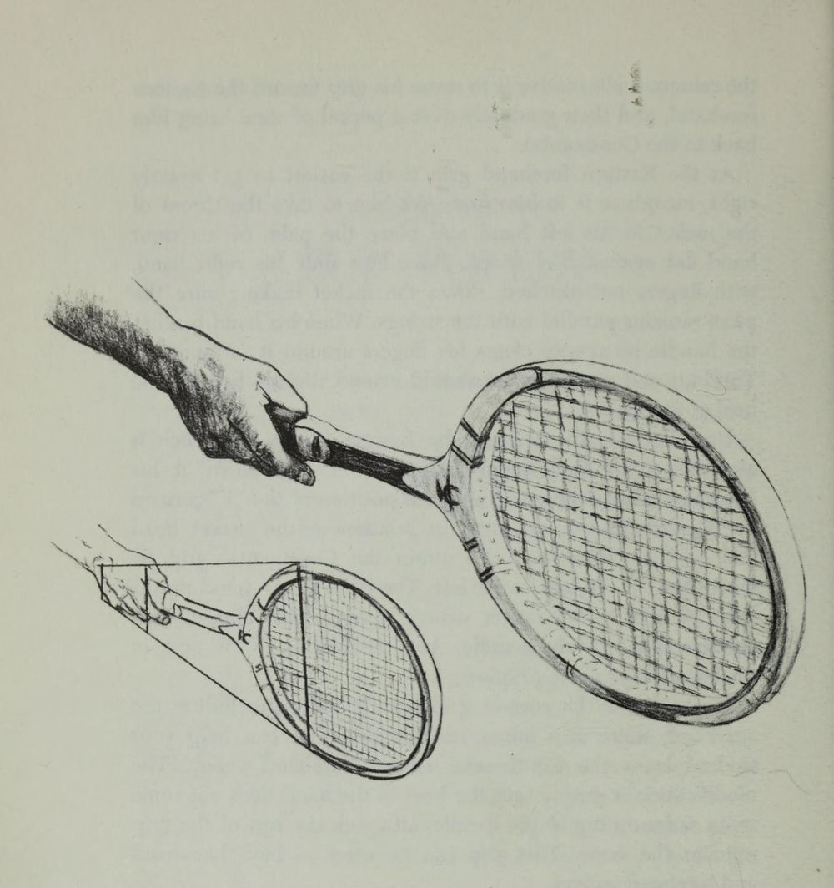
Hình 1. Cách cầm vợt thuận tay kiểu Eastern giống như bắt tay với vợt.
Các ngón tay nên xòe ra một chút để kiểm soát vợt tốt hơn.
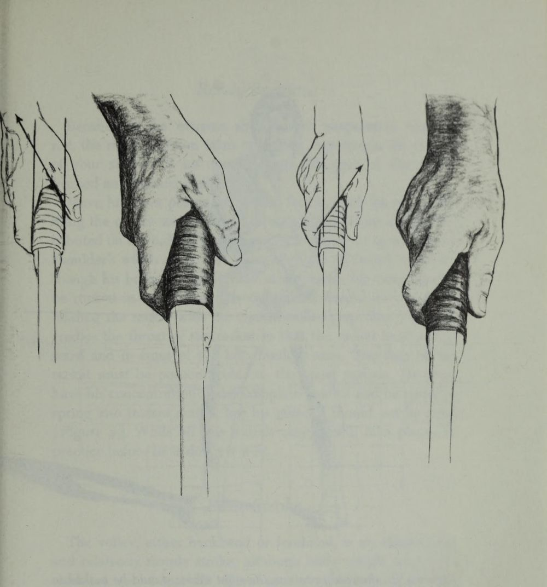
Hình 2. (Trái) Mặc dù có những sửa đổi của phương Đông cách cầm vợt thuận tay, cú đánh duy nhất nó được sử dụng là cú đánh thuận tay.Hình 3. (Phải) Ngoại trừ cú thuận tay, Conti- cách cầm nental được sử dụng trên tất cả các cú đánh bao gồm cú vô lê, cú vô lê nửa, cú đánh qua đầu, cú giao bóng và cú đánh trái tay.
Tùy thuộc vào cú đánh và sở thích của người chơi, ngón cái có thể quấn quanh tay cầm, hoặc như minh họa ở đây, đặt gần như song song với nó.
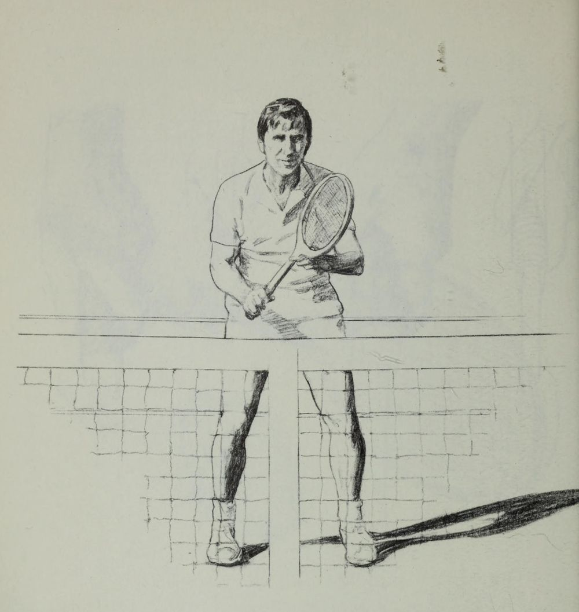
Hình 4. Ở tư thế sẵn sàng, khuỷu tay phải phải khép vào trong ôm sát cơ thể và tay phải hướng về phía trước và ngang hông phải.
Tư Thế Sẵn Sàng
Do thời gian chuẩn bị trên lưới cực kỳ ngắn nên tư thế sẵn sàng càng trở nên quan trọng hơn. Hãy chỉ trích học sinh của bạn nếu học sinh đó không học và học tốt phần này của cú vô lê. Di chuyển anh ta đến vị trí cách lưới từ 8 đến g feet, nằm trên đường giao bóng ở giữa. Trọng lượng của anh ta phải được phân bổ đều lên các quả bóng của cả hai chân, trải rộng ra bằng chiều rộng của vai. Đầu gối của anh ấy phải uốn cong và mặc dù cơ thể anh ấy hơi cong ở thắt lưng, nhưng đoạn đường dốc của anh ấy phải nằm gọn bên dưới anh ấy. Tay phải của anh ta phải giơ cao, cầm vợt với cách cầm bóng chuyền chính xác. Tay trái ôm cổ vợt sao cho đầu vợt hướng về phía trước và ở phía trước vùng vai trái. Mặt vợt phải vuông góc với mặt sân. Anh ta phải hoàn toàn kiểm soát được sự tập trung của mình và sẵn sàng hành động ngay lập tức, nhưng cơ bắp của anh ta không được cứng nhắc (Hình 4). Mặc dù tất cả những điều này nghe có vẻ dễ dàng nhưng anh ấy sẽ phải thực hành rất nhiều trước khi thực hiện thành công.
Cú Đánh Cơ Bản
Cú vô lê, trái tay hoặc thuận tay, là một cú đánh viết tắt và tương đối đơn giản, mặc dù trọng lượng cơ thể và động tác chân rất quan trọng. Cho học sinh của bạn thấy chuyển động của vợt thực sự đơn giản như thế nào. Từ vị trí sẵn sàng, yêu cầu học sinh của bạn di chuyển đầu vợt sang bên phải, đặt mạnh cổ tay về phía sau, đưa vợt song song với lưới. Khuỷu tay của anh ấy phải uốn cong và giữ khá gần với cơ thể. Cẳng tay của anh ấy phải
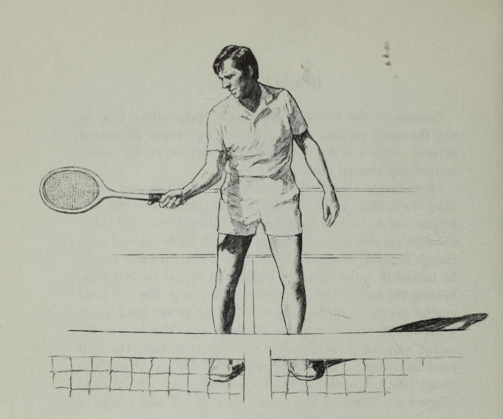
Hình 5. Đặt mạnh cổ tay về phía sau và làm cho nó vững chắc như một mảnh thép là câu trả lời cho việc học cú vô lê thuận tay bằng cách cầm vợt Continental.
phía trước và bên phải hông của anh ấy. Mặc dù anh ta sử dụng cách cầm vợt Continental nhưng anh ta sẽ không gặp khó khăn gì trong việc định vị mặt vợt ở vị trí mở khoảng 35 đến 4o độ. Đầu vợt phải cao hơn cán vợt một chút (Hình 5). Yêu cầu anh ta đưa vợt về vị trí sẵn sàng và sau khi kiểm tra độ bám để chắc chắn rằng nó vẫn đúng, hãy yêu cầu anh ta đưa vợt về vị trí sẵn sàng.
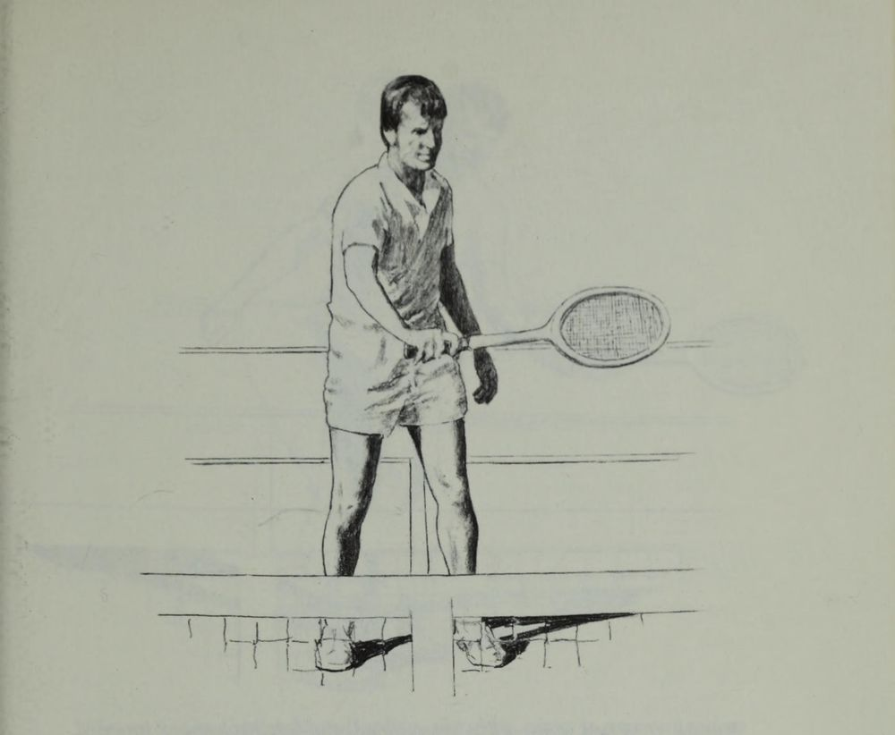
Hình 6. Sức mạnh lớn được tạo nên từ cú vô lê trái tay định vị tốt cẳng tay về phía trước và bằng cách giữ cổ tay hoàn toàn chắc chắn trong toàn bộ cú đánh.
học sinh của bạn di chuyển vợt đến vị trí bóng chuyền trái tay. Sự khác biệt cơ bản giữa cú vô lê này và cú vô lê thuận tay là cổ tay không được đặt về phía sau khi di chuyển vợt song song với lưới. Thay vào đó, vị trí vợt được thực hiện thông qua việc xoay cổ tay và cẳng tay sao cho mu bàn tay hướng lên trời. Tay vợt ở phía trước cơ thể thay vì lệch sang một bên. Giống như cú vô lê thuận tay, mặt vợt mở (Hình 6).
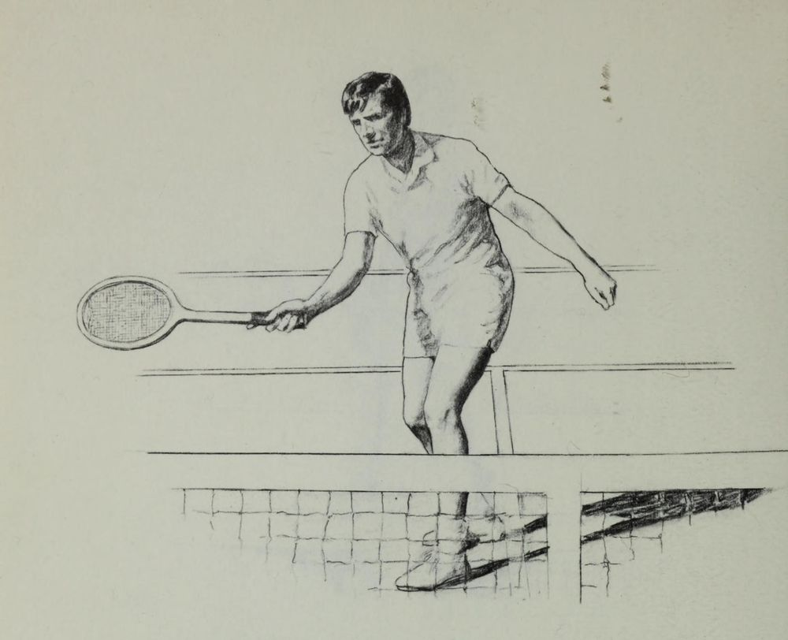
Hình 7. Khi thực hiện động tác bằng chân, hông trái di chuyển về phía trước nhưng vai vẫn song song với lưới.
Trước khi đánh các mẫu bóng chuyền cho học sinh của bạn, bạn cần. để thể hiện động tác bằng chân. Yêu cầu anh ta vào vị trí sẵn sàng. Sau đó, di chuyển vợt đến vị trí thuận tay như đã thực hành trước đó, yêu cầu anh ta bước một bước ngắn về phía trước và sang phải bằng chân trái. Nếu kẻ một đường từ ngón chân phải đến ngón chân trái thì nó gần như vuông góc với lưới (Hình 7).
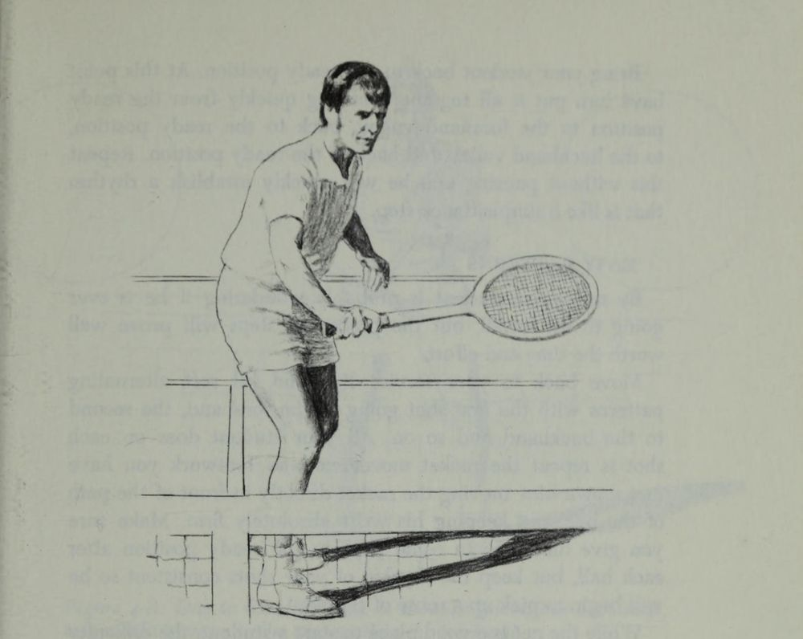
Hình 8. Trong cú vô lê trái tay, trục xoay vai được phát âm là vai trái di chuyển về phía sau và vai phải di chuyển về phía trước.
Điểm đánh phải hướng về phía lưới. Bây giờ yêu cầu học sinh của bạn trở lại vị trí sẵn sàng. Yêu cầu anh ta di chuyển vợt đến vị trí bóng trái tay trong khi bước về phía trước và sang trái bằng chân phải. Chuyển động của vai khá rõ rệt. Đường kẻ từ mũi chân trái đến mũi chân phải sẽ gần như vuông góc với lưới (Hình 8).
Đưa học sinh của bạn trở lại vị trí sẵn sàng..Tại thời điểm này, yêu cầu anh ta tập hợp tất cả lại với nhau, di chuyển nhanh từ vị trí sẵn sàng sang cú vô lê thuận tay, trở lại vị trí sẵn sàng, sang cú vô lê trái tay và trở lại vị trí sẵn sàng. Lặp lại điều này không ngừng và trẻ sẽ nhanh chóng thiết lập được nhịp điệu giống như một bước nhảy đơn giản. MẪU DỄ DÀNG Bây giờ, học sinh của bạn có thể đang tự hỏi liệu mình có định đánh bóng hay không, nhưng các bước trước đó sẽ tỏ ra xứng đáng với thời gian và công sức. Di chuyển trở lại đường giao bóng của bạn và đánh các kiểu xen kẽ mềm mại với cú đánh đầu tiên về phía thuận tay, cú đánh thứ hai về phía trái tay, v.v. Tất cả những gì học sinh của bạn làm trong mỗi cú đánh là lặp lại chuyển động vợt và động tác bằng chân mà bạn vừa chỉ cho học sinh, di chuyển vợt ngay trước đường đi của bóng và giữ chắc cổ tay của học sinh. Hãy đảm bảo rằng bạn cho anh ấy thời gian để trở lại vị trí sẵn sàng sau mỗi quả bóng, nhưng hãy giữ nhịp điệu các cú đánh của bạn nhất quán để anh ấy bắt đầu có cảm giác về thời gian. Mặc dù lưới là một nơi tốt để bắt đầu học viên, nhưng độ khó của các kiểu đánh của bạn lại lớn hơn, vì khu vực mục tiêu mà bạn đánh mỗi quả bóng là khá nhỏ (Hình 4-R). Ngoài ra, các cú đánh của bạn sẽ đi vào lưới thường xuyên hơn vì nó ở ngay trước mặt học sinh của bạn. Nếu điều này xảy ra quá thường xuyên, nhịp điệu trong các động tác của bạn sẽ bị gián đoạn và giải pháp tốt nhất là di chuyển đến gần lưới hơn nhưng thực hiện cú đánh của bạn với tốc độ chậm hơn. Nếu bạn đang làm việc với người mới bắt đầu, bạn có thể vẫn muốn làm điều này hoặc thậm chí đưa các mẫu cho anh ta. Khi anh ấy tiến bộ, bạn có thể bắt đầu đánh chúng, và khi anh ấy tiến bộ hơn, bạn có thể di chuyển xa hơn vài feet so với các kiểu đánh lưới từ một vị trí sân vẫn sâu hơn. Bằng cách di chuyển theo các giai đoạn như thế này trong khoảng thời gian vài bài học, bạn sẽ thấy người mới bắt đầu điều chỉnh khá dễ dàng. Vấn đề đầu tiên bạn sẽ gặp phải là xu hướng học sinh của bạn vung bóng. Ngay khi bạn thấy anh ta làm điều này, hãy nhắc anh ta rằng cây vợt của anh ta ban đầu chỉ đơn giản là một
Hình 4-R. Do sự khác biệt về trục xoay vai, vùng mục tiêu trái tay gần học sinh hơn so với cú thuận tay. chỗ dựa vững chắc để anh ta di chuyển trước quả bóng đang tới. Vì kiểu ban đầu của bạn phải mềm nên động lượng của bóng không phải lúc nào cũng đủ để đưa bóng trở lại lưới sau khi đánh vào vợt của học sinh bạn, vì vậy hãy chắc chắn rằng anh ấy tin rằng bạn không quan tâm đến việc anh ấy đưa bóng trở lại lưới. Nhấn mạnh rằng trong vài bài học đầu tiên, bạn chủ yếu quan tâm đến vị trí cầm vợt, trọng lượng cơ thể và động tác chân của anh ta. Nếu bạn không nói rõ điều này, trẻ sẽ tập trung lấy lại bóng bằng mọi cách có thể, và điều này làm mất đi một trong những lợi thế lớn của việc Dạy chơi theo mẫu.
Đánh Trước Người
Tầm quan trọng của việc thực hiện cú vô lê ở phía trước cơ thể không thể bị phóng đại, và có một số lý do giải thích tại sao. Đầu tiên, việc dồn trọng lượng cơ thể vào phía sau cú vô lê là điều đương nhiên khi bóng được đánh sớm, nhưng hầu như không thể xảy ra nếu vợt bị kẹt vào bụng khi đánh. Thứ hai, việc đánh giá tốc độ và quỹ đạo của quả bóng sẽ dễ dàng hơn nhiều khi vợt tiếp xúc với quả bóng ở phía trước cơ thể. Thứ ba, cánh tay và vợt dễ di chuyển hơn và có sức mạnh lớn hơn nhiều khi duỗi về phía trước. Thứ tư, người chơi có nhiều lựa chọn về vị trí có thể thực hiện cú trả bóng nếu điểm đánh ở phía trước anh ta.
Để gây ấn tượng sâu sắc với học sinh của bạn về điều này, hãy lấy một viên phấn nếu bạn ở trên sân cứng hoặc một cây gậy nếu trên sân đất nện và vẽ một đường song song với lưới ngay trước chân học sinh của bạn. Vẽ một đường song song thứ hai với đường này sao cho các đường cách nhau nhỏ hơn chiều dài của vợt khoảng 6 inch. Đặt các ngón chân lên hàng đầu tiên, yêu cầu học sinh của bạn vào tư thế sẵn sàng. Đầu vợt phải nằm ngay trên đường thứ hai (Hình g). Hãy chỉ ra điều này và giải thích rằng bạn muốn trẻ tiến về phía trước và chuyền bóng trước khi nó đến vạch đầu tiên, mặc dù trẻ sẽ xuất phát từ phía sau vạch thứ hai (Hình 10). Hình g và 10. Các đường song song cung cấp một điểm tham chiếu và ý tưởng hay về ý nghĩa của việc đánh bóng sớm và trước vị trí sẵn sàng của người chơi.
Cú Đấm (Punch)
Bây giờ đến phần thú vị của cú vô lê. Để thay đổi, hãy bắt đầu bằng cú vô lê trái tay thay vì thuận tay. Bằng cách này, học sinh sẽ không bắt đầu cảm thấy phức tạp về một trong hai cơn đột quỵ. Từ vị trí sẵn sàng, yêu cầu anh ta di chuyển vợt sang vị trí chuyền bóng trái tay. Không để vợt di chuyển về phía sau đường ngay trước ngón chân của anh ta, hãy yêu cầu anh ta kéo cán vợt xuống và về phía trước, giữ cho cổ tay thật chắc chắn. Anh ta nên dừng chuyển động này ngay lập tức như khi nó bắt đầu với tổng quãng đường di chuyển là khoảng 8 đến 12 inch. Cú đánh theo quá lớn sẽ dẫn đến sự thiếu chính xác và không thể sẵn sàng cho cú đánh tiếp theo trong quá trình trao đổi nhanh, vì vậy hãy nhớ điều chỉnh anh ta mỗi khi anh ta di chuyển vợt hơn 12 inch. Lần duy nhất một cú đánh theo sau lớn được sử dụng là trong một cú vô lê đẩy bóng cao, nơi cần truyền tốc độ cho bóng. Yêu cầu học sinh của bạn di chuyển trở lại vị trí sẵn sàng trước khi thực hiện cú vô lê thuận tay. Cú đấm và sức mạnh trong cú vô lê thuận tay đến từ vai và cẳng tay. Chuyển động tương tự như một cú đánh rất ngắn trên cưa tay hoặc một cú đấm quyền anh. Chuyển động cơ bản là giữa bàn tay và khuỷu tay với chuyển động vai hạn chế. Cổ tay bị khóa và cứng và không thay đổi so với vị trí nằm ngửa. Bây giờ bạn đã sẵn sàng kết hợp cú đấm và động tác bằng chân với nhau. Lần này khi anh ta di chuyển vợt vào vị trí đánh bóng trái tay, hãy yêu cầu anh ta thực hiện bước ngắn mà bạn đã thực hành trước đó, và ngoài ra khi trọng lượng của anh ta di chuyển về phía trước, hãy kích hoạt cú đấm ngắn về phía trước và hướng xuống. Yêu cầu anh ta trở lại vị trí sẵn sàng và thực hiện điều tương tự ở phía thuận tay. Lặp lại bài tập hướng dẫn này cho đến khi anh ấy thực hiện nó một cách trôi chảy. Bây giờ bạn đã sẵn sàng để đánh các kiểu xen kẽ, trong khi học sinh của bạn thực hành cú đấm ngắn ở cả cú vô lê trái tay và thuận tay mà không có bất kỳ khoảng dừng nào ở giữa. Hãy sẵn sàng
dừng lại và điều chỉnh nếu anh ta bắt đầu đu dây. Hãy chắc chắn rằng anh ta hiểu rằng vợt không nên được đưa về phía sau vạch trước ngón chân của anh ta và trên thực tế, nên giữ vợt ở phía trước và chỉ cần di chuyển về phía trước vào đường bay của bóng. Trọng lượng cơ thể là chìa khóa cho một cú vô lê mạnh mẽ và quy trình tiếp theo sẽ rất hiệu quả trong việc giúp học sinh của bạn hiểu được ý bạn muốn nói. Để anh ta đối mặt với lưới ở tư thế sẵn sàng. Đứng đối mặt với anh ấy đủ xa để khi bạn dang tay ra, lòng bàn tay của bạn cách vai phải của anh ấy khoảng 6 inch. Yêu cầu anh ấy tựa trọng lượng của mình vào tay bạn mà không di chuyển chân. Hãy sẵn sàng đỡ một phần trọng lượng của anh ấy để anh ấy không bị mất thăng bằng. Cảm giác gần như ngã về phía trước khi tựa vào tay bạn cũng giống như cảm giác mà anh ấy nên có khi bắt đầu tiến về phía trước để chặn bóng trên cú vô lê. Điều này đúng ngay cả khi không có đủ thời gian để thực hiện động tác bằng chân thích hợp. Bây giờ, hãy nhanh chóng đưa tay bạn ra xa và anh ấy sẽ phải bước nhanh về phía trước một bước ngắn để bắt kịp. Việc anh ấy bước về phía trước với động lượng cơ thể đáng kể giống như cảm giác mà anh ấy sẽ có khi chạm bóng. Bây giờ anh biết cảm giác đó nên như thế nào. Việc kết hợp tất cả những điều này lại với nhau sẽ mất thời gian và luyện tập nhiều, nhưng một khi anh ấy đã liên tục thực hiện những cú vô lê dễ dàng, bạn không nên nói với anh ấy mà hãy tăng dần tốc độ đánh bóng của mình. Điều sẽ xảy ra là học trò của bạn sẽ bắt đầu thực hiện một số cú vô lê đẹp, chắc chắn, thực sự bay qua lưới và cả hai bạn sẽ cảm thấy phấn khích khi biết một bước quan trọng đã hoàn thành.
Mẫu Hình Ngẫu Nhiên
Cho đến thời điểm này, các mô hình của bạn đã hướng tới việc thiết lập cú chuyền bóng cơ bản. Bây giờ là lúc làm cho mọi thứ trở nên khó khăn hơn một chút về mặt mẫu mã.
Bạn đã thực hiện các cú đánh xen kẽ và học sinh của bạn đã biết trước cú đánh tiếp theo sẽ đến ở đâu. Khi đánh các kiểu ngẫu nhiên, bạn trộn lẫn các cú đánh của mình, do đó lấy đi lợi thế này của anh ta. Bạn có thể bắt đầu một kiểu đánh trái tay hoặc thuận tay, sau đó đánh hai cú đánh liên tiếp về cùng một phía. Điều này sẽ làm rối loạn lưới chơi của anh ta khá đáng kể, vì vậy tốt nhất là nên cảnh báo anh ta. Một cách tiếp cận hiệu quả là nói, "Được rồi, bạn đang đánh những cú vô lê chắc chắn, nhưng tôi cá là tôi có thể khiến bạn trượt nếu không đánh sang hai bên. Tôi thậm chí sẽ đánh nhẹ nhàng hơn một chút, nhưng bạn sẽ không biết họ sẽ đến bên nào. Đây có phải là một vụ cá cược không?" Nếu học trò của bạn háo hức, anh ấy sẽ cho bạn biết anh ấy sẽ đánh mỗi cú đánh như thế nào cũng như trước đây. Nhưng biết được cú đánh tiếp theo sẽ đi đâu trước khi nó trúng đích là một lợi thế rất lớn. Việc dạy chơi theo mẫu sẽ rất thú vị. Dành thời gian để thực hiện một trò chơi có các mẫu ngẫu nhiên. Trộn chúng lên trong khi anh ấy cố gắng đánh bại bạn. Liệu anh ta có biết cú đánh cuối cùng sẽ đi đến đâu nếu bạn đã đánh ba cú liên tiếp vào cú trái tay của anh ta không? Nếu bạn đánh lừa anh ấy, hãy đùa anh ấy một chút và anh ấy sẽ đáp lại thử thách. Điều này hoàn thành hai điều. Đầu tiên, trẻ sẽ bắt đầu học cách dự đoán. Theo bản năng, anh ấy sẽ bắt đầu quan sát bạn khi bạn đánh từng cú đánh, tìm kiếm những dấu hiệu nhỏ hoặc dấu hiệu về nơi bạn sẽ đánh bóng. Thứ hai, thử thách sẽ kích thích sự hứng thú của trẻ vì trẻ sẽ nhận ra bước này là một bước quan trọng hướng tới việc chơi thực sự. Hãy kiên nhẫn nếu anh ấy bắt đầu bỏ sót một cách nghiêm trọng, vì lần đầu tiên sự chú ý của anh ấy bị phân tán. Nếu anh ấy tiếp tục gặp khó khăn, hãy quay lại một vài cách xen kẽ để thiết lập lại sự tự tin cho anh ấy.
Di Chuyển Ngang
Chuỗi mô hình này rất quan trọng, nếu người chơi không nắm vững nó, khả năng chơi trên lưới của anh ta sẽ bị hạn chế nghiêm trọng. Chuỗi mẫu có hai mục tiêu. Đầu tiên là động tác bằng chân. Cụ thể là không phải cái gì
bắt đầu bằng chân, nhưng làm thế nào để đến điểm đánh bằng chân chính xác. Mục tiêu thứ hai là khiến anh ta tập trung vào bóng để anh ta dồn toàn bộ trọng lượng cơ thể vào sau mỗi cú vô lê. Động tác chân cơ bản được giới thiệu ở thời điểm này sẽ kết hợp với tất cả các cú đánh khác và tạo tiền đề cho một cầu thủ tấn công, hoặc nếu không được học đúng cách, một cầu thủ phòng thủ. Khái niệm này rất đơn giản và cực kỳ quan trọng. Bàn chân đưa người chơi vào vị trí không được coi là bàn chân của cú đánh. Nếu anh ta học được điều này sớm, anh ta sẽ được lập trình trong tâm trí để không dựa vào chân đánh để đưa bóng. Để đạt được mục tiêu của loạt mẫu này, bạn phải cho học sinh của mình di chuyển song song với lưới để lấy được bóng. Tất cả những gì bạn phải làm là đánh mỗi cú đánh xa hơn một bước về bên trái hoặc bên phải của anh ta so với những gì bạn đã làm. Giữ chúng cao đến thắt lưng như trước và đánh nhẹ nhàng để anh ấy có nhiều thời gian. Vì chuyển động ngang này sẽ khá lạ đối với anh ta, hãy quay lại các kiểu xen kẽ để anh ta biết trước cú đánh của bạn sẽ đến đâu. Chìa khóa để học trò của bạn nắm vững được chiều hướng mới này là để anh ta hiểu những gì anh ta phải làm. Anh ta phải di chuyển nhanh để có một cú sút rộng và đạt được một vị trí mới mà sau đó trở nên giống nhau, so với đường bay của quả bóng, giống như tất cả các cú đánh mẫu mà anh ta đã xử lý. Điều đó nghe có vẻ dễ dàng ngoại trừ tất cả các động tác chân trước đó trong cú vô lê chỉ liên quan đến việc một chân bắt chéo qua và về phía trước. Bây giờ anh ấy trước tiên phải thực hiện thêm một bước. Trước khi đánh bất kỳ mẫu rộng nào, bạn nên xem qua động tác bằng chân. Lấy trái tay chẳng hạn, hãy đưa học trò của bạn vào tư thế sẵn sàng. Yêu cầu anh ta bước một bước sang trái bằng chân trái và giữ vững. Đưa chân phải về phía chân trái, nhưng thay vì trụ vững, anh ta lại bắt đầu thực hiện cú vô lê. Trọng lượng của anh ấy chuyển về phía lưới, di chuyển khỏi chân trái khi anh ấy tiến về phía trước để tiếp xúc với bóng.
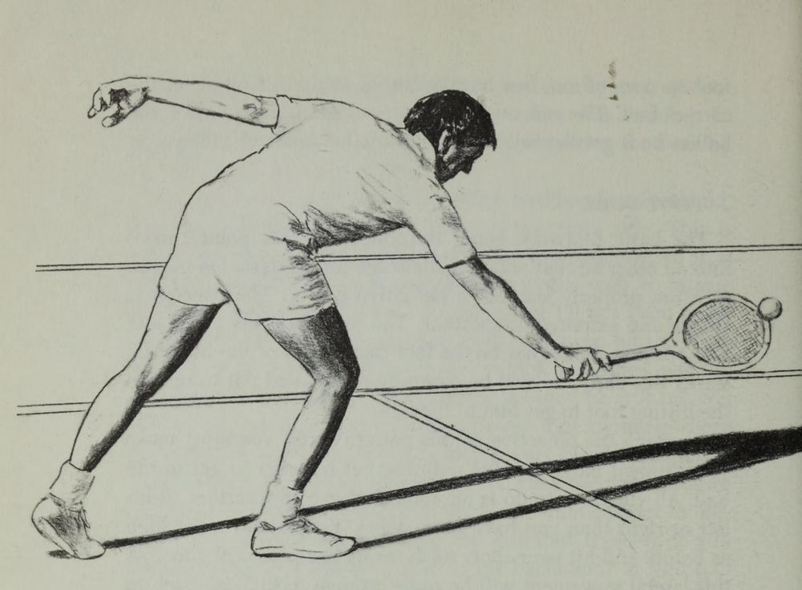
Hình 11. Bàn chân đưa cầu thủ vào vị trí không nên chân là một phần của cú đánh, nhưng trong trường hợp này chân phải đang thực hiện nhiệm vụ kép.
Kết quả là trọng lượng cơ thể dồn về phía đường biên thay vì dồn vào cú đánh. chính xác như anh ấy đã làm trong tất cả các mẫu trước đó. Đưa anh ta trở lại vị trí sẵn sàng và yêu cầu anh ta thực hiện cú vô lê thuận tay bắt đầu bằng chân phải. Thực hành điều này bằng cách di chuyển đầu tiên sang trái tay sau đó sang thuận tay mà không dừng lại ở vị trí sẵn sàng. Lặp lại điều này cho đến khi anh ấy di chuyển trơn tru. Bây giờ bạn nên quay trở lại vị trí sân bình thường mà từ đó bạn đã đánh các kiểu đánh và yêu cầu học trò của bạn thực hiện động tác bằng chân một lần nữa. Khi anh ấy làm điều này, hãy ghi nhớ trong đầu xem bước đi đầu tiên đã đưa anh ấy đi được bao xa. Hãy nhắm các bức ảnh mẫu của bạn rộng đến điểm đó. Sau khi com-
Khi hoàn thành từng mẫu, học sinh của bạn phải ở gần lưới hơn so với khi bắt đầu. Điều này có nghĩa là anh ta đang di chuyển vào bóng đúng cách và anh ta sẽ phải di chuyển lùi lại trước khi bắt đầu một kiểu đánh khác. Chuỗi mô hình này nên được luyện tập nhiều lần cho đến khi anh ta liên tục di chuyển vào cú vô lê bằng chân chính xác. Khi học sinh của bạn bắt đầu tiến bộ rất tốt, bạn cần phải thúc ép học sinh đó thật nhiều bằng cách tăng độ khó của mẫu. Chuyển động ngang là kẻ thù của một cú vô lê được thực hiện tốt và mỗi cầu thủ cố gắng làm cho đối thủ của mình căng ra để thực hiện cú đánh và sau đó theo đuổi lợi thế có được (Hình 11). Mô hình của bạn phải thực hiện chính xác điều tương tự để anh ấy trở thành chuyên gia trong việc đạt được vị trí vững chắc mới trước cú vô lê của mình. Khi anh ấy đã thành thạo điều này, sẽ rất khó để đối thủ có thể ép anh ấy vào lưới. ĐÁNH BÓNG Sự hoàn thiện cuối cùng trong kỹ thuật chuyền bóng và sự khác biệt giữa một người chơi bóng chuyền rất giỏi và một người chơi giỏi, đó là học cách tập trung vào bóng. Điều này không chỉ giúp bạn dễ dàng thực hiện nhiều tốc độ trên bóng mà còn khiến đối thủ khó đoán được hướng bóng sẽ được đánh. Trong hai ví dụ đầu tiên, vị trí tổng thể rất tốt (Hình 12, Hình 13). Vợt hướng về phía lưới tốt và cả động tác chân cũng như khả năng giữ thăng bằng cơ thể đều tuyệt vời. Nhưng trong cả hai ví dụ, các quả bóng được đẩy sang một bên và toàn bộ trọng lượng cơ thể sẽ không có trong cả hai lần đánh. Ngoài ra, nhưng không kém phần quan trọng, là trong cả hai tình huống, bóng có thể dễ dàng được chuyền xuống đường biên ngang, nhưng mức độ khó khi đi chéo sân sẽ tăng lên khá nhiều. Bởi vì điều này, và đặc biệt nếu quả bóng sắp tới được đánh thực sự tốt, người vô lê sẽ thực hiện phần trăm cú sút ở đường biên. Vấn đề là một đối thủ có kinh nghiệm sẽ nhìn thấy điều này và trong hầu hết các trường hợp đều dự đoán chính xác hướng của cú vô lê.
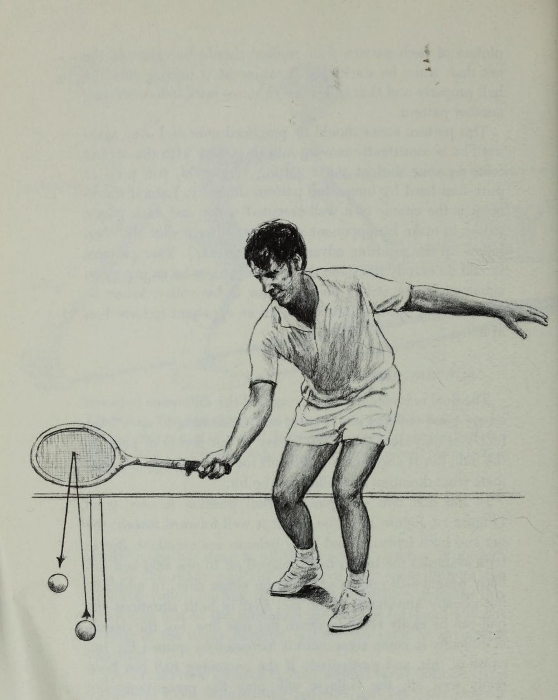
Hình 12. Vợt hướng về phía lưới và cả hai chân công việc và sự cân bằng cơ thể là tuyệt vời.
Nhưng trong cả hai ví dụ, quả bóng được đánh sang một bên và toàn bộ trọng lượng cơ thể sẽ không
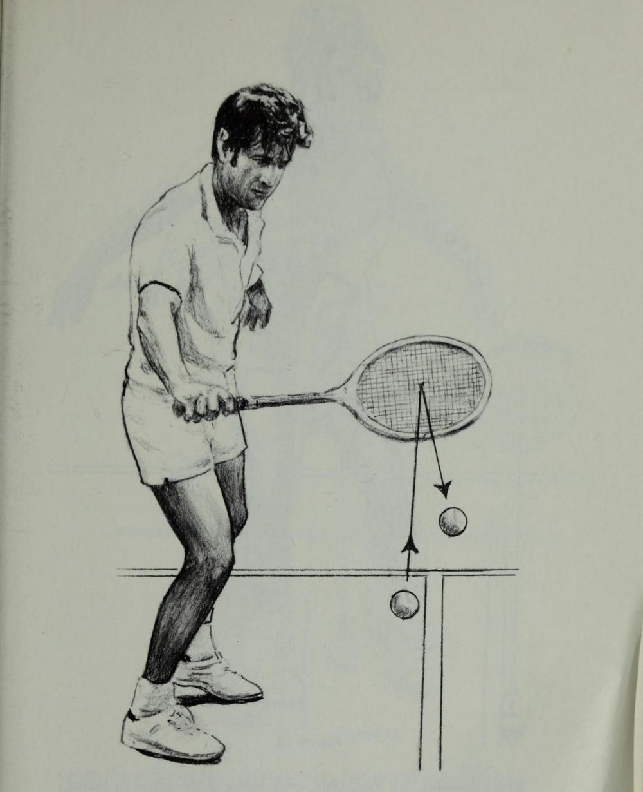
Hình 13.
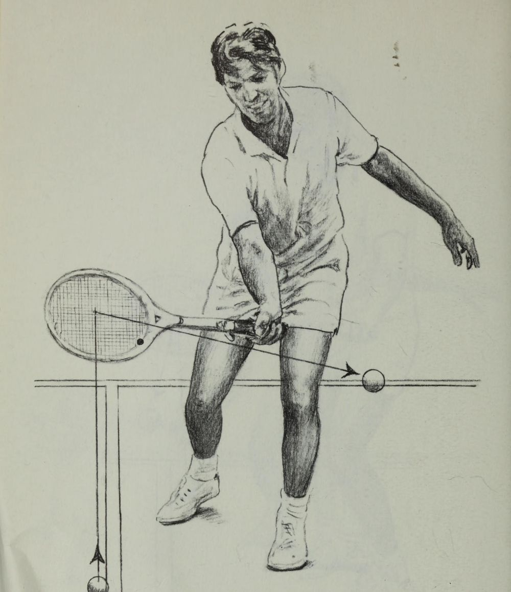
Hình 14.
Trong hai ví dụ thứ hai, mọi thứ đều giống nhau về động tác chân và thăng bằng cơ thể, nhưng bóng đã bị đông (Hình 14, Hình 15). Kết quả là toàn bộ trọng lượng cơ thể sẽ dồn vào mỗi cú đánh bất kể nó được đánh theo hướng nào. Và được-
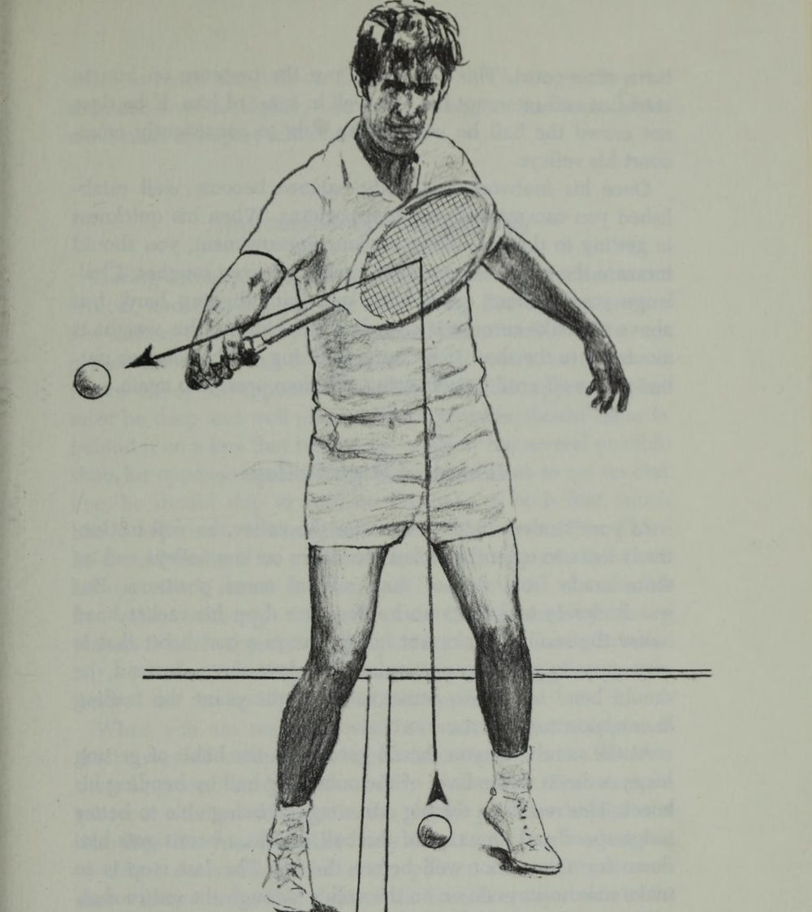
Hình 15.
Bởi vì người vô lê có thể đi ngang sân dễ dàng như ở cuối đường biên, sự dự đoán của đối thủ sẽ chỉ còn là phỏng đoán thuần túy. Trong loạt mẫu này, hãy yêu cầu học sinh của bạn đánh tất cả các cú đánh lại của mình.
quay chéo sân. Điều này thực sự sẽ gây áp lực cho anh ta để bắt đầu nhanh và đánh chặn bóng tốt trước mặt anh ta. Nếu anh ta không dồn bóng, anh ta sẽ không thể thực hiện cú vô lê chéo góc một cách nhất quán. Khi động tác chân và khả năng giữ thăng bằng của cơ thể đã ổn định, bạn có thể chuyển sang các kiểu ngẫu nhiên. Khi tốc độ tiếp bóng nhanh của anh ấy cho thấy sự cải thiện rõ rệt, bạn nên tăng tốc độ các cú đánh của mình để khiến cú đánh trở nên khó khăn hơn. Thử thách học trò của bạn, đẩy anh ta, giữ anh ta cố gắng đào bóng, nhưng trên hết hãy đảm bảo rằng anh ta đang dồn bóng và trọng lượng của anh ta dồn vào cú đánh. Nếu anh ấy bắt đầu chùn bước ở những kiểu khó hơn, hãy thả lỏng cho đến khi anh ấy bắt đầu và sau đó nhấn lại anh ấy.
Volley Thấp và Cao
Khi học sinh của bạn bắt đầu thành thạo cú vô lê, theo bản năng, anh ta sẽ học cách mở mặt vợt nhiều hơn ở những cú vô lê thấp và những cú vô lê được thực hiện từ các vị trí sân sâu hơn bình thường. Nhưng hãy quan sát kỹ để đảm bảo anh ta không hạ đầu vợt xuống dưới tầm tay cầm vợt. Đây là một thói quen xấu rất dễ mắc phải, đặc biệt khi chụp ảnh ở tầm thấp. Thay vào đó, anh ta nên uốn cong đầu gối của mình, thỉnh thoảng đến mức đầu gối sau gần như chạm vào sân. Đồng thời, bạn nên tập cho anh ta thói quen nhìn xuống tầm của quả bóng đang tới bằng cách uốn cong đầu gối của anh ta. Điều này mang lại lợi thế lớn là có thể phán đoán tốc độ và hướng của quả bóng tốt hơn, đồng thời như một phần thưởng giúp anh ta hạ gục đối phương bằng một cú đánh thấp trước khi đánh. Bước cuối cùng là đảm bảo anh ta tiếp tục thực hiện cú vô lê trong toàn bộ cú đánh. Nếu anh ta đứng thẳng khi đánh, hiệu ứng tương tự như việc cẩn thận ngắm nhìn một khẩu súng trường và sau đó đứng dậy ngay khi bóp cò. Ở những cú vô lê cao, anh ta sẽ sớm học cách khép mặt vợt và đánh bóng xuống. Anh ta cũng sẽ học được rằng cú vô lê càng cao thì trục vợt sẽ càng thẳng đứng trong
để tiếp cận bóng. Khi anh ấy đánh bóng giỏi ở ngang vai hoặc cao hơn, bạn có thể yêu cầu anh ấy sử dụng một số chuyển động của cổ tay để tăng thêm tốc độ.
Cú Tiếp Cận — Volley Đầu Tiên
Trong quá trình thi đấu thực tế, cú vô lê đầu tiên là khó khăn nhất và quan trọng nhất, và nếu nó yếu thì tỷ lệ cược sẽ nghiêng mạnh về phía người tung lưới. Nhưng chìa khóa để có cú vô lê đầu tiên thành công là cú đánh tiếp cận. Cho dù đó là một cú giao bóng, trả giao bóng hay một cú đánh chạm đất từ bóng nông của đối phương, thì cú đánh tiếp cận phải sâu và đúng vị trí. Người đẩy lưới phải tiến vào phía sau trên một đường chia đôi góc của một số cú đánh có thể mà đối thủ của anh ta có thể thực hiện một cách an toàn. Khi anh ta chạm lưới trên đường đó, anh ta nên bỏ qua hoặc tiếp đất bằng bóng bằng cả hai chân, giống như trò nhảy lò cò, trong khu vực chung của đường giao bóng. Ở đó, anh ta nên do dự trong tích tắc và đánh giá chính xác hướng trả bóng của đối thủ rồi tiến vào thực hiện cú vô lê đầu tiên. Mặc dù việc tạm dừng ngắn ngủi này được thực hiện bởi tất cả các cầu thủ hàng đầu nhưng nó không rõ ràng trừ khi bạn đang tìm kiếm nó, nhưng trong một giải đấu trên sân cỏ, một khu vực bị mòn sẽ sớm xuất hiện ngay trước vạch giao bóng như một bằng chứng tích cực. Khi bạn đã sẵn sàng thực hiện cú đánh tiếp cận của học sinh, một loạt mẫu rất hiệu quả là bắt đầu với hai cú đánh đầu tiên là những cú đánh tiếp đất, sau đó là hai cú vô lê. Ví dụ: yêu cầu học sinh của bạn đảm nhận vị trí sẵn sàng phía sau đường cơ sở. Đánh cú đánh đầu tiên của bạn khá sâu về phía thuận tay của anh ta giống như cách bạn thực hiện một loạt cú đánh mặt đất thông thường. Cú đánh thứ hai của bạn sẽ cách đường biên ngang từ 8 đến 10 feet, chẳng hạn như cú đánh trái tay của anh ta. Đây là cú đánh tiếp cận, và anh ta nên di chuyển vào để đánh bóng sâu và đưa bóng vào lưới. Quả bóng thứ ba của mẫu mà anh ta nên xử lý như một cú vô lê ngay bên trong khu vực đường giao bóng, và quả bóng thứ tư và cũng là quả bóng cuối cùng cũng phải là một quả vô lê.
Phần II — Giao Bóng và Đánh Trên Đầu
Hai cú đánh quyết định điểm số: cú giao bóng (chương 3) và cú đánh trên đầu (chương 4).
Chương 3
Cú Giao Bóng
Quả giao bóng chắc chắn là cú đánh quan trọng nhất trong vũ khí của người chơi. Nó có thể giành được một điểm hoàn toàn, hoặc ít nhất là tạo tiền đề để tỷ lệ giành chiến thắng nghiêng về máy chủ. Nếu người giao bóng có thể thực hiện được điều này với tỷ lệ phần trăm điểm cao, anh ta sẽ liên tục giành được cú giao bóng của mình. Nếu anh ta thắng nó trong mỗi lần giao bóng, anh ta không thể thua được. Giống như người ta nói, không có gì đáng giá đến một cách dễ dàng, và điều đó tăng gấp đôi đối với cú giao bóng, vì cho đến nay đây là cú đánh phức tạp và khó thành thạo nhất. Điều khiến nó phức tạp là người giao bóng được yêu cầu thực hiện các hành động riêng biệt và dường như không liên kết để truyền năng lượng vợt tối đa tới quả bóng. Ngoài ra, lần đầu tiên độ xoáy được giới thiệu như một thành phần chính và quan trọng của một cú đánh, và để tạo độ xoáy lớn lên quả bóng, vợt phải di chuyển ra xa đáng kể so với hướng bóng đi. Trước khi đi sâu vào tác động thực sự của độ xoáy đối với đường bay của quả bóng, hãy hiểu mối quan hệ giữa độ xoáy, tốc độ và vị trí. Cho dù một cú giao bóng được đặt tốt đến đâu, nếu nó không có tốc độ và chỉ là một cú giao bóng hỏng, bất kỳ người chơi giỏi nào cũng sẽ tiến vào và tiêu diệt nó, Thêm đủ tốc độ cho một cú giao bóng được đặt đúng chỗ, và kết quả là một quân át. Điều đó nghe có vẻ dễ dàng ngoại trừ cú giao bóng phẳng tốc độ cao không có độ xoáy và độ xoáy là khả năng kiểm soát. Đó là lý do tại sao cú giao bóng phẳng không thể thực hiện được với độ chính xác cao. Nói cách khác, nếu một tay vợt hàng đầu của giải đấu chỉ được phép giao bóng một lần, anh ta sẽ hiếm khi mạo hiểm thực hiện cú giao bóng phẳng tốc độ cao, vì biết rằng nếu anh ta đánh trượt nó thì điểm sẽ bị mất.
kết thúc đi. Nếu không có xoáy, anh ta không thể kiểm soát bóng. Với độ xoáy, anh ấy không chỉ có thể đặt nó một cách nhất quán ở nơi anh ấy muốn mà còn có thể nhắm nó cao hơn nhiều so với lưới và nó vẫn đi vào lưới, và mặc dù quả bóng đang di chuyển về phía trước với tốc độ chậm hơn, độ xoáy vẫn giữ cho nó không bị thiết lập. Điều khó chịu nhất là máy chủ không thể có tốc độ tối đa và độ quay tối đa cùng một lúc. Anh ta có thể xây dựng rất nhiều tốc độ hoặc năng lượng cho vợt, chỉ vậy thôi. Anh ta có thể chuyển tất cả nó sang tốc độ và không quay, dẫn đến cú giao bóng phẳng. Hoặc anh ta có thể chuyển phần lớn nó thành xoáy và rất ít tốc độ về phía trước, như trong trường hợp của cú xoay người kiểu Mỹ. Anh ta có thể chọn bất kỳ sự kết hợp nào giữa hai thái cực này mà anh ta muốn, nhưng khi anh ta tăng tốc độ, độ xoáy phải giảm và cùng với đó là khả năng kiểm soát. Xem Sơ đồ A và B. Sơ đồ A. Giao bóng phẳng có rất ít sai số. Sơ đồ B. Cú giao bóng xoáy có sai số lớn. Trong thời đại đột phá công nghệ nhanh chóng này, việc hiểu cách thức và lý do một điều gì đó xảy ra, thay vì chấp nhận nó theo giá trị bề ngoài, là một trong những nguyên tắc then chốt giúp tạo nên những đột phá. Khi áp dụng vào việc giao bóng, nguyên tắc này đã dẫn đến một số đột phá đáng ngạc nhiên, không chỉ với các học viên mà cả với những người chơi dày dạn kinh nghiệm đang gặp khó khăn với các vấn đề giao bóng. Nó tập trung vào thực tế là nhiều người chơi không hiểu cách xoáy điều khiển đường bay
của quả bóng. Họ được hướng dẫn đánh lên trời nhiều hơn nếu bóng đi quá dài. Họ được yêu cầu đưa vợt di chuyển nhiều hơn về bên phải vì điều này sẽ làm cho bóng cong sang bên trái. Vấn đề là những hướng dẫn này dường như mâu thuẫn với những gì đã được học về các cú đánh trên mặt đất, nơi họ được dạy phải thực hiện theo hướng mà họ muốn bóng đi. Vì vậy, cần có thời gian để tinh thần chấp nhận điều này. Điều xảy ra là họ lắng nghe những gì họ phải làm nhưng lại gặp khó khăn khi thực hiện điều đó. Một ví dụ hoàn hảo là yêu cầu một học viên đang giao bóng tốt với cách cầm thuận tay chuyển sang kiểu đánh Continental. Vấn đề không nằm ở thể chất, vì anh ấy hoàn toàn có khả năng vung vợt đúng cách. Vấn đề thực sự là cách cầm vợt kiểu Continental và kết quả là góc mặt vợt không có ý nghĩa gì đối với anh ta, và do đó khi anh ta sử dụng cách cầm vợt mới, anh ta sẽ gặp rắc rối. Thực tế là, thời điểm anh ấy thực sự chấp nhận cách hoạt động của độ xoáy và lý do tại sao cách cầm vợt Continental lại cần thiết, thì sự tiến bộ của anh ấy sẽ rất nhanh chóng. Điều khiển xoáy và dẫn bóng rất chính xác. Nó làm như vậy vì vận tốc trên quả bóng là tổng của tốc độ tiến cộng hoặc trừ tốc độ quay. Chuyển động tiến và quay kết hợp để tạo ra hai vùng áp suất không khí khác nhau. Một mặt của quả bóng chịu một vận tốc gió bằng vận tốc tịnh tiến của nó cộng với vận tốc quay. Phía bên kia trải qua vận tốc tịnh tiến trừ đi vận tốc quay. Một điểm đáng chú ý về mặt kỹ thuật là một quả bóng quay ở bất kỳ tốc độ nào, nhanh hay chậm, sẽ không cong nếu nó không có chuyển động về phía trước. Nhìn vào mặt trước của quả bóng như bạn sẽ làm khi trả giao bóng, áp suất không khí tích tụ ở nửa trước đang quay về phía bạn và giảm đi ở nửa trước đang quay ra xa bạn. Trong Sơ đồ C, áp suất không khí tích tụ ở phía bên trái của quả bóng và giảm ở phía bên phải, làm cho quả bóng cong từ trái sang phải, như trong trường hợp giao bóng cắt lát. Tùy thuộc vào cách vợt đánh bóng, trục này có thể nghiêng ở mức độ khác nhau. Trong trường hợp cú giao bóng xoáy ở Sơ đồ D, trục quay đã được
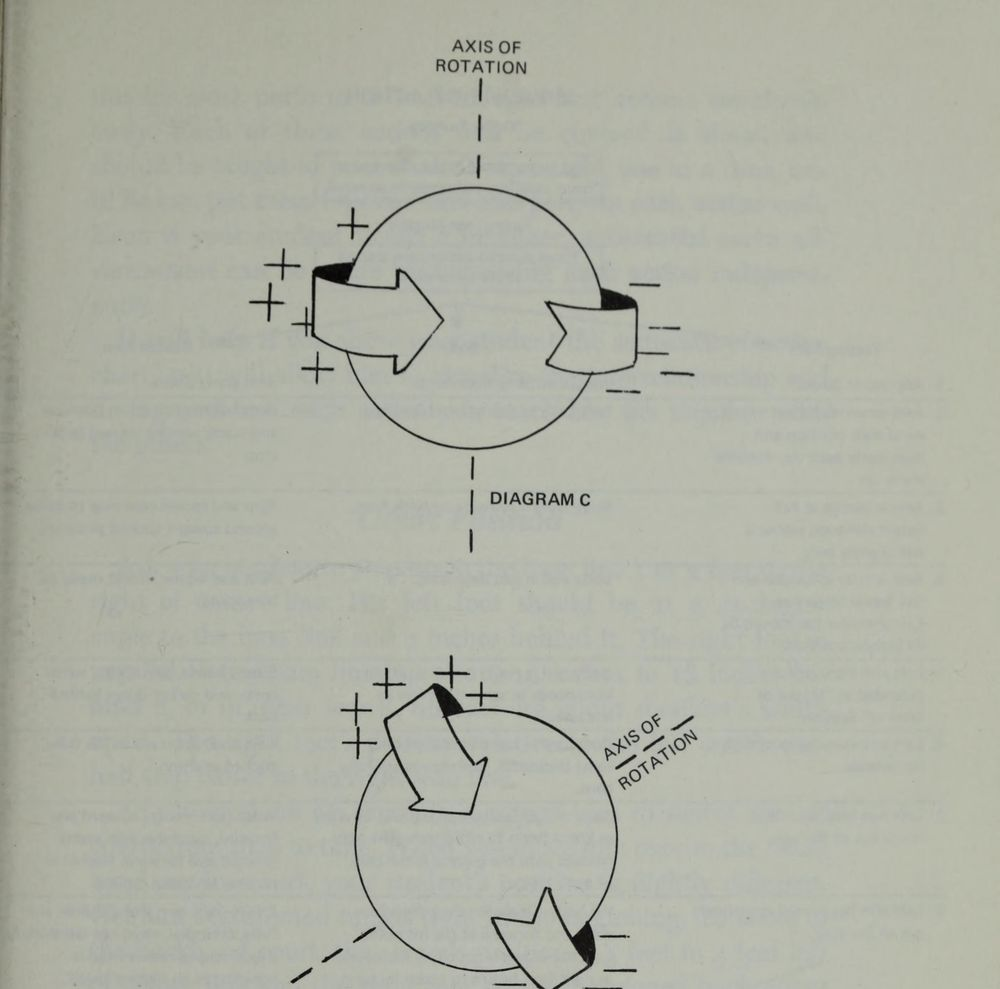
SƠ ĐỒ D nghiêng và quả bóng sẽ cong xuống, cũng như từ trái sang phải.
Học sinh của bạn sẽ được hưởng lợi nhiều nhất từ việc này là anh ta sẽ hiểu cách điều khiển bóng, rằng việc điều khiển là chính xác và không thay đổi dựa trên một công thức toán học, và để truyền độ xoáy cho quả bóng, vợt phải di chuyển theo hướng khác với đường bay mong muốn của quả bóng. Kết quả là anh ta sẽ có một bức tranh rõ ràng không chỉ về những gì anh ta phải làm để phát triển một cú giao bóng tốt mà còn về lý do tại sao.
tăng tốc nhanh chóng.
Trình Tự Giao Bóng
Mỗi ounce sự tập trung và khả năng cơ bắp của người giao bóng phải hướng tới việc truyền năng lượng và độ chính xác tối đa của vợt vào việc thực hiện cú giao bóng. Để hoàn thành
điều này anh ta phải thực hiện đồng thời một số hành động độc lập. Mỗi hành động này sẽ được đề cập chi tiết và phải được dạy riêng cho học sinh của bạn, từng hành động một, cho đến khi học sinh có thể kết hợp chúng lại với nhau mà vẫn thực hiện tốt từng hành động. Ngay cả khi học trò của bạn không phải là người mới bắt đầu, bạn vẫn có thể đạt được tiến bộ đáng kể về cú giao bóng bằng cách cải thiện từng động tác một cách độc lập. Sẽ rất hữu ích nếu bạn cho học sinh xem biểu đồ trình tự hành động, vì nó sẽ cho phép trẻ hình dung mối quan hệ qua lại và thời gian cũng như cách mỗi hành động bạn dạy trẻ phù hợp với những hành động khác.
Vị Trí Trên Sân
Yêu cầu học sinh của bạn bước lên vạch cơ sở cách đường giữa 1 hoặc 2 feet. Bàn chân trái của anh ta phải tạo một góc 45 độ so với đường cơ sở và cách đường cơ sở 2 inch. Bàn chân phải song song với chân Jine nhưng cách chân Jine khoảng 12 inch đến 18 inch, hay nói cách khác, hai chân của anh ấy cách nhau khoảng bằng vai. Vị trí của chân phải so với chân trái là gần nửa bước so với đường biên bên phải. Khi bạn thực hiện cú giao bóng của anh ta, thỉnh thoảng bạn nên chuyển đổi các ô giao bóng. Khi bạn chuyển anh ta sang sân giao bóng trái tay, vị trí của học sinh của bạn sẽ hơi khác một chút. Hãy cho anh ấy làm quen với điều này ngay từ đầu. Để giao bóng sang sân trái tay, vị trí của người giao bóng cách đường giữa sân từ 3 feet đến 4 feet và bàn chân phải phải lùi lại xa hơn khoảng nửa bước so với đường biên bên phải mặc dù vẫn song song với đường cuối sân. Động tác này xoay cơ thể thêm vài độ để bù lại góc khác nhau giữa người giao bóng và sân giao bóng trái tay.
Tư Thế Đứng
Mỗi khi học trò của bạn chuẩn bị giao bóng, điều đầu tiên bạn nên kiểm tra là thái độ căng thẳng của học trò. Hãy chắc chắn rằng tay cầm quả bóng tennis của anh ấy không bị cứng và tay cầm vợt không bị cứng.
bị siết chặt thành một nắm tay trắng bệch. Thực sự nhấn mạnh tầm quan trọng của việc thư giãn trong quá trình chuẩn bị giao bóng. Đây là một trong những yếu tố quan trọng trong việc phát triển một cú giao bóng lớn liên tục cho bất kỳ người chơi nào, vì khả năng các cơ chuyển sang hành động nhanh và mượt mà phụ thuộc rất nhiều vào việc các cơ đối phương được thư giãn hoàn toàn. Một nhóm cơ không nhất thiết phải “buông ra” trước khi những nhóm cơ khác tiếp quản. Sự căng thẳng, bằng cách khiến một cơ bị kéo vào cơ khác, không chỉ gây ra lỗi giao bóng và cướp sức mạnh mà trong suốt trận đấu còn rất mệt mỏi và có thể khiến người chơi mất lợi thế trong toàn bộ trận đấu. Vấn đề là, sự căng thẳng có thể trở thành một thói quen, và điều tồi tệ nhất là người chơi có thể ngày càng trở nên căng thẳng trong trận đấu mà không nhận ra. Nếu bạn dạy học trò của mình kiểm tra xem anh ấy có căng thẳng mỗi khi chuẩn bị giao bóng hay không, anh ấy sẽ học cách kiểm soát điều đó. Khi anh ta học cách kiểm soát nó trong cú giao bóng, anh ta sẽ có thể làm điều tương tự ở những cú đánh khác. Do đó, toàn bộ trận đấu của anh ấy được hưởng lợi, đặc biệt là ở hai cú đánh quan trọng nhất, giao bóng và trả giao bóng. Theo thời gian, việc kiểm tra độ căng và thư giãn các cơ sau đó sẽ trở thành thói quen và anh ấy sẽ chỉ thỉnh thoảng phải nhắc nhở mình thư giãn. Việc thư giãn đã bắt đầu trở thành một phần trong trò chơi của anh ấy. Khi học sinh của bạn vào tư thế sẵn sàng trước khi giao bóng, trọng lượng cơ thể của học sinh đó có thể dồn lên chân sau hoặc phân bố đều lên cả hai. Cánh tay không duỗi thẳng về phía trước khỏi cơ thể mà treo thoải mái bên cạnh cơ thể. Cẳng tay phải gần như song song với mặt sân và do đó tay phải cao ngang thắt lưng. Khuỷu tay phải ôm sát vào người (Hình 16). Tay trái ngoài việc cầm bóng tennis còn ôm cổ vợt ở đầu hai ngón tay cuối. Quả bóng sắp ném đang nằm trên đầu hai ngón tay cái và ngón cái đầu tiên. Nếu quả bóng thứ hai đang được giữ thì nó sẽ nằm sâu trong lòng bàn tay (Hình 17). Vợt hướng về phía sân giao bóng với mặt vuông góc với mặt đất, đầu vợt cao hơn cán vợt một chút. Nếu bàn chân được đặt đúng vị trí, cơ thể sẽ nghiêng về phía lưới. Toàn bộ tư thế phải thoải mái và thư giãn.
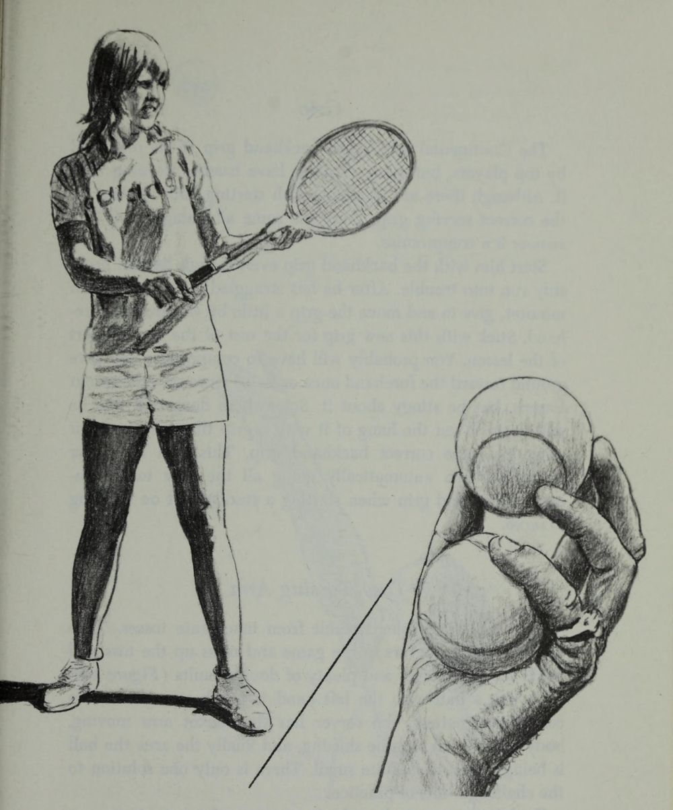
Hình 16. (Trái) Hoàn toàn thư giãn và đồng thời để có được sự tập trung tinh thần ở mức cao nhất cần phải thực hành rất nhiều.Hình 17. (Phải) Việc tung bóng có thể thực hiện hoặc phá vỡ một cú giao bóng và cách thực hiện bóng được giữ có thể thực hiện hoặc phá vỡ cú ném.
Cách Cầm Vợt
Cách cầm vợt trái tay kiểu lục địa hoặc kiểu phương Đông là kiểu được các tay vợt hàng đầu sử dụng, nhưng nhiều học viên gặp khó khăn khi học với nó. Mặc dù có những vấn đề khi bắt đầu học sinh của bạn với cách cầm giao bóng chính xác, nhưng cũng có một số lợi ích. Câu trả lời là một sự thỏa hiệp. Bắt đầu với anh ta bằng cách cầm vợt trái tay mặc dù anh ta có thể sẽ gặp rắc rối. Sau khi anh ta vật lộn được mười hoặc mười lăm phút, hãy nhượng bộ và di chuyển cán vợt một chút về phía thuận tay. Hãy sử dụng tay cầm mới này cho phần còn lại của bài học. Bạn có thể sẽ phải thỏa hiệp và nhường bước cho cú thuận tay một hoặc hai lần nữa trong các bài học tiếp theo, nhưng hãy tiết kiệm về điều đó. Ở đâu đó, anh ta sẽ bắt đầu thành thạo với cách cầm vợt không quá xa so với cách cầm vợt trái tay chính xác. Đây là quy trình tốt hơn nhiều so với việc tự động chuyển sang cách cầm thuận tay không chính xác khi bắt đầu học viên học cách giao bóng.
Tung Bóng và Tay Tung
Hầu hết các vấn đề về giao bóng là do tung bóng không chính xác. Lấy bất kỳ máy chủ tốt nhất nào trong trò chơi và làm rối tung cú tung bóng và bạn sẽ thấy những cú giao bóng kém và nhiều lỗi kép (Hình 18). Ném bóng bằng tay trái đã đủ khó, nhưng phức tạp hơn là người giao bóng có cánh tay vợt chuyển động, trọng lượng cơ thể sẽ sớm dịch chuyển, và cuối cùng khu vực bóng được ném tới khá nhỏ. Chỉ có một giải pháp duy nhất cho thử thách đó là luyện tập thật nhiều. Giải thích cho học sinh của bạn tầm quan trọng của việc tung bóng cực kỳ chính xác. Bóng phải được đánh cách đường biên ngang 12 inch về phía trước và 6 inch về phía bên phải. Lấy một ít phấn hoặc một cây gậy nếu đó là sân đất nện và phác thảo bàn chân trái của anh ấy. Tiếp theo hãy để anh ta ném
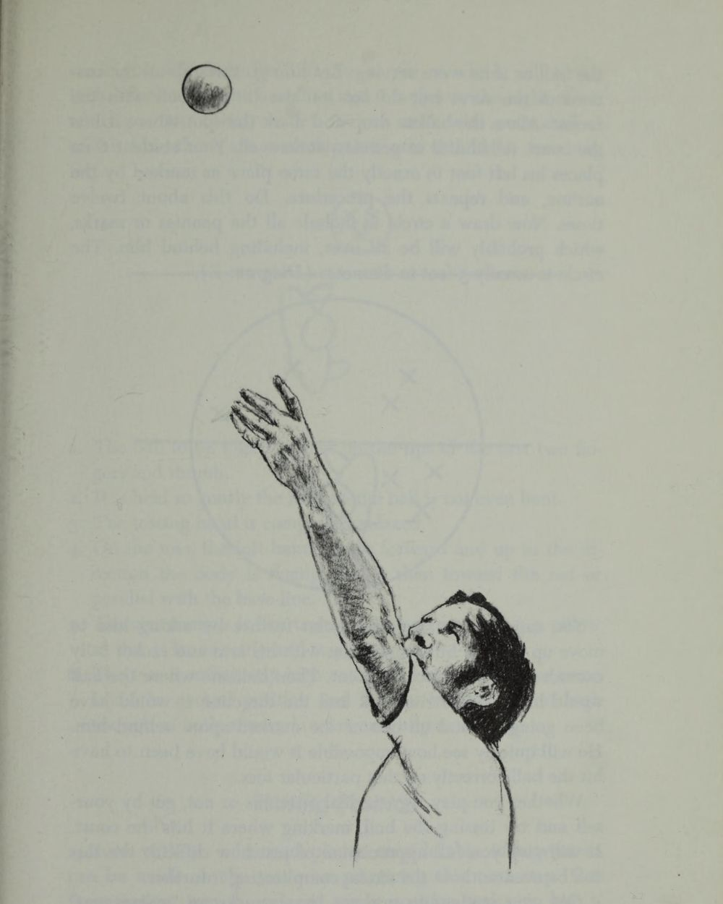
Hình 18. Việc tung bóng sẽ khiến quả bóng “chết”. Đây là sự hỗ trợ được làm mịn bằng cách sử dụng tất cả cánh tay và không búng cổ tay hoặc ngón tay.
Cánh tay tung sẽ ở vị trí "Tượng Nữ thần Tự do".
quả bóng như thể anh ta đang giao bóng. Hãy để anh ta thực hiện tất cả các chuyển động của quả giao bóng nhưng đừng để anh ta đánh bóng bằng vợt. Để bóng rơi và đánh dấu vị trí bóng chạm sân. Một số ít đồng xu có tác dụng tốt. Sau đó, học sinh của bạn đặt bàn chân trái của mình vào đúng vị trí được đánh dấu trong đường viền và lặp lại quy trình. Làm điều này khoảng mười hai lần. Bây giờ hãy vẽ một vòng tròn để bao gồm tất cả các đồng xu hoặc nhãn hiệu, những thứ này có thể sẽ ở khắp nơi, kể cả phía sau anh ta. Vòng tròn thường có đường kính 5 feet (Biểu đồ E). Bạn có thể chứng minh quan điểm của mình hơn nữa bằng cách yêu cầu anh ta di chuyển lên vị trí đánh với cánh tay và vợt mở rộng hoàn toàn đến điểm đánh chính xác. Sau đó, chỉ ra vị trí quả bóng sẽ ở đỉnh cao và hướng nó sẽ tiếp đất tại một trong những điểm được đánh dấu phía sau anh ta. Anh ta sẽ nhanh chóng nhận ra rằng việc đánh bóng chính xác trong lần ném đó là điều không thể. Cho dù bạn có chơi quần vợt nhiều hay không, hãy tự mình cố gắng ném quả bóng, đánh dấu vị trí nó chạm sân. Nó sẽ giúp bạn đánh giá đầy đủ mức độ khó của cú tung ngay cả khi cú đánh không làm phức tạp thêm. Yêu cầu học sinh của bạn thực hành ném. Với tư cách là một “bài tập”, bạn có thể đưa ra thử thách cho trẻ xem liệu trong bài học tiếp theo liệu trẻ có thể ném được ít nhất một nửa số lần ném vào đường kính 12 inch hay không.
bạn sẽ vẽ một vòng tròn cho anh ta, tâm của nó sẽ cách đường cơ sở 12 inch và 6 inch về bên phải vị trí sẵn sàng của anh ta (Biểu đồ F). Khi bạn làm việc với học sinh của mình về trò ném bóng của em, có một số điểm bạn nên chú ý.
Quả bóng cần ném được giữ ở đầu hai ngón tay cái và đầu ngón tay cái.
Nó được giữ nhẹ nhàng đến mức lông tơ trên quả bóng thậm chí không bị cong.
Tay tung bóng hoàn toàn thả lỏng.
Khi tung bóng, tay trái di chuyển về phía trước và hướng lên trên theo hướng cơ thể hướng về phía trước, thay vì hướng về lưới hoặc song song với đường biên.
Chuyển động của cánh tay giống như cố gắng ném một quả trứng lên gối để nó tiếp đất nhẹ nhàng và giữ nguyên ở đó.
Cú ném đủ cao để vợt và cánh tay có thể đến từ vị trí nghiêng và đánh bóng ở một điểm đủ cao để cả cánh tay và vợt đều được mở rộng hoàn toàn.
Vị Trí Vung Vợt
Ngay cả với một người chơi có trình độ cao cũng có thể thực hiện được sự cải thiện đáng kể về cú giao bóng bằng cách thực hành bước tiếp theo này. Đưa học trò của bạn vào tư thế sẵn sàng thoải mái và đưa cho anh ta một cây vợt đã cũ. Yêu cầu anh ta sử dụng cách cầm giao bóng thông thường và đặt đầu vợt xuống phía sau anh ta nhiều như thể anh ta
gãi ngứa ở vùng lưng nhỏ. Hãy để anh ấy thư giãn. Bạn sẽ có thể lấy vợt ngay từ tay anh ta! Vai của anh ta quay lại và khuỷu tay phải của anh ta phải hướng về phía hàng rào phía sau anh ta (Hình 19). Từ thời điểm này, yêu cầu anh ta ném vợt lên và ra ngoài bằng cách kích hoạt cổ tay của mình để vợt di chuyển từ đầu này sang đầu kia. Nếu người giữ sân hét lên vào thời điểm này, bạn có thể thực hiện điều tương tự bằng cách ném vợt ra sân rộng. Bài tập này đặc biệt hiệu quả với các bé gái vì hầu hết các bé trai đều ném đồ vật trong nhiều năm. Hành động quan trọng cần chú ý là cổ tay bắt đầu đưa đầu vợt lên và ra (Hình 20). Học sinh của bạn sẽ sớm hiểu rõ cảm giác như thế nào khi kích hoạt vợt đúng cách và hành động ném rất gần với cú giao bóng thực tế.
Lần Chạm Đầu Tiên
Bây giờ bạn đã sẵn sàng để kết hợp cú tung và cú đánh với nhau. Một trong những cách tốt nhất là sử dụng một cây vợt cũ khác đã được tháo dây. Điều này giúp loại bỏ sự băn khoăn tâm lý rất lớn của học sinh về việc “quả bóng sẽ đi đến đâu”. Mặc dù điều này có thể giống như một mánh lới quảng cáo, nhưng điều quan trọng là nó hoạt động và hoạt động tốt. Nó cũng hiệu quả đối với học viên ở trình độ cao hơn đang gặp vấn đề về giao bóng cũng như đối với người mới bắt đầu. Học sinh vào tư thế sẵn sàng với vợt không dây ở tư thế nghiêng. Kiểm tra lại xem đã thư giãn chưa. Yêu cầu trẻ ném quả bóng và “đánh” nó. Nếu thực hiện đúng cách, bóng sẽ đi thẳng qua giữa đầu vợt. Khi học sinh đi qua bằng cổ tay và cơ thể, quả bóng sẽ chạm vào khu vực bả vai phải của học sinh đó. Lặp lại điều này nhiều lần cho đến khi cú ném chính xác và cổ tay được kích hoạt tốt. Cánh tay và cơ thể phải duỗi thẳng trên một đường thẳng tại điểm đánh. Học sinh sẽ có cảm giác như mình đang kéo đuôi áo ra để đón bóng.
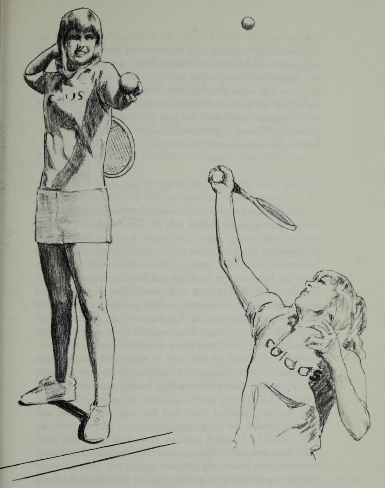
Hình 19. (Trái) Cho đến nay, cách tốt nhất để phát triển cú giao bóng hàng đầu là bắt đầu học nó ở tư thế gãi lưng.
Khi học sinh của bạn đã phối hợp các động tác giao bóng khá tốt bắt đầu từ tư thế cào sau, bước tiếp theo là giao vợt của chính anh ta. Đừng đưa ra bất kỳ nhận xét nào rằng anh ta sẽ đánh bằng vợt có dây, chỉ cần đổi vợt và để anh ta giao bóng. Khả năng cao là anh ấy sẽ đánh được một số cú giao bóng tốt ngay từ đầu. Nếu anh ta mất thời gian, hãy quay lại vợt không dây một thời gian ngắn cho đến khi anh ta cảm nhận được nó trở lại. Bạn có thể sẽ phải thực hiện động tác đổi vợt này nhiều lần, nhưng quy trình này rất hiệu quả.
Tay Vợt và Vung Đầy Đà
Mặc dù không cần phải vội vàng nhưng bạn sẽ muốn học sinh của mình sử dụng hết công suất. Trước khi bạn làm điều này, anh ta phải chuẩn bị tốt và đánh các cú giao bóng liên tục từ vị trí cào sau. Cú ném của anh ấy phải chính xác, anh ấy phải có lực khá lớn và quan trọng nhất là anh ấy phải có thể đặt bóng vào khu vực thuận tay và trái tay của cả hai sân giao bóng. Sẽ mất bao lâu trước khi anh ấy đạt được điểm này tùy thuộc vào khả năng thể thao của anh ấy và mức độ luyện tập chăm chỉ khi giao bóng của anh ấy. Nếu anh ấy đã làm việc chăm chỉ, bạn có thể thấy anh ấy sẵn sàng trong vòng ba đến bốn tuần. Nếu anh ấy chưa tập luyện và thi đấu nhiều như vậy thì có thể phải mất vài tháng. Khi anh ta đã sẵn sàng, cách tốt nhất để thực hiện bước đánh hoàn chỉnh là sử dụng lại vợt không dây. Đầu tiên, hãy cho anh ta thực hành động tác vung vợt sau đầy đủ, cũng như tung tay nhưng không có bóng. Đặc biệt chú ý đưa vợt từ vị trí sẵn sàng xuống qua thắt lưng, song song và hướng về phía điểm dừng sau, vòng tròn và hướng lên trên ở vị trí nghiêng hoàn toàn. Yêu cầu anh ta lặp lại điều này cho đến khi nó trở thành một chuyển động liên tục mượt mà. Không để mặt vợt đóng lại khi vung vợt về phía sau (Hình 21, 22). Bây giờ bạn đã sẵn sàng để thực hiện cú đánh cùng với quả bóng, cú ném thực tế và vợt không dây. Ban đầu anh ta sẽ gặp khó khăn trong việc xác định thời điểm vợt và bóng.
trùng khớp ở đúng điểm đánh. Nhưng cây vợt không dây sẽ giúp anh vượt qua chướng ngại vật này một cách nhanh chóng. Khi bạn hài lòng rằng anh ta đang thực hiện tất cả các động tác giao bóng một cách chính xác, đã đến lúc đưa cho anh ta cây vợt của chính mình và thực sự đánh một số cú giao bóng. Hãy theo dõi cẩn thận những điều sau:
Tay cầm vợt bắt đầu hạ xuống đồng thời với tay tung bóng. Chuyển động của cánh tay và vợt giống như một con lắc và liên tục. Mặt vợt nên được mở ra một chút trong quá trình vung vợt về phía sau.
Cánh tay, cổ tay và bàn tay vẫn thư giãn. Cổ tay vẫn không bị khóa.
Cánh tay và vợt duỗi ra đến vị trí hướng về phía tấm chắn phía sau và lúc đó song song với bề mặt thi đấu. Lúc này, cánh tay tung bóng phải gần như duỗi thẳng hoàn toàn và bóng bắt đầu rời khỏi đầu ngón tay.
Khuỷu tay uốn cong, cổ tay co lại và đầu vợt hạ xuống vị trí gãi lưng. Cánh tay, cổ tay và bàn tay vẫn tương đối thoải mái. Mỗi lần thực hiện đúng bốn bước này, anh ta sẽ thấy mình ở tư thế gãi lưng quen thuộc. Nếu trước đây anh ta đã thành thạo cú giao bóng của mình từ vị trí này, anh ta sẽ thấy việc chuyển đổi rất dễ dàng. Không nên tạm dừng cú vung vợt của anh ta khi đi từ vị trí sẵn sàng, qua động tác vung gậy về phía sau đến vị trí gãi ngược và vào cú đánh. Với rất ít luyện tập, học sinh của bạn sẽ đánh những cú giao bóng tốt với cảm giác về thời gian tốt hơn và với lực mạnh hơn đáng kể.
Thân Mình và Xoay Người
Ban đầu, học sinh của bạn sẽ phải suy nghĩ rất nhiều về việc giữa tay ném và tay cầm vợt. Nhưng một khi bạn đã chuyển anh ta sang một cú backswing hoàn toàn và anh ta đã bắt nhịp khá tốt với động tác đó, bạn sẽ muốn bắt đầu tinh chỉnh các chuyển động cơ thể của anh ta. Thân/cuộn dây tăng thêm sự tinh tế và sức mạnh tạo nên đỉnh cao
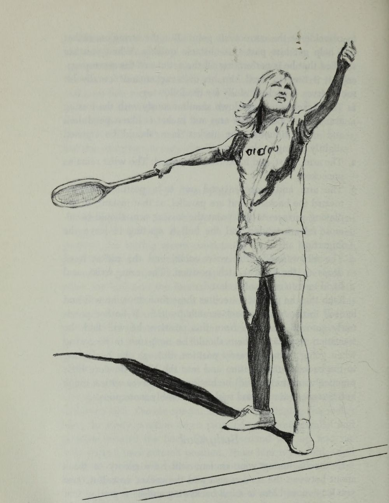
Hình 21. Đóng mặt vợt trong cú đánh sau về phía cổ tay hướng xuống dưới, khiến cổ tay và cánh tay không thể chạm vào khi
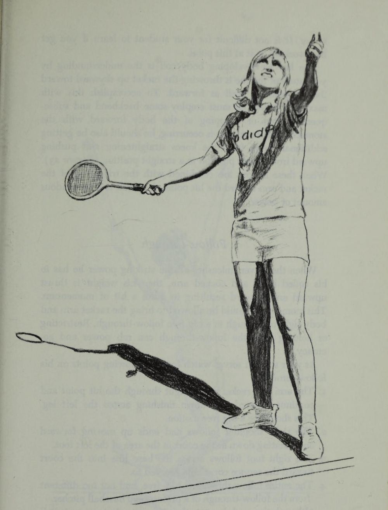
Hình 22. Mặt vợt ít nhất phải vuông góc với máy chủ.
Sẽ không khó để học sinh của bạn học nếu bạn cho học sinh làm việc tiếp vào thời điểm này.
học sinh của bạn đang ném vợt lên trời về phía điểm đánh cũng như về phía trước. Để thực hiện điều này với sức mạnh tối đa, anh ta phải thực hiện một số động tác gập người về phía sau và sau đó kéo hoặc bật cơ thể về phía trước bằng cơ bụng. Khi điều này xảy ra, anh ta cũng phải nhận thêm lực đẩy từ đầu gối duỗi thẳng và đẩy lên từ tư thế cong sang tư thế thẳng (Hình 23). Khi những hành động này được kết hợp với việc kích hoạt vợt và cánh tay về phía điểm đánh, kết quả là một sức mạnh cực lớn.
Theo Đà
Khi người giao bóng giải phóng toàn bộ sức mạnh tấn công mà anh ta có trong cơ thể cuộn tròn và cánh tay cong lên, thì trọng lượng của anh ta sẽ bị đẩy lên trên và về phía trước tạo ra khá nhiều động lượng. Động lượng này phải được phép đưa cánh tay và thân vợt đi thẳng trong một pha theo dõi tự do lớn. Việc hạn chế hoặc kìm hãm việc theo dõi có thể cướp đi sức mạnh và vì học sinh của bạn phục vụ hãy theo dõi những điểm sau trong quá trình theo dõi của mình:
Lực của cánh tay và vợt xuyên qua điểm đánh và tiếp tục kết thúc về phía trước và xuống qua chân trái. Đây phải là một chuyển động tự do lớn.
Vai phải theo sau và cuối cùng di chuyển về phía trước và hướng xuống sân ở khu vực bàn chân trái.
Chân phải đi dọc theo đường biên cuối sân vào sân hướng tới sân giao bóng.
Toàn bộ lượt theo dõi rất lớn, miễn phí và không quá khác biệt so với lượt theo dõi của một vận động viên ném bóng chày chuyên nghiệp. Mặc dù con ngựa lao động là cú giao bóng xoáy, nhưng trong quần vợt đỉnh cao nó là
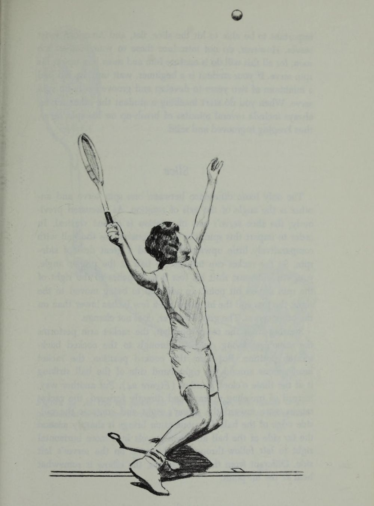
Hình 23. Khi cơ thể/cuộn dây hình thành và ngay trước cú đánh, cả hai đầu gối điều quan trọng là có thể đánh được những cú giao bóng cắt, phẳng và xoắn kiểu Mỹ.
Tuy nhiên, đừng giới thiệu những điều này với "học trò" của bạn quá sớm, vì tất cả những điều này sẽ khiến anh ta bối rối và làm anh ta bối rối trong cú giao bóng xoáy của anh ta. Nếu học trò của bạn là người mới bắt đầu, hãy đợi cho đến khi anh ta có tối thiểu hai năm để phát triển và rèn giũa cú giao bóng xoáy cơ bản của mình. Khi bạn bắt đầu dạy một học trò, những người giao bóng khác, hãy luôn dành vài phút ôn tập về cú giao bóng xoáy của anh ta, nhờ đó giữ cho nó có đường rãnh và chắc chắn.
Cú Giao Bóng Cắt (Slice)
Sự khác biệt cơ bản duy nhất giữa một cú giao bóng xoáy này và một cú giao bóng xoáy khác là góc của trục quay. Như đã thảo luận trước đó, trục quay của cú giao bóng gần như thẳng đứng. Để truyền được độ xoáy này, vợt phải đánh bóng với lực đẩy hướng lên tương đối ít và độ xoáy ngang lớn. Để vợt có thể tác động vào bóng ở góc thích hợp, học sinh của bạn phải dịch chuyển cú ném của mình 6 đến 8 inch về bên phải điểm đánh của cú giao bóng xoáy. Ngoài việc được di chuyển sang bên phải, cú tung và điểm đánh thấp hơn vài inch so với các cú giao bóng khác. Tuy nhiên, độ bám không thay đổi. Bắt đầu từ vị trí sẵn sàng, cánh tay vợt thực hiện động tác vung vợt ngược tương tự cho đến vị trí gãi ngược. Nhưng từ vị trí nghiêng này, đầu vợt vòng quanh phía bên phải của quả bóng đánh vào vị trí 3 giờ (Hình 24). Nói cách khác, thay vì di chuyển lên trên và thẳng về phía trước, vợt di chuyển nhiều hơn về phía bên phải của người giao bóng và tiếp xúc với mép ngoài của quả bóng. Động lượng của nó đưa nó đi mạnh xung quanh phía xa của quả bóng và sau đó di chuyển theo chiều ngang hơn từ phải sang trái và kết thúc ở phía bên trái của người giao bóng. Khác với những cú giao bóng khác, khuỷu tay hơi cong ở điểm đánh.
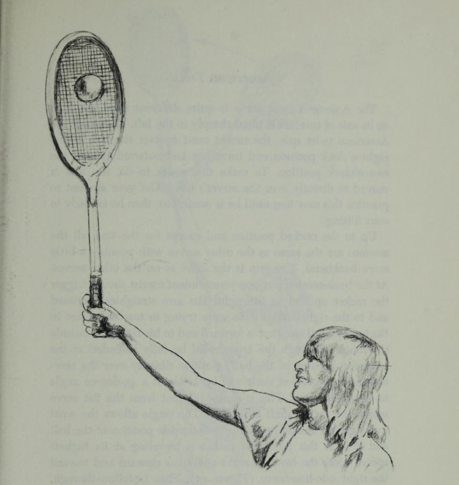
Hình 24. Tại điểm đánh của cú giao bóng cắt, vợt được đánh theo hướng vuông góc với sân trong khi cánh tay gần nằm ngang hơn nhiều.
Xoáy Kiểu Mỹ
Cú giao bóng xoắn của Mỹ khá khác biệt so với cú cắt bóng vì trục xoay của nó nghiêng hẳn về bên trái. Để truyền đạt độ xoáy xoắn kiểu Mỹ, vợt phải tiếp xúc với bóng ở vị trí 8 giờ và di chuyển lên và ra ngoài về vị trí 2 giờ. Để thực hiện điều này dễ dàng hơn, cú ném được chuyển trực tiếp qua đầu của người giao bóng. Yêu cầu học sinh của bạn thực hành cú ném mới này cho đến khi ổn định, sau đó học sinh sẵn sàng bắt đầu đánh. Cho đến vị trí nghiêng và ngoại trừ động tác tung bóng, tất cả các chuyển động đều giống như các cú giao bóng khác với khả năng uốn cong lưng nhiều hơn một chút. Cách cầm cũng giống như các quả giao bóng khác. Ở vị trí cào sau, cổ tay học sinh của bạn phải kích hoạt vợt hướng lên trên và sang phải. Cánh tay của anh ấy duỗi thẳng lên trên và sang phải giống như thể anh ấy đang cố ném vợt của mình lên ngọn cây cao phía trước và bên phải ngay bên ngoài hàng rào. Mặc dù cánh tay phải được mở rộng hoàn toàn tại điểm đánh, do vị trí của quả bóng ngay trên đầu người giao bóng, trục vợt sẽ ở một góc khoảng 45 độ so với cánh tay vợt. Điều này khá khác biệt so với cú giao bóng phẳng trong đó trục vợt thẳng đứng. Góc này cho phép cổ tay kích hoạt vợt lên từ vị trí mặt dưới của quả bóng và đó là thời điểm vợt đang di chuyển với tốc độ cao nhất. Sau khi đánh, vợt tiếp tục đi lên và hướng tới hàng rào bên phải (Hình 25). Sau đó, trong quá trình theo dõi, nó bắt đầu đi xuống và kết thúc ở phía bên phải của máy chủ. Đây là cú giao bóng duy nhất mà vợt không vượt qua phía trước thân người giao bóng trong quá trình thực hiện. Hầu hết sức mạnh của vợt đều hướng vào việc xoáy bóng và rất ít trong số đó chuyển sang tốc độ chuyển tiếp. Điều này không có nghĩa là bạn phải bỏ ra ít năng lượng hoặc nỗ lực hơn, vì cú giao bóng xoắn phải được đánh bằng mọi thứ mà người giao bóng có.
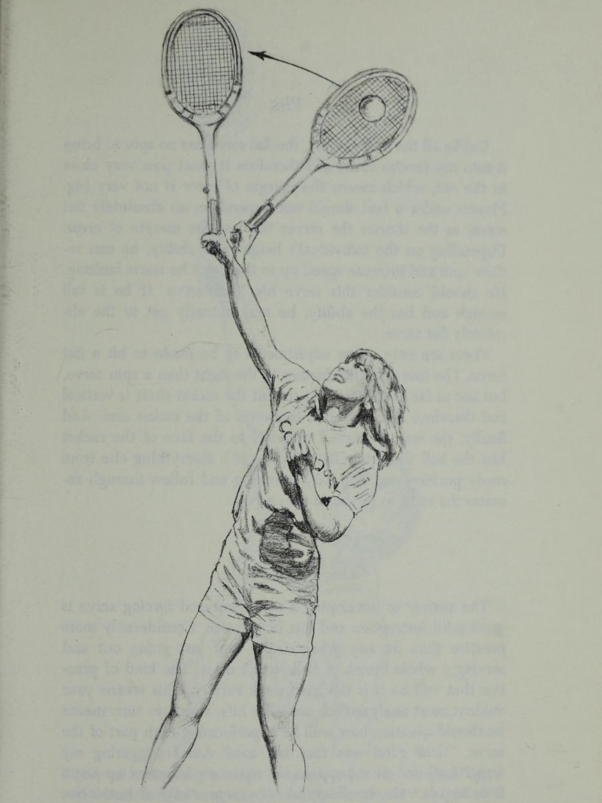
Hình 25. Một phần giây trước khi cổ tay kích hoạt, vợt ở vị trí
Cú Giao Bóng Phẳng (Flat)
Không giống như tất cả các cú giao bóng khác, cú giao bóng phẳng không có độ xoáy để đưa vào sân giao bóng và do đó nó phải chuyền rất gần lưới, nghĩa là biên độ sai số không lớn lắm. Người chơi cao dưới 6 feet không nên phụ thuộc vào một cú giao bóng hoàn toàn bằng phẳng, vì người giao bóng càng ngắn thì tỷ lệ mắc lỗi càng ít. Tùy thuộc vào chiều cao và khả năng của từng cá nhân, anh ta có thể giảm độ xoáy và tăng tốc độ đến mức bắt đầu mắc lỗi. Anh ta nên xem xét cú giao bóng “phẳng” này của mình. Nếu anh ta đủ cao và có khả năng, anh ta thực sự có thể thực hiện được cú giao bóng hoàn toàn bằng phẳng. Chỉ có một số điều chỉnh được thực hiện để đánh một cú giao bóng phẳng. Cú tung xa hơn một chút về bên phải so với cú giao bóng xoáy, nhưng không xa bằng cú cắt. Khi đánh, trục vợt thẳng đứng và do đó cánh tay vợt là một đường thẳng kéo dài. Và cuối cùng, cổ tay hướng ra ngoài để mặt vợt chạm bóng phẳng tuyệt đối (Hình 26). Mọi thứ khác từ tư thế sẵn sàng và cách cầm vợt, cho đến vung vợt sau và thực hiện tiếp theo vẫn giống như cú giao bóng xoáy cơ bản.
Tổng Kết
Câu trả lời cho việc phát triển một cú giao bóng nhất quán và bắt buộc là sự hướng dẫn tốt và thực hành nhiều. Thực hành nhiều hơn đáng kể so với bất kỳ cú đánh nào khác. Nhưng chỉ ra ngoài và giao cả đống bóng thì không được. Loại thực hành sẽ làm được điều đó là sự chăm chỉ. Điều này có nghĩa là học sinh của bạn phải phân tích từng cú giao bóng mà anh ta đánh, điều này có nghĩa là anh ta nên đặt câu hỏi về việc mình thực hiện từng phần của cú giao bóng tốt như thế nào. "Cú ném cuối cùng tốt như thế nào? Tôi có đang kích hoạt cổ tay của mình không? Hãy xem điều gì sẽ xảy ra nếu tôi di chuyển điểm đánh của mình lên cao hơn một chút." Trên thực tế, anh ấy sẽ đảm nhận vai trò là người hướng dẫn của bạn,
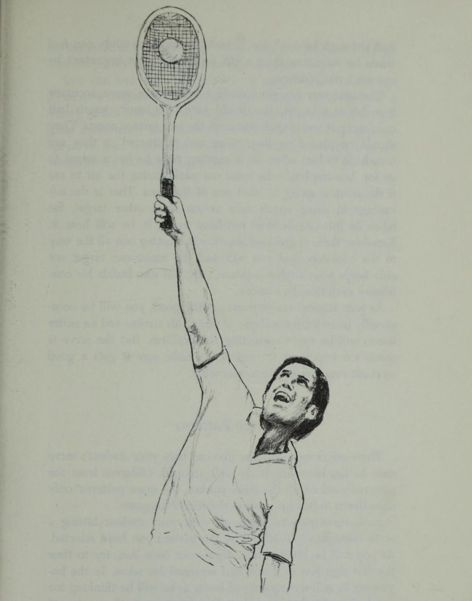
Hình 26. Kéo giãn càng cao càng tốt để đạt được điểm nhấn inch có giá trị giúp tăng giới hạn an toàn trên lưới và giải phóng năng lượng.
và mặc dù anh ta không thể nhìn thấy chính mình, nhưng anh ta chắc chắn có thể cảm nhận được khi nào mình làm điều gì đó đúng hay sai. Điều quan trọng nhất là anh ấy có thể làm việc một cách chính xác. Cách tốt nhất để học trò của bạn cải thiện độ chính xác của cú giao bóng là đánh trúng mục tiêu. Anh ta nên lấy bốn hộp bóng tennis rỗng và đặt một hộp ở mỗi góc của hai sân giao bóng. Chúng nên được đặt ở hai bên và ở vị trí sao cho chúng nằm ngang với anh ta khi anh ta giao bóng. Bây giờ anh ấy đã có mục tiêu để nhắm tới, nhưng nhấn mạnh rằng anh ấy không được nhìn trộm trong khi đánh để xem liệu quả giao bóng có làm nổ một trong các lon hay không. Đó là lợi thế của việc sử dụng lon tennis so với một số mục tiêu khác, vì khi anh ta đánh trúng một mục tiêu, anh ta không cần phải nhìn thấy nó mà vẫn nghe thấy nó. Bằng cách nào đó, bạn sẽ cảm thấy vô cùng hài lòng khi ném một quả bóng đến tận điểm dừng, và bạn sẽ thấy mục tiêu của chiếc lon tennis không chỉ thu hút sự quan tâm của học sinh mà còn xây dựng sự tự tin của anh ấy mỗi khi anh ấy đánh một quả. Khi học sinh của bạn thực sự bắt đầu tiến bộ, đôi khi bạn sẽ phải đối mặt với tình trạng một trong các nét vẽ của học sinh đó bị hỏng và bạn sẽ phải dành cả buổi học để khắc phục vấn đề. Nhưng cú giao bóng rất quan trọng để có thể bỏ qua, vì vậy hãy đảm bảo rằng nó được tập luyện tốt trong mỗi buổi học, bất kể điều gì.
Các Mẫu Hình Giao Bóng
Có một số kiểu giao bóng có thể giúp học viên của bạn giao bóng một khi anh ta đã có cú swing khá tốt. Khác với các mẫu được sử dụng trong tất cả các cú đánh khác, mục tiêu duy nhất của các mẫu giao bóng là liên kết cú giao bóng của anh ta với phần còn lại của trận đấu. Mỗi kiểu giao bóng bắt đầu bằng việc học sinh của bạn đánh một cú giao bóng ngay sau đó là kiểu bạn đã chọn. Vì bạn sẽ đánh những quả này từ vạch cuối sân của mình, hãy cố gắng tính thời gian cho cú đánh đầu tiên giống như thể bạn đã trả giao bóng cho anh ta. Lúc đầu, anh ta sẽ giao bóng rất nhiều lỗi vì anh ta sẽ suy nghĩ quá nhiều về cú đánh chạm đất đầu tiên của mình trong khi đang trong quá trình thực hiện cú giao bóng. Nhấn mạnh tầm quan trọng của việc tập trung
khi giao bóng và sau khi anh ta hoàn thành cú giao bóng, anh ta có nhiều thời gian để suy nghĩ về cú đánh tiếp theo. Bạn có thể sử dụng bất kỳ sự kết hợp nào của các cú đánh theo mẫu, mặc dù nếu anh ta là người mới bắt đầu thì không sử dụng bất kỳ kiểu nào bao gồm cú vô lê làm cú đánh đầu tiên theo mẫu. Một khi anh ta đã phát triển được sự ổn định tốt và sẵn sàng bắt đầu vào lưới sau cú giao bóng của mình, thì đã đến lúc giới thiệu các mẫu liên quan đến cú vô lê ngay sau cú giao bóng của anh ta.
Chương 4
Cú Đánh Trên Đầu
Một cú đánh tốt trên đầu là một hình ảnh của sự duyên dáng, tốc độ nhanh chóng và sự dứt khoát. Đối với người mới bắt đầu, chi phí chung có vẻ khá dễ dàng, nhưng nó là một trong những vấn đề khó khăn và có lý do chính đáng. Trong chương giao bóng, người ta nhấn mạnh nhiều vào cú tung bóng, vì nó quyết định điểm đánh sẽ ở đâu. Nếu điểm đánh sai, cú giao bóng sẽ không hiệu quả nhất. Điều này cũng đúng với chi phí chung. Điểm nhấn là rất quan trọng. Sự khác biệt rõ ràng ở phần trên là người chơi phải di chuyển cơ thể của mình vào vị trí chính xác so với đường bay của bóng. Nếu anh ta không đạt được vị trí chính xác, điểm đánh của anh ta sẽ sai và hậu quả sẽ giống như một cú tung bóng không tốt. Thực hành nhiều sẽ mang lại hiệu quả vì học sinh của bạn cuối cùng sẽ học cách đánh giá góc quỹ đạo, tốc độ, độ xoáy và thậm chí cả gió nếu đó là một yếu tố.
Cách Đánh Cú Overhead
Vì cú đánh trên cao giống hệt với cú giao bóng phẳng từ vị trí cào sau, bạn không nên bắt đầu học sinh của mình với cú đánh trên cao cho đến khi anh ta thực hiện cú giao bóng của mình một cách hợp lý. Điều này không có nghĩa là anh ta phải thực hiện cú giao bóng của mình mỗi khi đánh nó. Những gì bạn đang tìm kiếm là sự ổn định tốt trong cú đánh của anh ấy. Nếu bạn cố gắng dạy tổng quát trước khi trẻ đạt được điều này, thì sự tiến bộ của trẻ sẽ rất chậm. Đến thời điểm này sự chú ý của học sinh đã được hướng
hoàn toàn vào cú giao bóng xoáy cơ bản. Để điều chỉnh phần trên dễ dàng hơn một chút, hãy yêu cầu anh ta đánh một vài cú giao bóng tương đối bằng phẳng. Tất cả những gì anh ta phải làm là xoay cổ tay ra ngoài sao cho mặt vợt tiếp xúc với bóng phẳng hơn, đồng thời di chuyển điểm ném và điểm đánh vài inch sang bên phải để khi va chạm, cánh tay và vợt nằm trên một đường thẳng và mở rộng hoàn toàn. Đừng dành quá nhiều thời gian cho việc này vì dù sao thì một cú lốp bóng sâu cũng sẽ được thực hiện bằng một số vòng xoáy. Hãy chắc chắn rằng anh ấy giữ đúng kiểu cầm giao bóng Continental cho phần trên của mình. Yêu cầu học sinh của bạn đứng ở vị trí sẵn sàng cách lưới từ 6 đến 1 feet giống như thể bạn định đánh bóng chuyền vào học sinh đó. Thay vào đó, bạn sẽ thực hiện những cú lốp bóng rất dễ dàng phù hợp với anh ta nhất có thể. Khi bạn thực hiện cú lốp bóng, anh ta phải ngay lập tức xoay vai và thả vợt vào vị trí cào sau mà không có bất kỳ động tác nào. Cánh tay trái của anh ta nên duỗi thẳng và nên tập cho anh ta thói quen chỉ tay vào quả bóng (Hình 27). Điều này không chỉ giúp anh ta nhận thức chiều sâu tốt hơn mà còn tự động xoay vai về đúng vị trí. Chân phải của anh ta phải uốn cong để anh ta có thể đẩy ra và di chuyển trọng lượng của mình về phía trước trong cú đánh (Hình 28), Từ thời điểm này trở đi, mọi thứ khác giống hệt như cú giao bóng phẳng ngoại trừ vấn đề về thời gian. Do tốc độ của quả bóng đi xuống, anh ta sẽ gặp khó khăn trong việc kết nối, và do đó, quy trình tốt nhất là bắt đầu anh ta bằng một cú xoay kiểu cú đấm rất ngắn gọn. Khi học sinh của bạn bắt đầu vung vợt từ tư thế gãi lưng, cánh tay của anh ta duỗi thẳng và duỗi ra hoàn toàn, nhưng thay vì đưa cổ tay về phía trước, hãy yêu cầu anh ta chặn bóng một cách chắc chắn. Lượt theo dõi của anh ấy phải kết thúc cao hơn vai thay vì kết thúc ở ống chân trái. Duy trì kiểu đấm trên cao này cho đến khi anh ta liên tục đạt được vị trí đánh tốt, căn thời gian đánh bóng tốt và đặt chúng với độ chính xác đáng kể. Khi anh ta đã đạt đến điểm này, bạn có thể yêu cầu anh ta búng cổ tay và kéo dài thời gian theo dõi thêm một chút, nhưng hãy làm điều này theo từng giai đoạn để anh ta không bị mất điểm.
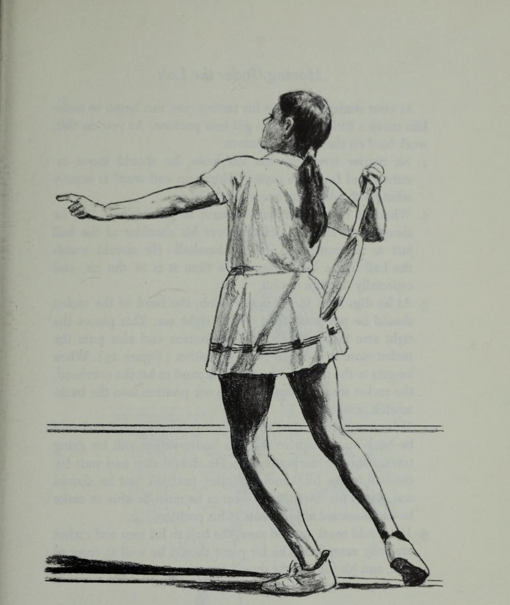
Hình 28. Khi quả bóng đến gần điểm đánh, trọng lượng cơ thể sẽ chuyển về phía trước và hướng lên trên khi chân duỗi thẳng và cổ tay kích hoạt vợt.
Vai vẫn nằm ngang với lưới cho đến khi vợt và cánh tay đưa chúng đi vòng lại.
Di Chuyển Dưới Bóng Lob
Khi học sinh của bạn phát triển khả năng tính toán thời gian, bạn có thể bắt đầu khiến học sinh di chuyển một chút để vào vị trí. Khi bạn làm điều này, hãy chăm chỉ thực hiện các điểm sau: Cho dù cú lốp bóng trông có vẻ lười biếng đến đâu, anh ta cũng phải di chuyển ngay lập tức và nhanh chóng. Câu nói “Nhanh lên và chờ đợi” chính xác là điều anh ấy nên làm trên mọi chi phí.. Khi anh ta phải di chuyển bất kỳ khoảng cách nào để có được một cú lốp bóng, anh ta nên quay người và chạy, nhìn qua vai về phía quả bóng giống như một tiền vệ làm trong môn bóng chày. Anh ta nên quan sát quả bóng như một con diều hâu trong suốt thời gian nó ở trên không, và đặc biệt là qua cú đánh.. Khi anh ta cố gắng lao xuống dưới một cú lốp bóng, đầu vợt phải ở ngay bên tai phải của anh ta. Điều này đặt cánh tay phải vào tư thế chạy tự nhiên và cũng đặt vợt gần với vị trí nghiêng hoàn toàn (Hình 29). Khi đến điểm anh ta phải quay người lại để đánh từ trên cao, vợt chỉ cần thả từ vị trí tai sang vị trí gãi lưng. Nếu anh ta có đủ thời gian để vào vị trí tốt thì anh ta phải lùi lại đủ xa để trọng lượng cơ thể của anh ta dồn về phía lưới trong khi đánh. Anh ta nên dừng lại và chờ bóng ở vị trí đánh hoàn toàn nghiêng, nhưng anh ta không nên chuẩn bị đánh quá sớm vì anh ta phải có khả năng thực hiện những điều chỉnh cuối cùng ở vị trí của mình. Anh ta nên đưa tay lên và đón bóng sao cho cánh tay và vợt của anh ta được duỗi thẳng hoàn toàn. Điểm đánh phải ở ngay trước mặt anh ta và toàn bộ trọng lượng của anh ta phải dồn vào cú đánh.
Hình 29. (Ngược lại) Để vào vị trí đánh dưới một cú lốp bóng sâu, người chơi phải xoay người và chạy, nhưng đồng thời phải giữ vợt và vai của mình ở vị trí sẵn sàng để đánh.
Tổng Kết
Chỉ có hai tình huống khi một cú lốp bóng phải được bật lên và sau đó được đánh. Đầu tiên và hiển nhiên là khi nó nằm ngoài tầm với. Thứ hai, khi một người chơi hoàn toàn chắc chắn rằng bằng cách thực hiện cú lốp bóng, anh ta có thể đạt được vị trí đánh hoàn hảo, vẫn đánh nó như một cú đánh trên cao và đánh nó để giành chiến thắng. Nếu không, cú lốp bóng phải luôn được thực hiện dưới dạng cú đánh qua đầu hoặc cú vô lê trước khi nó nảy lên (Hình 30). Vị trí đánh của người chơi xác định mức độ lực mà anh ta nên dồn vào cú đánh trên đầu. Nếu ở mức cận biên, anh ta nên chọn đánh từ trên cao với tốc độ vừa phải và đặt sâu vào phần sân của đối thủ. Mặc dù anh ta từ bỏ cơ hội chiến thắng, nhưng anh ta loại bỏ khả năng mạnh mẽ đánh đầu ra ngoài hoặc vào lưới. Tùy thuộc vào vị trí sân của đối thủ, anh ta cũng có thể chọn đánh một cú đánh qua đầu mềm mại nhưng có góc cạnh. Trong cả hai trường hợp, yếu tố then chốt là vị trí chứ không phải tốc độ. Không nghi ngờ gì nữa, tốc độ sẽ góp phần rất lớn vào hiệu quả của cú đánh đầu, nhưng nó không thể được đưa vào thành công trừ khi người chơi có vị trí đánh tốt trên lốp bóng và đã phát triển độ chính xác nhất quán với cú đánh đầu của mình. Đừng để học sinh của bạn có thói quen cố gắng nổ tung mọi cú đánh từ trên cao. Điều này đặc biệt đúng đối với những cú lốp bóng khiến anh ta phải lùi về vạch giao bóng. Khi điều này xảy ra, anh ta nên đánh bóng qua đầu với một chút xoáy, với tốc độ vừa phải và đưa bóng sâu vào phần sân đối phương. Đôi khi, một cú lốp bóng nên được thực hiện như một cú vô lê thay vì một cú đánh trên đầu. Khi học sinh của bạn bắt đầu có kinh nghiệm, bạn nên bắt đầu giới thiệu những tình huống chuyền bóng này cho học sinh.
Nếu một cầu thủ bị bất ngờ bởi một cú lốp bóng nhanh qua vai trái và anh ta không thể vào vị trí để đánh nó như một cú đánh qua đầu, thì thay vì từ bỏ vị trí lưới của mình, anh ta nên coi đó là một cú vô lê trái tay cao. Anh ta không nên cố gắng đánh cú này mạnh mà hãy trả nó sâu, hoặc mềm và có góc cạnh.
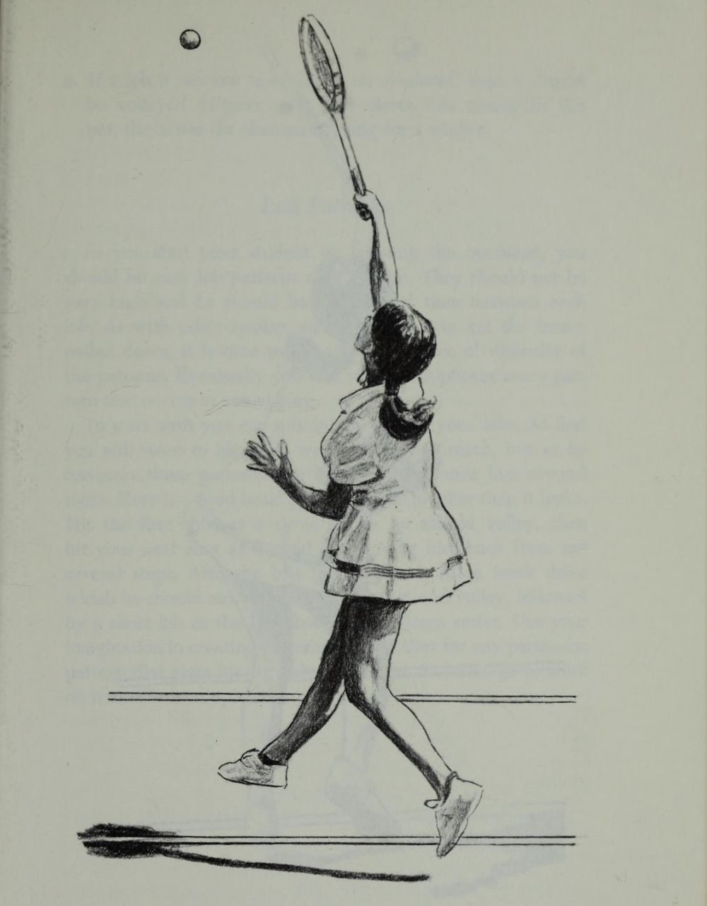
Hình 30. Khi một cú lốp bóng quá sâu không thể tiếp cận bằng bất kỳ cách nào khác, người chơi phải nhảy vọt và tính thời gian để đạt được sự hoàn hảo.
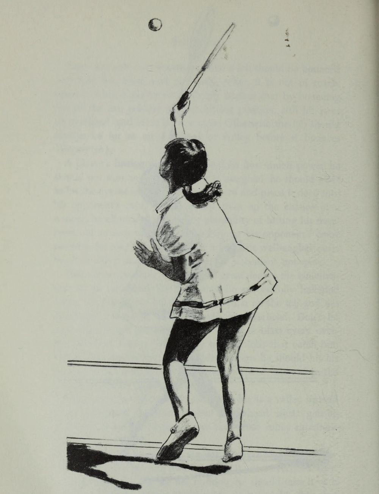
Hình 31. Nếu điểm đánh quá thấp, hoạt động của cánh tay và cơ thể sẽ trở nên chật chội và thiếu phối hợp, dẫn đến mất quyền lực và khả năng điều chỉnh.
Nếu một cú lốp bóng quá thấp để có thể thực hiện được bằng cú đánh trên cao thì nên thực hiện cú vô lê (Hình 31). Điều này xảy ra càng gần lưới thì cơ hội giành chiến thắng càng cao.
Các Mẫu Hình Lob
Khi bạn bắt đầu học sinh của mình học cách đánh bóng từ trên cao, bạn nên đánh các kiểu lốp bóng dễ dàng ngay cho học sinh đó. Chúng không nên quá cao và anh ta phải có nhiều thời gian giữa mỗi lần lốp bóng. Cũng như các nét vẽ khác, khi anh ta bắt đầu nắm vững những kiến thức cơ bản, đó là lúc để tăng độ khó của các mẫu. Cuối cùng, bạn sẽ muốn sao chép mọi khuôn mẫu xuất hiện trong trò chơi thực tế. Để bắt đầu, bạn có thể kết hợp các động tác lái với thùy bóng của mình. Lúc đầu, bạn sẽ muốn đánh tốt những điểm này trong tầm tay dễ dàng, nhưng khi anh ấy chinh phục được các kiểu này, bạn có thể bắt đầu di chuyển anh ấy xung quanh nhiều hơn. Đây là một mẫu cơ bản tốt nhưng cứng hơn vẻ ngoài của nó. Hãy thực hiện cú đánh đầu tiên như một cú đánh lái mà anh ta nên thực hiện, sau đó thực hiện cú đánh tiếp theo của bạn như một cú lốp bóng tốt đưa anh ta lùi lại khỏi lưới vài bước. Sau khi anh ta đánh đầu, đánh một cú đánh yếu mà anh ta sẽ di chuyển trở lại lưới và thực hiện cú vô lê, tiếp theo là một cú lốp bóng ngắn là cú đánh cuối cùng của chuỗi mô hình. Hãy sử dụng trí tưởng tượng của bạn để tạo ra các khuôn mẫu và cảnh giác với bất kỳ khuôn mẫu cụ thể nào có thể gây rắc rối cho trẻ. Khi bạn tìm thấy một cái, hãy tiếp tục làm việc đó cho đến khi chinh phục được nó.
Phần III — Cú Đánh Nền và Biến Thể
Forehand, backhand, cú lob, cú drop shot, cú half-volley — tất cả các biến thể và mẫu hình của cú đánh nền.
Chương 5
Cú Đánh Nền
Tất cả các “cú đánh chạm đất” từ trả giao bóng đến lốp bóng đều dựa trên các cú đánh thuận tay và trái tay. Do đó, nếu một cầu thủ có cú thuận tay thất thường, rất có thể anh ta cũng sẽ có một cú lốp bóng thuận tay hoặc trả giao bóng thất thường hoặc cả hai. Tầm quan trọng của các cú đánh tiếp đất vững chắc càng được nhấn mạnh bởi thực tế là trận đấu trên mặt đất của người chơi sẽ chỉ ghê gớm như cú đánh yếu nhất của nó. Cùng với một cú trái tay yếu, một cú thuận tay mạnh có thể được giải quyết hoàn toàn bởi một người chơi có kinh nghiệm.
Chuẩn Bị
Để phát triển một trò chơi trên mặt đất mạnh mẽ, người chơi phải làm ba việc trước khi đánh bóng và anh ta phải thực hiện chúng mà không cần phải suy nghĩ về điều đó. Đầu tiên, anh ta phải sẵn sàng về thể chất và tinh thần để di chuyển trong tích tắc anh ta thấy cú đánh của đối thủ sẽ hướng tới. Thứ hai, anh ta phải thay đổi cách cầm vợt, nếu cần thiết, và đưa vợt về phía sau khi xoay người. Cuối cùng, anh ta phải đến điểm đánh bằng thăng bằng và bằng chân phải. Nếu anh ta thực hiện được những hành động này thì anh ta đã chuẩn bị tốt cho phần đánh trúng của cú đánh. Thời gian, hoặc thiếu thời gian, là kẻ thù của sự chuẩn bị. Nếu người chơi có thể ép đối thủ của mình ở giai đoạn đầu của cú đánh để đối thủ của anh ta không chuẩn bị cho cú đánh, thì anh ta đang trên đường giành được điểm.
Mặt khác, nếu một người chơi đã học cách tiết kiệm những phần chia giây quý giá trong quá trình chuẩn bị của mình, anh ta sẽ khó mắc lỗi hơn nhiều. Giống như một vận động viên chạy nước rút hoặc bơi lội luyện tập xuất phát, một vận động viên quần vợt nên luyện tập sự chuẩn bị cho đến khi thành thạo. Trước khi đánh bất kỳ kiểu đánh nào, hãy nhấn mạnh tầm quan trọng của việc chuẩn bị thích hợp và nó chắc chắn sẽ ảnh hưởng như thế nào đến kết quả của mỗi cú đánh tiếp đất. Hãy chắc chắn rằng học sinh của bạn hiểu và chấp nhận điều này, vì thái độ tinh thần của học sinh đối với việc chuẩn bị cũng quan trọng như việc thực hiện nó. Anh ta phải phát triển sự háo hức, thiếu kiên nhẫn để tiếp cận bóng càng nhanh càng tốt và chuẩn bị tốt cho cú đánh. Giải thích riêng ba bước chuẩn bị nhưng hãy kết hợp chúng khi bạn bắt đầu đánh các kiểu đánh vì chúng phải được thực hiện một cách trơn tru liên tục và có thể dễ dàng học được theo cách đó.
Tư thế sẵn sàng: Yêu cầu học sinh của bạn đứng sau vạch cuối sân một chân, hướng mặt về phía lưới. Cơ thể của anh ấy nên hơi cong ở thắt lưng. Trọng lượng của anh ấy phải được phân bố đều trên các quả bóng của bàn chân, cách nhau khoảng 18 inch. Đầu gối của anh ấy phải uốn cong và phần mông của anh ấy phải được nhét chặt vào bên dưới để anh ấy có thể di chuyển nhanh. Anh ta nên ôm cổ vợt bằng tay trái và đặt đầu vợt hơi lệch về bên trái so với tâm cơ thể, ngay dưới mức vai. Mặt vợt phải vuông góc với bề mặt thi đấu. Tay phải của anh ta phải để đai cao gần điểm giữa của cơ thể và phải cầm vợt bằng cách cầm vợt thuận tay hoặc trái tay. (Xem chương về cú vô lê để biết cách cầm vợt thích hợp.) Vì thời gian dành cho cú đánh trái tay ít hơn một phần giây, đặc biệt là khi trả giao bóng, một số tay vợt hàng đầu sử dụng kiểu cầm trái tay ở vị trí sẵn sàng tiêu chuẩn của họ. Trong khi các cơ của anh ấy đã sẵn sàng hoạt động ngay lập tức, anh ấy không nên cứng nhắc. Sự tập trung của anh ấy phải được kiểm soát hoàn toàn và tập trung vào quả bóng..
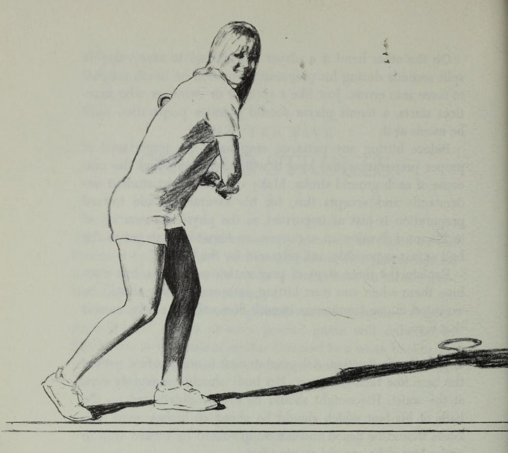
Hình 32. Sau một hoặc hai lần ném vợt không thành công qua mạng, người mới bắt đầu sẽ gặp khó khăn lớn, điều này sẽ dẫn đến một trục xoay tự nhiên, nhỏ gọn và được thực hiện tốt.
Xoay: Việc xoay rất đơn giản ngoại trừ việc nó phải được bắt đầu trong tích tắc người chơi nhìn thấy cú đánh của đối thủ đang đến. Sau đó, anh ta phải thay đổi cách cầm vợt của mình, nếu cần, trong khi bắt đầu đưa vợt trở lại. Chuyển động quay lại của vợt giúp xoay vai về đúng vị trí. Sẽ là một bước tiến rất lớn nếu bạn có thể khiến học trò của mình nghĩ về cây vợt của mình như nút khởi đầu cho chuỗi hành động tạo nên điểm xoay. Đồng thời, vợt bắt đầu lùi lại và vai xoay, trọng lượng cơ thể sẽ bắt đầu dịch chuyển để anh ta có thể đẩy mạnh đến vị trí anh ta sẽ chặn và đánh bóng.
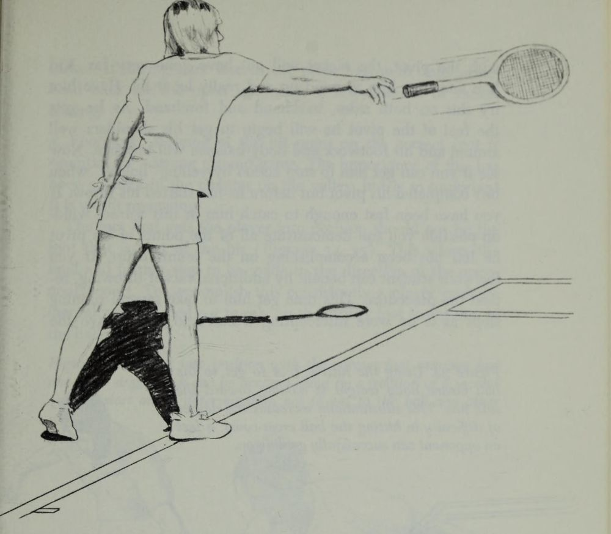
Hình 33. Khi ném vợt về phía trái tay, ginner sẽ thực hiện tốt các động tác bằng chân và cơ thể theo bản năng, thậm chí đến mức giữ vai và hông một cách chính xác.
Đôi khi bạn sẽ thấy một người mới bắt đầu không thể cảm nhận được trục xoay. Điều này xảy ra thường xuyên nhất với những cô gái không chơi nhiều môn thể thao khác. Họ chưa học được cách lên dây cót và thực sự bay bằng gậy bóng chày, gậy đánh gôn hay bất cứ thứ gì. Giải pháp nhanh nhất là lấy một cây vợt cũ có thể ném được và hướng tới một sân trống. Yêu cầu học sinh của bạn vào tư thế sẵn sàng, cầm vợt đúng cách và tất cả mọi thứ. Hãy tránh sang một bên đề phòng. Yêu cầu anh ta nhắm đến một điểm xa, xoay người và nhấc vợt khi anh ta bước về phía trước (Hình 32, 33). Nếu anh ấy gặp rắc rối
với trục quay, vợt sẽ không đi được xa lắm. Hãy trêu chọc anh ấy và thúc giục anh ấy cuộn dây và thực sự để nó bay đi. Yêu cầu anh ta thử động tác này ở cả hai bên, trái tay và thuận tay. Khi anh ấy cảm nhận được trục quay, anh ấy sẽ bắt đầu di chuyển vai tốt hơn và động tác chân cũng như khả năng giữ thăng bằng của cơ thể sẽ được cải thiện. Bây giờ hãy xem liệu bạn có thể khiến anh ta dừng hành động bằng cách hét lên “giữ nó” khi anh ta hoàn thành cú xoay của mình nhưng trước khi anh ta bắt đầu ném. Nếu bạn đủ nhanh để bắt được anh ta ở vị trí bắt bóng chính xác này, bạn có thể chứng minh tất cả các điểm xoay trục mà anh ta chưa đạt được trên sân tennis. Nếu bạn cảm thấy học sinh của mình có thể được hưởng lợi bằng cách ném vợt bổ sung, hãy lặp lại quy trình. Lần này yêu cầu học sinh thực hiện vài bước chạy như thể đang chặn một quả bóng và sau đó ném bóng lên.
Hình 34. Dùng chân đánh để tiếp cận bóng có nghĩa là trọng lượng cơ thể đang di chuyển về phía đường biên.
Điều này làm tăng đáng kể mức độ khó khi đánh bóng chéo sân, một thực tế mà đối thủ có thể đánh cược thành công.
vợt. Nếu trong các bài học sau, trục xoay bắt đầu xấu đi, hãy quay trở lại khoảng trống để tung vợt trong vài phút.
Động tác bằng chân: Đến điểm đánh bằng chân phải là điều cần thiết để có một trận đấu trên mặt đất vững chắc. Tầm quan trọng của điều này đã được đề cập trong chương về cú vô lê, nhưng nó quan trọng đến mức đáng được xem xét lại. Chân đưa người chơi vào vị trí không phải là chân là một phần của cú đánh (Hình 34, 35). Điều này cho phép bước cuối cùng và bước đánh được thực hiện theo hướng sân đối phương. Để thực hiện được điều này một cách nhất quán, người chơi phải được lập trình về mặt tinh thần để không dựa vào chân đánh để đưa bóng.
Hình 35. Vào đúng vị trí bằng chân chỉ cần một bước nữa, có thể được thực hiện bằng cách bắt đầu nhanh hơn một phần giây và quyết tâm không chạm vào bóng nữa
MẪU CƠ BẢN " Giải thích cho học sinh của bạn mục đích của những mẫu này là bắt đầu tạo rãnh ở vị trí sẵn sàng, trục xoay và động tác bằng chân. Việc đưa bóng qua lưới sẽ đến sớm thôi. Hãy chuẩn bị nhắc nhở học sinh nhiều lần về điều này, vì bất chấp những gì bạn nói, suy nghĩ duy nhất của học sinh là đánh bóng trở lại bằng mọi cách có thể. Một khi học sinh bắt đầu tập trung vào vị trí sẵn sàng, trục xoay và động tác bằng chân, sự tiến bộ sẽ khá nhanh chóng. Nếu học sinh của bạn chỉ mới bắt đầu, việc ném các mẫu sẽ rất hữu ích. Di chuyển đến vị trí của Cách lưới 10 feet về phía lưới của anh ấy và đặt anh ấy lùi lại nửa bước so với đường biên ngang, nhưng hãy cho anh ấy nhiều thời gian ở giữa các cú đánh để anh ấy có thể trở lại vị trí sẵn sàng. bước thứ hai về phía lưới khi anh ấy đánh bóng (Hình 36). Giải thích cho anh ấy rằng đây là quy trình tương tự mà anh ấy đã thực hành trên lưới. Hãy xem qua một ví dụ. Cho anh ấy thấy khi bạn ném bóng sang bên phải, anh ấy sẽ bước bằng chân phải ít nhiều song song với đường biên và sau đó di chuyển về phía trước để đánh bóng bằng chân trái. Vị trí sẵn sàng, thay đổi cách cầm, vợt lùi về trục, vung vợt thuận tay, đến vị trí sẵn sàng, thay đổi cách cầm, vợt lùi về trục, vung vợt trái tay, v.v. Chẳng bao lâu nữa, ba điều cơ bản về chuẩn bị sẽ bắt đầu hòa quyện và trở thành một hành động mượt mà và liên tục hơn. | Đến bây giờ, học sinh của bạn đã có thể kết nối được trong một vài bức ảnh. Nếu không, hãy yêu cầu anh ta cúi đầu xuống và nhìn bóng qua cú đánh. Vì vậy, anh ta không lo lắng và thắt chặt,
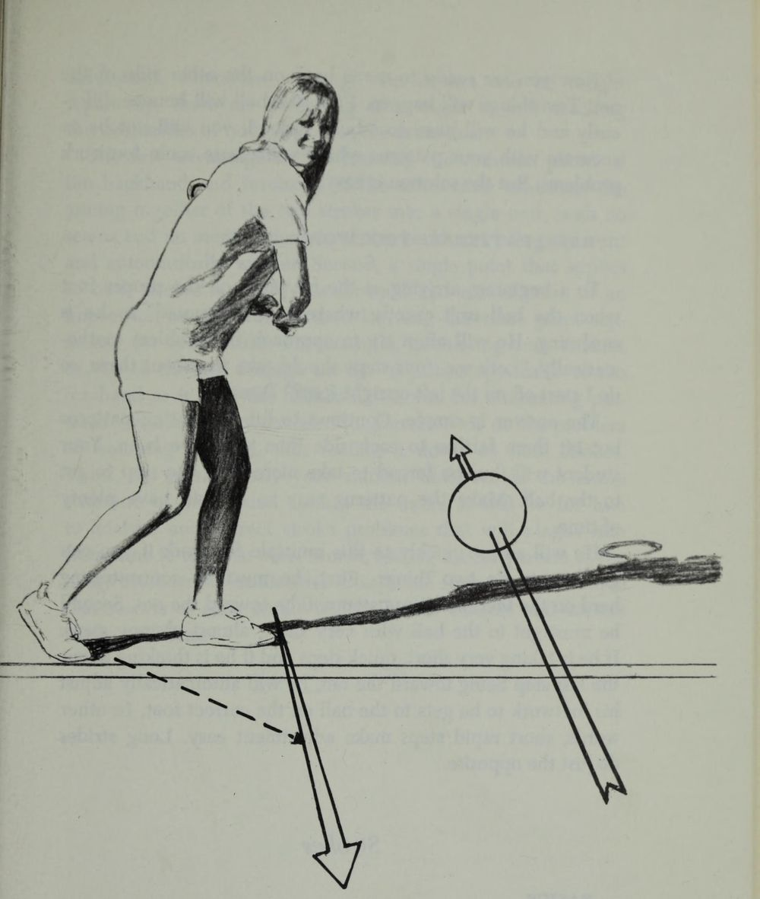
Hình 36. Khi ở vị trí chân không đánh, bóng có thể được đánh với sức mạnh và độ chính xác ở đường biên ngang hoặc đường biên.
Và một đối thủ không biết cái nào.
Bây giờ bạn đã sẵn sàng quay trở lại phía bên kia của mạng. Hai điều sẽ xảy ra. Đầu tiên; quả bóng sẽ nảy khác đi và anh ấy sẽ cần phải điều chỉnh. Thứ hai, bạn sẽ không thể thực hiện chính xác các mẫu của mình, điều này sẽ tạo ra một số vấn đề về động tác bằng chân. Nhưng giải pháp rất dễ dàng. MẪU CƠ BẢN—BƯỚC CHÂN Đối với người mới bắt đầu, việc đạt đến điểm đánh bằng chân phải khi bóng không ở chính xác vị trí mà nó “được cho là” là điều khó hiểu. Anh ta thường cố gắng tiếp cận vấn đề bằng toán học. “Để xem, tôi sẽ phải đi bốn bước tới đó, vậy tôi sẽ bắt đầu bằng chân trái hay chân phải?” Thảm họa. Câu trả lời rất đơn giản. Tiếp tục đánh các kiểu xen kẽ nhưng đánh xa hơn về mỗi bên so với trước đây. Do đó, học sinh của bạn sẽ buộc phải thực hiện nhiều hơn một bước để tiếp cận quả bóng. Làm cho các mẫu dễ dàng để anh ấy có nhiều thời gian. Anh ấy sẽ nhanh chóng thích nghi với động tác nhiều chân này nếu bạn có thể yêu cầu anh ấy làm hai việc. Đầu tiên, anh ta phải tập trung cao độ vào việc bước đánh của anh ta sẽ hướng về phía lưới. Thứ hai, anh ta phải tiếp cận quả bóng bằng những bước đi rất ngắn và gần như chập chờn. Nếu anh ta bước những bước rất ngắn, nhanh và nếu anh ta đang nghĩ đến bước cuối cùng là về phía lưới, anh ta sẽ tự động điều chỉnh động tác chân của mình để chạm bóng bằng chân chính xác. Nói cách khác, các bước ngắn và nhanh giúp việc điều chỉnh trở nên dễ dàng. Những bước tiến dài thì ngược lại.
Các Cú Đánh
Cú trái tay và cú thuận tay, cả hai đều là những cú đánh tiếp đất, có nhiều điểm tương đồng từ khi bắt đầu xoay cho đến khi đánh và theo sau. Trên thực tế có rất ít chính
sự khác biệt. Do đó, mặc dù các nét có thể được dạy riêng biệt, nhưng có ba lợi ích lớn khi dạy những điểm tương đồng của cả hai nét cùng một lúc. Ưu điểm đầu tiên là việc học các điểm chung của cú đánh trái tay và thuận tay cùng lúc sẽ tiếp tục nối hai cú đánh lại với nhau thành một đơn vị duy nhất, không có đường nối và không có hình ảnh trong đầu về việc cú đánh trái tay khác nhau và tự động yếu đi. Thứ hai, một điểm duy nhất áp dụng cho cả hai cú đánh sẽ nhanh chóng được hiểu và gây ấn tượng với học sinh hơn là học cùng một điểm riêng biệt cho mỗi cú đánh. Ví dụ: hướng dẫn học sinh của bạn “quan sát bóng qua cú đánh” cũng có thể áp dụng cho cú thuận tay cũng như cú đánh trái tay. Khi bạn đánh theo các kiểu xen kẽ, bạn có thể khiến anh ta tập trung hoàn toàn vào vấn đề quan sát quả bóng, từ đó tập trung vào cả hai cú đánh. Thứ ba, học sinh của bạn càng hiểu rõ toàn bộ cấu trúc của các cú đánh chạm đất thì anh ta càng dễ dàng phân tích và sửa chữa các vấn đề về cú đánh mà đôi khi sẽ gây khó chịu cho anh ta. Nói cách khác, việc có một bức tranh rõ ràng về nhiều điểm tương đồng cơ bản của nét vẽ, tách biệt khỏi một số cải tiến riêng biệt của mỗi nét vẽ sẽ giúp anh ta phân tích và khắc phục các vấn đề về nét vẽ.
Những điểm chung cơ bản giữa thuận tay và trái tay
Từ vị trí sẵn sàng, chuyển động của vợt sẽ bắt đầu ngay khi xác định được bóng sẽ được đánh ở phía nào. Vợt là nút khởi đầu cho tất cả các hành động tiếp theo.
Bóng được quan sát từ thời điểm nó rời vợt đối phương ngay tại điểm đánh.
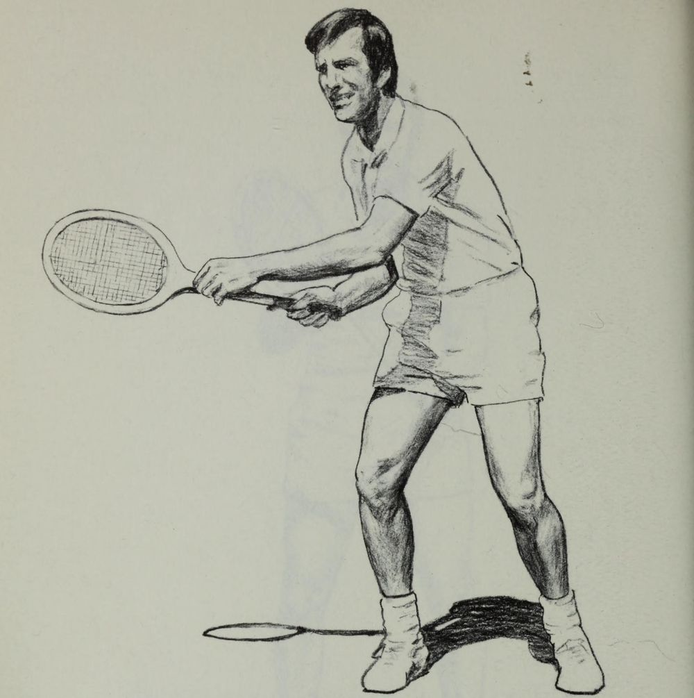
Hình 38.
Nếu cần thiết, cách cầm vợt được thay đổi khi tay trái dẫn vợt về phía sau. Tay trái giúp di chuyển và đỡ vợt. Trong giai đoạn đầu của động tác xoay, nó giúp vai xoay đúng cách.
Tốc độ của cú xoay, bao gồm cả cú vung ngược, được xác định bởi tốc độ của quả bóng đang tới.
Khi vai tiếp tục xoay nhẹ nhàng bằng cánh tay
và vợt, trọng lượng cơ thể bắt đầu thực sự di chuyển theo hướng điểm chặn bóng.
Khi tiếp tục xoay, đầu vợt được cơ thể đưa ở ngang tầm vai trên đường đến vị trí vung vợt lùi hoàn toàn. Cổ tay không được phép hướng lên trên, điều này sẽ khiến trục vợt quá vuông góc với mặt đất.
Hình 4o.
Không dừng lại, vợt sẽ bắt đầu hạ xuống mức đánh mô tả một vòng cung nhỏ khi nó thực hiện như vậy.
Mặc dù cú vung vợt diễn ra liên tục nhưng tại thời điểm này vợt đã đạt đến vị trí vung vợt lùi hoàn toàn và đang hướng vào điểm dừng sau. Cánh tay vợt gần như được mở rộng hoàn toàn nhưng
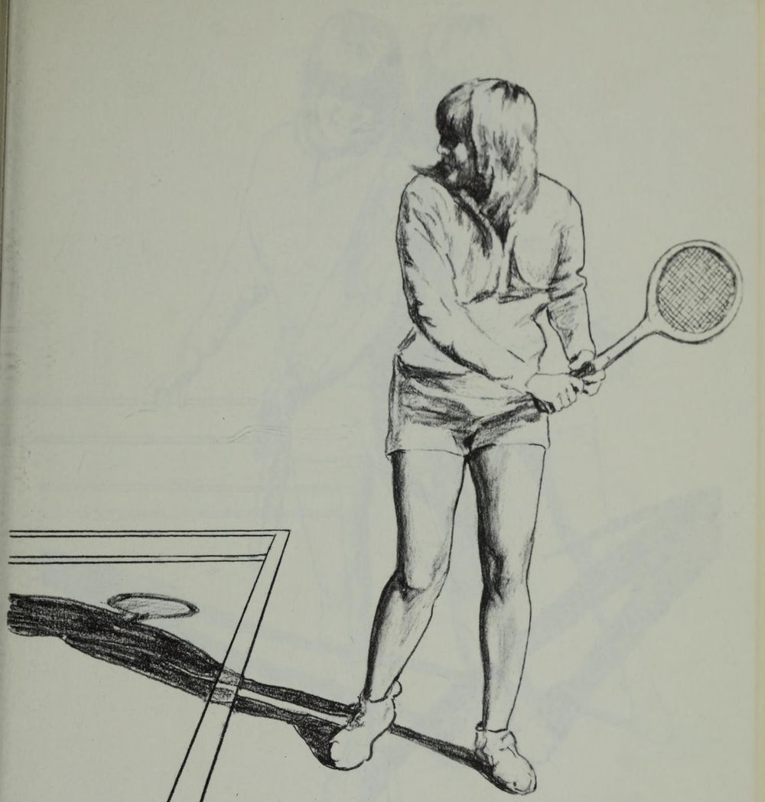
Hình 41.
không hoàn toàn vì vẫn còn một chút uốn cong ở khuỷu tay. Bàn chân sau đặt toàn bộ trọng lượng cơ thể. g. Đầu gối phải uốn cong để người chơi có thể hạ thấp độ bay của bóng. Anh ta phải duy trì ở mức đó trong toàn bộ cú đánh.
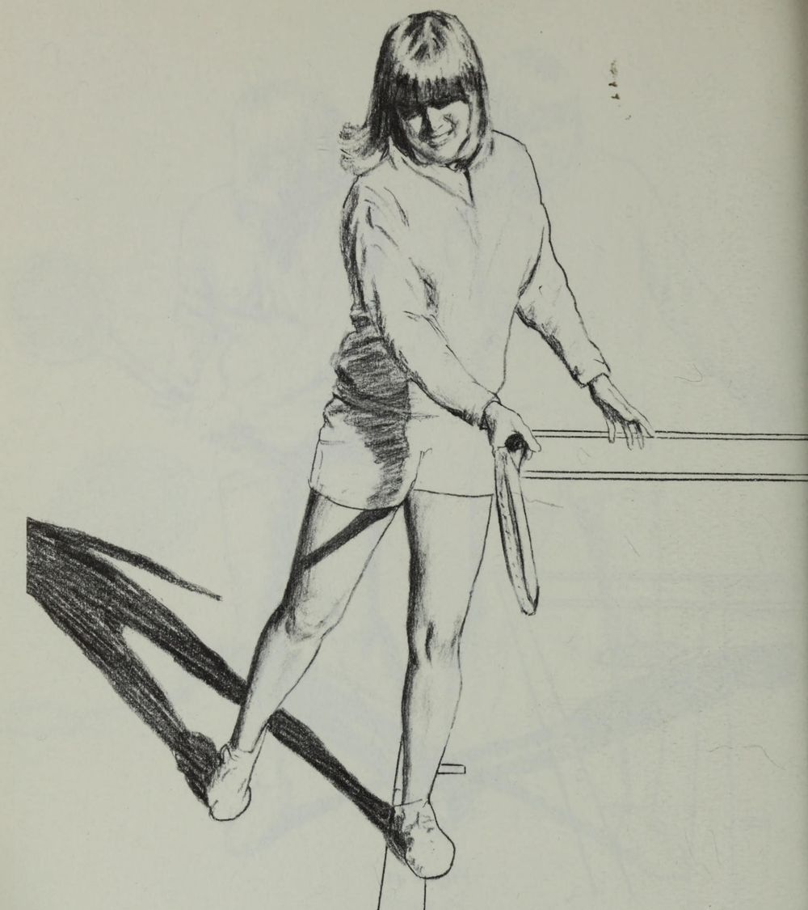
Hình 42.
Vợt bắt đầu tăng tốc nhẹ nhàng về phía trước để đạt tốc độ tối đa tại điểm đánh.
Khi vợt bắt đầu chuyển động về phía trước, trọng lượng bắt đầu chuyển sang chân trước đã bước về phía lưới.
Trục vợt song song với bề mặt thi đấu. Đây là
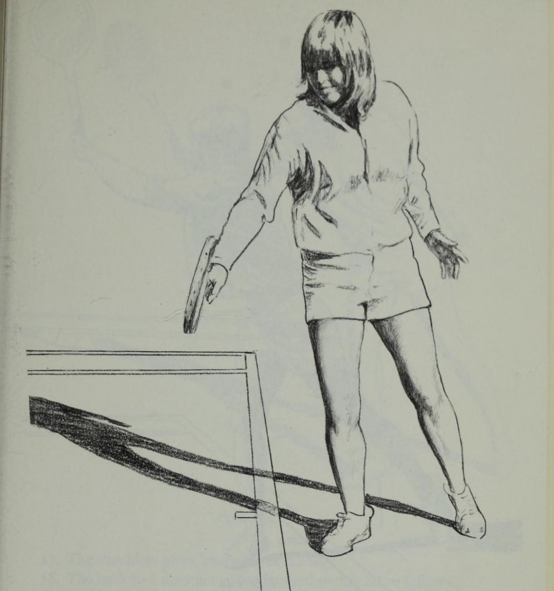
Hình 43.
đặc biệt quan trọng ở những cú đánh thấp. Các trường hợp ngoại lệ là những cú đánh ở ngang vai hoặc cao hơn.
Tại thời điểm va chạm, cổ tay phải vững chắc, Vợt song song với lưới.
Vào đúng thời điểm va chạm, toàn bộ trọng lượng được chuyển từ chân sau sang chân trước.
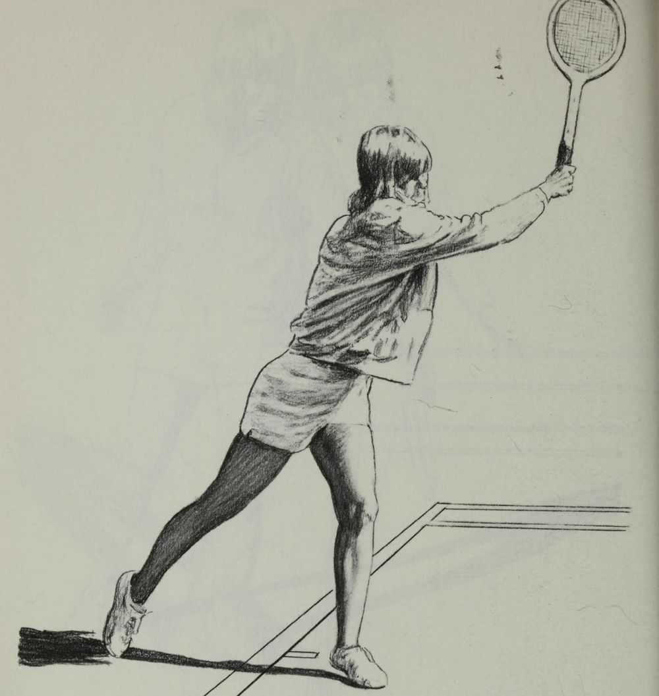
Hình 44.
Vợt quét qua cú đánh theo một khoảng thời gian dài như thể mép bàn tay đang phủi bụi trên một chiếc bàn dài. Khi cú đánh tiếp theo này xảy ra, cơ thể tiếp tục di chuyển về phía trước, do đó làm tăng đáng kể thời gian bóng tiếp xúc với vợt.
Trong quá trình thực hiện động tác tiếp theo, cánh tay sẽ duỗi ra hoàn toàn, mặc dù nó không cứng và khuỷu tay không được phép khóa.
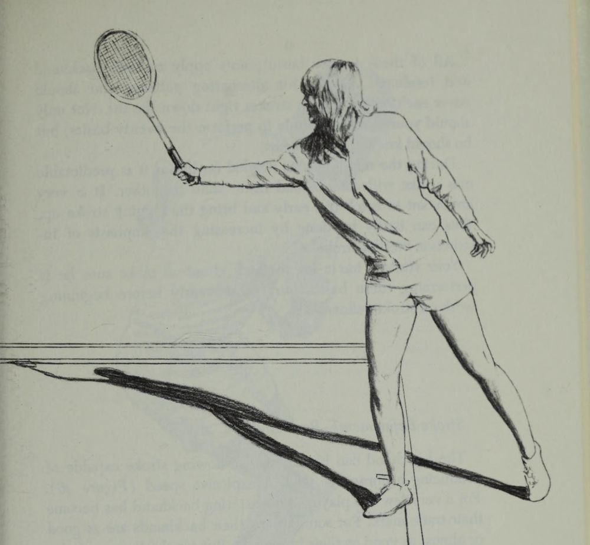
Hình 45.
dừng lại. đối thủ của
Tất cả 20 điểm cơ bản này áp dụng cho cả trái tay và thuận tay. Khi bạn đánh các mẫu xen kẽ, bạn nên bao gồm từng điểm trên cả hai nét. ngay dưới danh sách. Học sinh của bạn không chỉ có thể thực hiện được 20 điều cơ bản mà còn phải thuộc lòng chúng. Trong nhiều bài học cần thiết về cơ bản, có thể dự đoán được một cú đánh sẽ tiến nhanh hơn cú đánh kia. Điều rất quan trọng là phải nắm bắt được điều này sớm và nâng cao độ trễ & cú đánh. Điều này có thể dễ dàng thực hiện được bằng cách tăng cường sự nhấn mạnh của hướng dẫn vào cú đánh đó. Học viên của bạn có rất nhiều điều phải suy nghĩ, vì vậy hãy đảm bảo rằng anh ấy thực hiện những điều cơ bản này một cách khá nhất quán trước khi bắt đầu công việc cải tiến nét vẽ. Cải tiến cú đánh—Trái tay Cú đánh trái tay có thể là một cú đánh mạnh mẽ có khả năng tạo ra độ chính xác cũng như tốc độ bùng nổ (Hình 46). Đối với một số rất ít người chơi hàng đầu, cú trái tay tàn khốc đã trở thành thương hiệu của họ. Đối với một số người khác, cú trái tay của họ tốt hoặc gần như tốt bằng cú thuận tay của họ. Nhưng đối với phần lớn người chơi, trái tay là một vấn đề và nó tạo tiền đề cho việc cuối cùng mất rất nhiều điểm. Mặc dù mọi chuyện là như vậy nhưng nó không nhất thiết phải như vậy. Một số lý do khiến cú đánh trái tay trở thành cú đánh tiếp đất yếu nhất có thể được giải quyết và khắc phục trong giai đoạn đầu học chơi. Những điểm cần thảo luận với học sinh của bạn trước khi thực hiện các kiểu đánh trong cải tiến cú đánh trái tay Khi dạy các cải tiến về cú đánh trái tay cho học sinh của bạn, bước đầu tiên là vượt qua rào cản tinh thần về trái tay. Những điểm sau đây sẽ giúp anh ta hiểu tại sao hầu hết người chơi
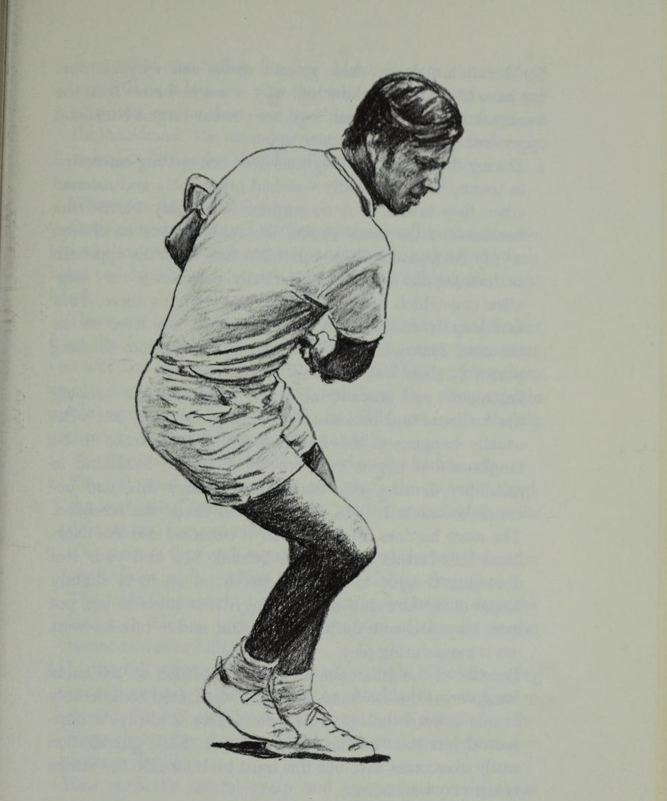
Hình 46. Cú trái tay có sức mạnh thiên bẩm to lớn nếu và chỉ nếu việc chuẩn bị cú đánh được thực hiện đúng cách.
trái tay là cú đánh mặt đất yếu nhất và"tại sao anh ta không cần phải như vậy. Trên thực tế, hãy cho anh ta thấy tại sao nó có thể tốt hơn cú thuận tay. Nếu anh ta bị thuyết phục, bạn có thể cùng nhau rèn luyện một cú trái tay mà đối thủ sẽ sợ hãi, không vồ lấy.
Trong khoảng thời gian bất kỳ người mới bắt đầu nào bắt đầu quan tâm đến quần vợt, anh ta chắc chắn đã theo dõi người khác chơi và lắng nghe khi họ nói chuyện. Không có gì ngạc nhiên khi anh nhanh chóng nhận ra cú đánh trái tay là cú đánh yếu. Kết luận trong tiềm thức của anh ấy là “Trái tay của tôi cũng sẽ có vấn đề.” Và cách tiếp cận học cách đánh của anh ấy tự động trở thành một phương pháp rất tiêu cực, thường không rõ ràng, nhưng nó ở đó. Bước đầu tiên của bạn là thuyết phục anh ấy rằng điều này không nhất thiết phải như vậy. Hãy tẩy não anh ta nếu cần thiết, nhưng hãy khiến anh ta suy nghĩ tích cực về cú trái tay của mình.
Người hướng dẫn và học sinh đều có trách nhiệm giữ cho cú thuận tay và cú trái tay ở mức độ thành thạo như nhau. Nhưng điều thường xảy ra là cú thuận tay là cú đánh đầu tiên được dạy và nó bắt đầu vượt lên trước cú đánh trái tay về độ tin cậy. Trong khi chơi, học sinh nhận ra điều này, và bởi vì anh ta muốn thắng nên anh ta bắt đầu thiên về cú thuận tay. Anh ta càng làm điều này thì nó càng trở nên tốt hơn và tay trái càng ngày càng lùi về phía sau. Bạn và học trò của bạn nên đồng ý giữ cú trái tay ở phía trên hoặc phía trước một chút so với cú thuận tay của anh ta về mức độ thành thạo. Nếu nó bắt đầu tụt hậu, hãy chú trọng hơn vào nó trong mỗi buổi học, và đến lượt trẻ, trẻ phải sử dụng nó nhiều hơn trong khi chơi.
Do sự khác biệt về vị trí vai ở tay sau so với tay thuận, bóng được tiếp xúc xa hơn đáng kể về phía lưới. Điều này có nghĩa là luôn có ít thời gian hơn một phần giây ở phía bên trái tay. Việc chuẩn bị sớm sẽ dễ dàng khắc phục được điều này, nhưng điều này phải được xây dựng ngay từ đầu trong cú đánh.
Ở cú đánh trái tay, cánh tay và cổ tay có sức mạnh lớn khi bóng được tiếp xúc tốt ở phía trước cơ thể, nhưng lại có rất ít sức mạnh khi đánh muộn. Điều này trái ngược với cú thuận tay nơi cánh tay và cổ tay duy trì sức mạnh của chúng
ngay cả khi bóng được đánh muộn. Hãy làm rõ sự thiếu sức mạnh ở một cú đánh muộn, cộng với thời gian chuẩn bị ít hơn trong tích tắc, có nghĩa là hoàn toàn không thể có sự thỏa hiệp ở cú đánh trái tay. Anh ta phải học cách luôn chuẩn bị sớm để có thể đánh trái tay tốt trước mặt. Điểm khác biệt của trái tay Trong các kiểu đánh mặt đất trước đây, bạn đã thực hiện 20 cách điều chỉnh cơ bản chung cho cả cú đánh thuận tay và trái tay. Bây giờ là lúc bắt đầu tinh chỉnh cú trái tay. Chỉ có năm điểm mà trái tay khác với thuận tay. Khi bạn đưa những điều này vào hướng dẫn của mình, bạn sẽ thấy học sinh của mình sẽ không gặp vấn đề gì khi nhặt chúng lên. Trên thực tế, nếu anh ta đã hoàn thành được 20 điểm cơ bản chung cho cả hai cú đánh, thì rất có thể anh ta đã thực hiện được những điểm khác biệt này một cách khá tự nhiên.
Nên sử dụng kiểu cầm vợt Continental cho cú đánh trái tay.
Tay trái phải hỗ trợ và hướng dẫn vợt trong quá trình vung vợt về phía sau lâu hơn, cho đến thời điểm vợt bắt đầu chuyển động hạ xuống và chuyển động về phía trước.
Cổ tay chắc chắn và không thay đổi trong toàn bộ cú đánh từ vị trí sẵn sàng cho đến lần tiếp theo.
Vợt được đưa về phía sau trong một cú vung vợt về sau phẳng hơn so với cú thuận tay. Điều này lần lượt làm giảm kích thước của cung khi vợt di chuyển đến mức đánh.
Ở vị trí xoay hoàn toàn, vai trước hoặc vai phải đủ xa để điểm của vai hướng về phía đường bên trái nhiều hơn là về phía lưới. Là điểm bản lề, vai phải gần như đứng yên trong suốt cú đánh. Việc học sinh của bạn nắm bắt và hiểu rõ về những khác biệt trong nét vẽ này là rất quan trọng. Anh ta càng hiểu rõ cấu trúc của trái tay thì anh ta sẽ học nó càng nhanh và càng dễ dàng khắc phục các vấn đề về cú đánh mà đôi khi sẽ nảy sinh trong tương lai. Đừng đánh giá thấp
tầm quan trọng của lý do tại sao một việc nào đó được thực hiện và đừng đánh giá thấp khả năng hiểu và: lợi ích của học sinh khi biết lý do tại sao. CÁC VẤN ĐỀ ĐẶC BIỆT CẦN XEM—Cánh tay và khuỷu tay TRÁI Khi đưa vợt về phía sau, học sinh của bạn có thể sẽ có xu hướng giữ cánh tay trên của mình hướng ra ngoài và cách xa cơ thể ở tư thế nằm ngang rồi uốn cong khuỷu tay để đưa cẳng tay và vợt về phía sau. Khi anh ta bắt đầu cú vung về phía trước từ vị trí này, khuỷu tay sẽ dẫn trước cẳng tay và vợt dẫn đến chuyển động đập, mất lực và độ chính xác. Để khắc phục điều này, hãy yêu cầu học sinh của bạn đưa cánh tay trên và cẳng tay của mình lại gần cơ thể khi nó quay trở lại cùng với vợt trong quá trình xoay. Khuỷu tay chỉ hơi cong. Nếu anh ấy gặp khó khăn trong việc điều chỉnh, hãy yêu cầu anh ấy chạm vào hông trái bằng mặt trong của cổ tay phải ở tư thế lên dây cót hoàn toàn. Điều này sẽ giúp ích bằng cách cung cấp cho anh ta một điểm tham chiếu và mặc dù là một sự điều chỉnh quá mức nhưng nó rất hiệu quả. Cổ tay phải giữ vững trong toàn bộ cú đánh. Vai Vai phải được giữ ở vị trí thấp trong quá trình thực hiện động tác vung vợt ra sau và phải hạ xuống trong suốt cú đánh. Đó là điểm bản lề và để phát huy hết sức mạnh cần phải hướng xuống bóng. Ở tư thế lên dây cót hoàn toàn, anh ta phải cúi sát cằm và nhìn qua điểm vai. Hông và Vai Cơ thể phải di chuyển sang một bên ở giai đoạn cuối của cú đánh để có thể thực hiện cú swing tự do không bị gián đoạn. Nhưng nhiều người chơi, đặc biệt là ở cú đánh trái tay, để vai và hông bị đứt ra quá sớm. Bởi vì điều này dẫn đến những vấn đề rất nghiêm trọng, tốt hơn hết bạn nên dạy học sinh giữ cả hông và vai quá lâu một chút. Điều này có thể dễ dàng được điều chỉnh sau này bằng cách yêu cầu anh ta nhấn mạnh việc theo dõi của mình.
Đánh bằng chân sau Ngay cả khi học sinh của bạn đã chuẩn bị tốt trước cú đánh, anh ta vẫn có thể có thói quen dồn trọng lượng của mình lên chân sau khi vung vợt. Điều này làm cho vai bị gãy hướng lên trên và cú đánh di chuyển theo kiểu đánh gôn. Hãy nắm bắt điều này sớm và khiến anh ta di chuyển bằng chân sau về phía bóng, hoàn thành việc chuyển toàn bộ trọng lượng sang chân trước vào thời điểm vợt tiếp xúc với bóng. Nó cũng sẽ giúp anh ta nhấn mạnh đến việc theo dõi sâu rộng về phía trước. Mua thời gian Bởi vì không thể có sự thỏa hiệp trong việc đánh một cú trái tay tốt ở phía trước cơ thể, người mới bắt đầu sẽ sớm học được cách lùi ra xa quả bóng thay vì bước vào nó, anh ta có thể câu giờ vài giây để đưa vợt của mình vượt qua. Hành động khắc phục phải có hai mặt. Đầu tiên, anh ta phải hoàn thành tất cả các hành động chuẩn bị sớm hơn nhiều để khi anh ta ở tư thế backswing hoàn toàn, anh ta thực sự đang chờ bóng. Thứ hai, anh ta phải bước chân đánh về phía lưới và chuyển trọng lượng sang chân đó khi vợt chạm bóng. Tóm tắt Khi cú trái tay của học sinh tiến triển, nó sẽ phát triển một vẻ ngoài gọn gàng. Cảm giác như lò xo có năng lượng dự trữ sẵn sàng để sử dụng tốt trước cú đánh thực sự. Từ vị trí này, anh ta sẽ thực hiện một cú vung tăng tốc mượt mà và quét dài về phía trước, cuối cùng hướng về phía trên điểm dừng phía sau của đối thủ. TIẾN HÀNH CÚT-TẬN TAY Nơi thuận tay có sự khác biệt
Nên sử dụng kiểu cầm vợt Eastern ở bên thuận tay.
Trong quá trình xoay, tay trái hỗ trợ và hướng dẫn vợt vào động tác backswing cho đến khi vai trước hoặc vai trái đạt đến vị trí xoay tối đa của nó. Khi vợt tiếp tục
Khi đến vị trí backswing hoàn toàn, tay trái buông vợt và vươn về phía lưới để giữ thăng bằng. Điểm của vai trái hướng vào lưới.
Khi vợt di chuyển xuống mức đánh và bắt đầu về phía trước, vai bắt đầu xoay. Vai trước bắt đầu di chuyển sang trái và ra phía sau trong khi vai phải hơi di chuyển xuống khi tiến về phía trước. Tại thời điểm va chạm, vai sẽ song song với lưới. Tùy thuộc vào độ mở của tư thế, hông có thể song song với lưới và vai, hoặc vuông góc với lưới và vai và do đó gần như song song với đường biên.
Từ vị trí sẵn sàng hoặc trong khi vung vợt sau, cổ tay hơi ngả ra sau và vững chắc. Nó vẫn giữ nguyên như vậy trong suốt cú xoay về phía trước cho đến thời điểm va chạm. Khi vợt tiếp xúc với bóng, cổ tay di chuyển mạnh về phía trước và khóa vào vị trí sao cho vợt, cổ tay và cánh tay tạo thành một đường thẳng khi vợt quét về phía trước trong lượt tiếp theo. Người mới bắt đầu không nên sử dụng bất kỳ cổ tay nào và người chơi ở trình độ trung cấp nên hạn chế hành động này của cổ tay trong tích tắc cuối cùng của sự tiếp xúc với bóng và vợt, để cổ tay, cánh tay và vợt đạt được một đường thẳng trong giai đoạn cuối của quá trình tiếp theo. Nếu học trò của bạn gặp vấn đề về kiểm soát cú thuận tay, có lẽ anh ta đang sử dụng cổ tay quá nhiều. Điều này có thể được khắc phục bằng cách yêu cầu anh ta làm cho cổ tay của mình vững chắc hơn trong toàn bộ cú đánh.
Ở phần tiếp theo, vai xoay tự do cho phép vợt tiếp tục quét về phía trước và hướng lên trên. CÁC VẤN ĐỀ ĐẶC BIỆT CẦN XEM—Cách cầm vợt thuận tay Sử dụng cách cầm vợt sai ở phía thuận tay là một vấn đề có thể phá hủy cú đánh thuận tay vì học viên bù đắp cho việc định vị mặt vợt không đúng bằng cách xoay cổ tay và cánh tay trong khi vung vợt. Điều này không phải lúc nào cũng rõ ràng, vì anh ta có thể chuyển sang cách cầm vợt không chính xác khi quay lưng-
xích đu. Hành động khắc phục chỉ đơn giản là kiểm tra thường xuyên để đảm bảo rằng anh ta có kiểu cầm thuận tay kiểu Eastern. Thời điểm tốt nhất để làm điều này là ở vị trí backswing hoàn toàn, và ngay sau cú đánh trước khi học trò của bạn có cơ hội quay trở lại vị trí sẵn sàng. Mặt vợt Một thói quen xấu dễ mắc phải khi thuận tay là đóng mặt vợt. Trong quá trình vung vợt về phía sau, mặt vợt chuyển từ vuông góc sang nhìn xuống bề mặt đánh. Điều này có thể được nhận thấy ở vị trí vung vợt lùi hoàn toàn và cần được khắc phục bằng cách yêu cầu học viên của bạn giữ mặt vợt vuông góc trong toàn bộ cú đánh. Nếu vấn đề vẫn tiếp diễn, hãy khắc phục bằng cách yêu cầu anh ta mở mặt vợt lên trời một chút. Cổ tay không vững Cổ tay yếu, lung lay dẫn đến cú sút không hiệu quả và thường không đi qua lưới. Nếu không sửa chữa, thói quen này cuối cùng sẽ dẫn đến việc tát vào bóng để cố gắng lấy thêm sức mạnh cho cú đánh. Nhắc nhở học sinh của bạn về tầm quan trọng của việc cổ tay phải thật chắc chắn và cố định vào vị trí khi đánh khi toàn bộ trọng lượng được chuyển từ bàn chân sau sang bàn chân trước. Cổ tay quá nhiều Quá nhiều cổ tay dẫn đến mức độ thiếu chính xác cao cùng với một cú bắn không thường xuyên giống như một viên đạn, đối với con mắt thiếu kinh nghiệm, trông giống như một cú đánh hoàn hảo. Ở đây một lần nữa cần nhấn mạnh vào việc làm săn chắc cổ tay. Nếu thói quen này vẫn tiếp tục, việc đặt cổ tay ra sau trong quá trình vung vợt sau nên được giảm thiểu hoặc tạm thời loại bỏ. Vai và hông Mở quá sớm với vai và hông dẫn đến vợt kéo theo trục vai. Học sinh sẽ cắt hoặc phạm lỗi các cú đánh ở bên phải của mình và có thể cố gắng khắc phục điều này bằng cách
đập cổ tay về phía trước. Có một hành động khắc phục đơn giản. Trong quá trình vung vợt về phía sau, anh ta nên buông vợt bằng tay trái và đưa tay về phía trước. Khi anh ấy làm điều này, hãy yêu cầu anh ấy chỉ vào quả bóng đang tới bằng tay trái. Điều này giúp giữ cho vai vuông góc với lưới cho đến khi vợt dẫn họ đi vòng quanh trong khi sử dụng Cánh tay và Khuỷu tay về phía trước. Một vấn đề thường gặp với những người mới bắt đầu và người ở trình độ trung cấp là thời gian thực hiện rất ngắn do uốn cong khuỷu tay và kéo vợt lên trên tại điểm đánh thay vì quét về phía trước trong cú đánh. Thói quen này ngày càng trở nên tệ hơn và chẳng bao lâu sau vợt sẽ bay qua vai trái. Giải thích cho học sinh của bạn tầm quan trọng của việc theo dõi lâu dài. Nhắc anh ấy rằng cánh tay của anh ấy phải duỗi ra hoàn toàn trong quá trình thực hiện động tác tiếp theo mặc dù khuỷu tay không khóa lại. Yêu cầu anh ta kết thúc cú đánh với vợt hướng vào điểm dừng phía sau của đối thủ. Tóm tắt Khi cú thuận tay của học viên của bạn được cải thiện, nó sẽ có cảm giác lực mượt mà với một cú đánh dài. Động tác bằng chân của anh ấy sẽ cho phép anh ấy bước về phía trước vào bóng, do đó cho phép anh ấy thực hiện các cú sút chéo góc và sút dọc với sức mạnh và độ chính xác tương đương. trái tay VÀ thuận tay Khi bạn thực hiện các cải tiến cú đánh trái tay và thuận tay, bạn sẽ muốn tập trung trước tiên vào một cú đánh và sau đó là cú đánh khác, nhưng đừng đánh tất cả các cú đánh của chuỗi mẫu vào cú đánh đó. Nói cách khác, hãy đánh ít nhất một trong các cú đánh mẫu vào nét chưa được thực hiện. Khi học sinh của bạn bắt đầu chinh phục các bước tinh chỉnh đột quỵ-
Vì vậy, anh ấy sẽ nhanh chóng đạt đến mục tiêu trở thành một cầu thủ giỏi. Vì vậy, bạn sẽ cần tăng độ khó của các mẫu để khiến anh ấy hứng thú và trò chơi của anh ấy được cải thiện với tốc độ ổn định. Điều này có thể được thực hiện bằng cách tăng tốc độ các cú đánh của bạn, giảm yếu tố thời gian giữa mỗi lần bắn và bằng cách đánh các cú đánh xa nhau hơn. Nhưng một trong những cách hiệu quả nhất để tăng độ khó của mẫu là yêu cầu học trò của bạn đánh ngày càng nhiều theo mẫu của anh ta trên sân chéo. Điều này dẫn đến chuỗi mô hình khó nhất cho đến nay và là việc tạo ra một cầu thủ chiến thắng, vì khả năng đánh chéo sân từ hầu hết mọi vị trí khiến đối thủ không thể di chuyển để thực hiện cú trả bóng ở đường dưới dễ dàng hơn. Để thực hiện được cú trả bóng chéo sân, học sinh của bạn thực sự phải vuốt bóng rất tốt. Quan trọng nhất, anh ta sẽ phải “xoay góc” trước khi chặn bóng để trọng lượng của anh ta có thể di chuyển về phía trước qua cú đánh về phía giữa lưới, thay vì đi xuống đường biên về phía cột lưới.
Chương 6
Cú Đánh Nền Biến Thể
Các Cú Đánh
Khi học trò của bạn đã thực hiện các cú đánh cơ bản của mình đến mức chúng không bị hỏng dưới áp lực của các kiểu khá khó, bạn nên bắt đầu thực hiện các cú đánh bổ sung. Từ bổ sung, thường được sử dụng nhiều nhất để mô tả những cú đánh này, có thể gây hiểu nhầm, vì những cú đánh cơ bản được sửa đổi này là một phần rất quan trọng trong trò chơi của người chơi chiến thắng. Đó là cú lốp bóng, cú sút xa, cú vô lê một nửa và cú trả giao bóng. Chúng là một phần của trò chơi cơ bản cũng như cú đánh trên hoặc giao bóng. Bạn nên đảm bảo rằng học sinh của bạn hiểu điều này để sẵn sàng dành thời gian cần thiết để thành thạo những nét vẽ mặt đất đã được sửa đổi này.
Cú Đỡ Giao Bóng
Để đánh giá đầy đủ tầm quan trọng cực kỳ của việc trả giao bóng, trước tiên hãy xem xét cú giao bóng. Mục tiêu của quả giao bóng là giành điểm với một quân át hoàn toàn, hoặc ít nhất là tạo tiền đề cho việc giành điểm cuối cùng bằng cách đặt người nhận giao bóng vào một vị trí phòng thủ mà từ đó anh ta không bao giờ phục hồi được. Người trả giao bóng phải vô hiệu hóa tác dụng của quả giao bóng hoặc tỷ lệ thắng điểm vẫn nghiêng về người giao bóng. Vì vậy, xét về tầm quan trọng, việc trả giao bóng được xếp ngay đầu danh sách cùng với việc trả giao bóng. Nó cũng xếp ngang hàng với cú giao bóng về mức độ khó. Cú giao bóng-trả giao bóng bị ảnh hưởng rất nhiều bởi tốc độ,
độ xoáy và vị trí của quả giao bóng cũng như bề mặt thi đấu, vị trí sân dự định của người giao bóng trong cú đánh tiếp theo của anh ta, trận đấu tổng thể của người giao bóng và cuối cùng là khả năng xử lý quả giao bóng của đối thủ của người giao bóng vào ngày hôm đó. Tùy thuộc vào những biến số này, mức độ thay đổi cú đánh tiếp đất cơ bản của một cú trả giao bóng có thể lớn hoặc nhỏ. Điểm khác biệt giữa quả giao bóng trả lại và các cú đánh trên mặt đất khác là bóng không được chơi cho đến khi quả giao bóng được đánh; do đó người nhận có nhiều thời gian để chuẩn bị. Cách cầm và thế đứng ở tư thế sẵn sàng của anh ta phải giống như được trình bày chi tiết trong chương về các cú đánh trên mặt đất với hai điểm khác biệt nhỏ. Đầu tiên, đầu gối phải cong hơn để anh ta có thể nằm xuống trong trường hợp bóng bay thấp và nhanh (Hình 47). Thứ hai, vị trí sân phải được xác định bằng một đường vẽ từ người giao bóng đến người nhận, với đường này chia đôi góc được tạo bởi cú giao bóng thuận tay có góc nhọn nhất và cú giao bóng trái tay có góc nhọn nhất có thể được đánh. Vị trí của người nhận dọc theo đường chia đôi này có thể ở phía sau đường cơ sở, ngay phía trước nó hoặc phía trước nó vài feet, tùy thuộc vào các biến đã được đề cập trước đó. Đứng một hoặc hai foot bên trong vạch cuối sân và bắt quả giao bóng sớm sẽ mang lại cho người nhận một lợi thế lớn nếu anh ta có thể thực hiện được quả giao bóng. Nó làm giảm đáng kể góc hiệu quả của một cú giao bóng đúng vị trí, và ngoài ra, quả giao bóng quay trở lại phần sân của người nhận sớm hơn nhiều. Nó cũng cho phép người nhận đánh bóng, đặt quả bóng trả về ở vị trí thấp dưới chân máy đẩy lưới. Nhưng người nhận không phải lúc nào cũng có thể đạt được vị trí giao bóng-trả bóng ưa thích này. Nếu mặt sân đặc biệt nhanh, nếu người giao bóng đánh với tốc độ và vị trí tốt, hoặc nếu phản xạ của người nhận giao bóng không đạt chuẩn thì sẽ có quá nhiều lỗi trả giao bóng. Người trả giao bóng sẽ phải thỏa hiệp, nhường chỗ và câu giờ bằng cách lùi lại. Bằng cách đứng sau vạch cuối sân, anh ta có được những giây phút quý giá để chuẩn bị cho cú đánh, nhưng một cú giao bóng có góc tốt sẽ kéo anh ta ra xa sân hơn và bởi vì anh ta đang đánh từ vị trí sân sâu hơn nên đối thủ của anh ta có được thời gian để vào vị trí tốt hơn cho cú đánh tiếp theo.
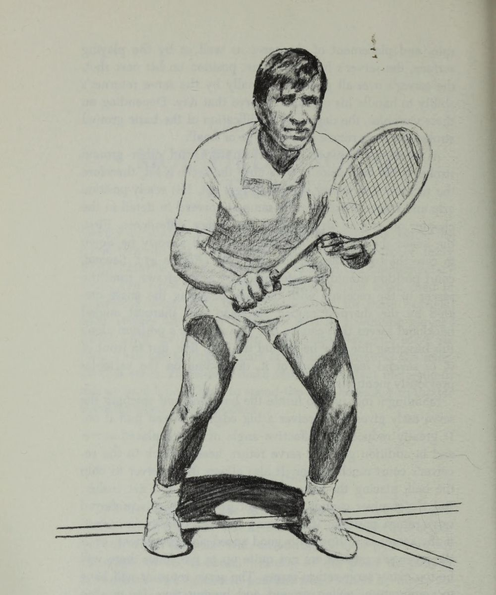
Hình 47. Tốc độ trả giao bóng được xác định bằng cách trọng lượng cơ thể mà người nhận có thể gánh chịu sau cú đánh.
Trong tích tắc cú giao bóng được thực hiện, anh ta phải di chuyển và di chuyển thật nhanh.
ĐÁNH BÓNG TRẢ LẠI Khi người giao bóng tung bóng, sự tập trung của người nhận bóng phải ở mức cao nhất. Anh ta phải sẵn sàng di chuyển rất nhanh, trên thực tế là nhanh hơn đáng kể so với bất kỳ cú đánh mặt đất nào khác. Khi vợt của người giao bóng chạm vào bóng, người nhận bóng phải di chuyển ngay khi anh ta cảm nhận được vị trí của quả giao bóng. Việc vung vợt lùi của anh ta phải được bắt đầu trước khi bóng đi qua lưới và phải được hoàn thành trước khi bóng chạm vào phần sân giao bóng. Học sinh của bạn đứng càng xa thì cú đánh trả của máy chủ của anh ta sẽ càng ít giống một cú đánh chạm đất hoàn toàn. Anh ta càng đứng xa thì càng có ít thời gian để thực hiện động tác bằng chân hoàn hảo, và vì vậy điều quan trọng là anh ta phải luôn xoay vai. Cú đánh sau của anh ta phải rất ngắn, tương tự như cú vô lê một nửa. Anh ta nên tập trung bóng và dồn trọng lượng của mình vào phía sau cú trả bóng. Cú xoay về phía trước của anh ta sẽ có nhiều khối hơn, nhưng anh ta phải thực hiện theo, mặc dù không đến mức anh ta thực hiện một cú đánh toàn bộ trên mặt đất. Cổ tay của anh ta sẽ rất chắc chắn trong suốt cú đánh. Điều quan trọng là anh ta phải quan sát quả bóng từ thời điểm tung bóng qua điểm trúng đích của quả giao bóng. Tốc độ hoặc nhịp độ trả bóng của anh ta phụ thuộc trực tiếp vào trọng lượng cơ thể mà anh ta có thể thực hiện được trong cú đánh. Lúc đầu, học trò của bạn sẽ đứng lùi lại để trả giao bóng, và cú đánh của anh ta sẽ gần giống với một cú đánh toàn bộ hơn. Anh ta vẫn phải di chuyển rất nhanh, luôn xoay vai và trong hầu hết các trường hợp phải thực hiện động tác bằng chân xuất sắc. MẪU THƯỢNG TRẢ-PHỤC GIAO Rất khó để hướng dẫn học trò của bạn một cách hiệu quả về việc trả giao bóng nếu bạn đang thực hiện các cú giao bóng. Sẽ rất đáng để tranh thủ sự giúp đỡ của một người chơi khác, người có thể thực hành giao bóng có giá trị trong khi học trò của bạn đang học cách trả giao bóng. Lúc đầu, hãy yêu cầu người giao bóng của bạn đánh bóng với tốc độ thấp và yêu cầu anh ta tập trung vào tính nhất quán cũng như thực hiện cú giao bóng sâu. Yêu cầu học sinh của bạn vào vị trí sẵn sàng ngay phía sau
đường cơ sở. Hãy chắc chắn rằng anh ta đang đối mặt với máy chủ. Điều này có nghĩa là anh ta sẽ không đứng hoàn toàn song song với đường cơ sở. Nói cách khác, anh ta phải đối mặt với “vấn đề”, đó là máy chủ. Nhiều người chơi không làm điều này và kết quả là mức độ khó trả giao bóng của họ tăng lên. Bạn nên chiếm một vị trí trên lưới của học sinh, thỉnh thoảng di chuyển xung quanh để có một góc nhìn khác. Sau vài phút trả giao bóng từ sân giao bóng thuận tay, hãy yêu cầu học sinh của bạn chuyển sang sân giao bóng trái tay. Điều này không chỉ giúp anh ta có cơ hội học cách trả giao bóng từ cả hai sân giao bóng mà còn giúp người giao bóng thực hành ở cả hai sân giao bóng. Khi học trò của bạn phát triển khả năng trả giao bóng của mình và anh ta cần phải luyện tập tính nhất quán trong một thời gian khá dài, anh ta có thể tiến tới vị trí sẵn sàng ngay bên trong đường cơ bản. Sau này bạn sẽ muốn di chuyển anh ta xa hơn một foot bên trong đường cơ sở. Anh ta sẽ cần phải sửa đổi cú đánh của mình mỗi khi anh ta di chuyển vào. Khi anh ta ngày càng trở nên thành thạo hơn trong việc trả giao bóng, bạn có thể sẽ phải chuyển sang một người giao bóng tốt hơn. Chẳng bao lâu nữa, bạn sẽ tranh thủ được sự giúp đỡ của một hoặc nhiều người chơi có tất cả các cú giao bóng bao gồm kiểu Mỹ xoắn, giao bóng phẳng, cắt và xoáy. Cuối cùng, bạn có thể áp dụng các mô hình giảng dạy trong đó học trò của bạn vào lưới sau mỗi lần trả giao bóng. Khi anh ta thực hiện, bạn đánh anh ta theo mẫu từ đường cơ sở khi người giao bóng của bạn di chuyển ra ngoài sau khi thực hiện cú giao bóng. Mục đích của loạt mẫu này là tạo điều kiện cho học trò của bạn bắt lưới mà không phá hủy tính nhất quán trong cú trả giao bóng của anh ta. Bước tiếp theo của bạn là nỗ lực hết sức để trả giao bóng cho học trò của bạn trong điều kiện thi đấu. Tổ chức các trận đấu tập và với sự đồng ý của đối thủ, chiếm một vị trí gần cột lưới. Khi học trò của bạn trả giao bóng, hãy xem cách anh ấy thực hiện những động tác cơ bản. Sau khi một điểm kết thúc, hãy thảo luận về những lĩnh vực anh ấy chưa thực hiện đúng cách, đặc biệt nhấn mạnh vào việc anh ấy di chuyển nhanh, giữ bóng trong suốt cú đánh và dồn trọng lượng của anh ấy di chuyển về phía sau quả bóng về phía lưới.
TÓM LƯỢC Một khi học trò của bạn đã hoàn thành những điều cơ bản mà không cần phải suy nghĩ về chúng, anh ta sẵn sàng làm việc về những gì anh ta nên làm với cú trả giao bóng của mình thay vì chỉ lấy lại nó. Những quan sát sau đây nên được thảo luận chi tiết với anh ta.
Cú trả giao bóng của anh ta phải đáng tin cậy, nhưng anh ta phải luôn cố gắng tấn công bất cứ lúc nào có thể. Anh ta phải sẵn sàng đón một cú giao bóng yếu và nổ tung nó, thỉnh thoảng đánh một cú thả bóng nếu người giao bóng bị treo ở vạch cuối sân.
Học sinh của bạn nên nghiên cứu cú giao bóng của đối thủ và học cách đoán trước loại và hướng giao bóng mà anh ta thực hiện khi đánh. Nếu đó là một cú giao bóng phẳng cứng, học trò của bạn nên chuẩn bị sẵn sàng để chặn nó. Nếu đó là một bước ngoặt của Mỹ, anh ta nên tiến tới, nắm bắt sớm và xử lý nó.
Anh ta nên học cách đoán trước cú giao bóng “yêu thích” của đối thủ mà anh ta sẽ sử dụng khi biết mình phải có điểm để tránh được break giao bóng.
Nếu đối thủ của anh ta liên tục lao vào lưới, anh ta nên tiến vào quả giao bóng, giữ cho cú trả bóng ở mức thấp và thường đánh xuống đường biên, nhưng thỉnh thoảng đánh một cú lốp bóng.
Anh ta nên quan sát cách xử lý các quả giao bóng của đối thủ. Anh ta nên thử nghiệm và tìm hiểu xem liệu một kiểu trả giao bóng cụ thể có gây rắc rối cho máy chủ hay không. Nếu người giao bóng lao vào lưới nhưng chỉ có đủ lực trên cao, anh ta nên lốp bóng. Nếu đối thủ gặp khó khăn trong việc chuyển hướng, anh ta nên thực hiện cú trả giao bóng sâu trong các góc. Nếu đối thủ của anh ta gặp khó khăn trong việc xử lý các xoáy khác nhau, anh ta nên thay đổi các cú trả bóng của mình bằng cách kết hợp các cú trả bóng ngược và cú đánh bóng. Nếu đối thủ của anh ta không muốn lên lưới, những cú trả bóng theo góc hợp lý mềm mại có thể buộc anh ta phải làm như vậy.
Trên hết, anh ấy phải khiến người phục vụ làm việc chăm chỉ và chiến đấu để giành từng điểm. Nếu học trò của bạn học được điều này sớm và biến nó thành một phần không thể thiếu trong việc trả giao bóng, anh ta sẽ thấy rằng cú giao bóng của đối thủ sẽ ngày càng kém hiệu quả trong suốt trận đấu. Điều này cho phép anh ta thực hiện một cú giao bóng ngày càng hiệu quả.
trả lại, gây thêm áp lực rất lớn cho đối thủ của mình.
Cú Lob
Cú lốp bóng thường được sử dụng như một cú đánh phòng thủ để đánh bật đối thủ khỏi lưới hoặc câu giờ để phục hồi sau một vị trí sân xấu. Nó cũng được sử dụng để giữ bóng trong cuộc một cách an toàn khi cú đánh của đối phương bị đánh quá mạnh hoặc để phá vỡ nhịp điệu của một cầu thủ đang lao vào lưới. Cú lốp bóng phòng thủ sử dụng xoáy xuống để kiểm soát và là một cú đánh tương đối dễ thực hiện. Cú lốp bóng có thể được sử dụng để tấn công khi đối phương đã tiến vào lưới và tung ra cú sút hơi ngắn. Anh ta đang mong đợi một cú đánh chắc chắn và đột nhiên quả bóng bay qua đầu anh ta và đánh sâu vào phần sân của anh ta gần đường cuối sân. Yếu tố then chốt là sự bất ngờ. Mặc dù cú lốp bóng xoáy lên đặc biệt hiệu quả trong tình huống này và sẽ dẫn đến người chiến thắng hoàn toàn, nhưng đây là một cú đánh khó thực hiện một cách nhất quán và do đó không được coi là cú đánh có tỷ lệ bắn cao đối với các cầu thủ hàng đầu. Tuy nhiên, cú lốp bóng xoáy xuống có thể được sử dụng để tấn công cũng như phòng thủ. Giống như cú lốp bóng xoáy lên, yếu tố then chốt là sự bất ngờ, và mặc dù nó có thể không mang lại chiến thắng rõ ràng, nhưng nó khiến đối thủ gặp rắc rối sâu sắc mà từ đó anh ta hiếm khi thực hiện lại. Cú thuận tay hoặc trái tay cơ bản chỉ được sửa đổi một chút để đánh một cú lốp bóng xoáy xuống. Động tác backswing, trừ khi được đánh dưới áp lực quá lớn, cũng giống như khi đánh một cú công bóng. Tuy nhiên, mặt vợt lại mở. Tại điểm đánh, vợt đi dưới bóng tạo ra xoáy xuống, giúp kiểm soát cú đánh. Mặt vợt vẫn mở trong quá trình thực hiện cú đánh tiếp theo, mặt vợt này phải hướng về phía trước, hướng lên trên và ngắn hơn so với cú đánh tiếp đất thông thường.
Cú lốp bóng xoáy xuống không tận dụng độ xoáy tự nhiên của quả bóng bay ra khỏi bề mặt thi đấu như cú lốp bóng xoáy xuống. Trên thực tế, quả bóng phải được đánh với đủ xoáy lên để vượt qua độ xoáy của bề mặt thi đấu và còn dư đủ để kiểm soát bóng để nó rơi xuống sân và lao về phía điểm dừng của đối phương. Yếu tố xoáy là nguyên nhân làm cho cú lốp bóng xoáy lên trở nên khó khăn. Vì lý do này, nó không nên được dạy cho học sinh cho đến khi anh ta đã bước vào giai đoạn trung cấp và đã phát triển được cú lốp bóng xoáy xuống nhất quán và chính xác. Để đánh được một cú lốp bóng xoáy lên, vợt phải bắt đầu vung về phía trước từ một điểm dưới độ cao chạm bóng của bóng. Mặt vợt hơi khép lại. Vợt tiếp tục leo lên mạnh mẽ và kết thúc bằng một cú đánh theo sau cao hơn đáng kể so với cú đánh tiếp đất thông thường. Do lực kéo mạnh lên cần thiết để tạo ra lượng xoáy phù hợp, nên cú lốp bóng xoáy lên chỉ là một cú đánh thuận tay. MẪU LOB Ban đầu, bạn sẽ muốn áp dụng các kiểu xen kẽ dễ dàng cho đến khi học sinh của bạn đánh được các đường thùy với độ nhất quán tốt ở cả hai bên. Đừng bỏ qua những điều cơ bản chỉ vì anh ta đang đánh một cú lốp bóng. Hãy theo dõi sự chuẩn bị của anh ấy và đặc biệt nhất là động tác bằng chân. Đảm bảo rằng anh ta không bắt đầu lùi lại khi thực hiện cú đánh. Sau khi anh ta lốp bóng thành công theo những kiểu dễ dàng, hãy bắt đầu di chuyển anh ta xung quanh. Bạn có thể bắt đầu kết hợp những bức ảnh có mẫu ngắn với những bức ảnh có chiều sâu hơn. Bước cuối cùng là yêu cầu anh ta thay đổi cú trả bóng của mình bằng cả cú đánh công và lốp bóng. Kết hợp một số cú đánh có chiều sâu với tốc độ bóng và xem cách anh ấy xử lý cú lốp bóng dưới áp lực. Khi học sinh của bạn đã tiến bộ đến mức mà bạn muốn anh ta học cú lốp bóng xoáy lên, bạn có thể tiếp tục sử dụng các kiểu xen kẽ, nhưng anh ta chỉ nên đánh một cú lốp bóng xoáy lên ở phía thuận tay của mình và cú đánh kiểu này phải là kiểu mà anh ta không bị ép buộc và do đó có thể thoải mái đánh như một cú công bóng nếu anh ta muốn.
Cú Drop Shot
Cú đánh rơi là một đòn tấn công mạnh mẽ sẽ mang lại chiến thắng chung cuộc. Không giống như bất kỳ cú đánh nào khác, nó đọng lại trong tâm trí đối thủ như muối xát vào vết thương. Nó có thể khiến anh ấy khó chịu, phá vỡ nhịp điệu và sự tập trung của anh ấy. Giống như cú lốp bóng tấn công, điểm mấu chốt là sự bất ngờ. Cú đánh thả bóng được thực hiện với xoáy xuống rất giống với cú lốp bóng xoáy xuống ngoại trừ việc nó là một cú đánh nhẹ nhàng hơn nhiều và cú đánh tiếp theo không được đưa lên trên. Điều quan trọng là phải duy trì sự theo dõi tốt, dù có thể nhẹ nhàng. Cú đánh rơi phải được thực hiện với một biên độ an toàn thoải mái trên lưới và không bao giờ được chạm vào phần sân đối phương cách lưới quá 7 feet. Nó không được đánh từ sâu hơn bên trong đường giao bóng và chỉ khi đối thủ ở phía sau đường cơ sở của mình. Cú đánh thả bóng của học trò bạn càng giống cú đánh trên mặt đất thông thường của anh ta thì nó sẽ càng hiệu quả. Di chuyển học sinh của bạn vào giữa sân và đánh anh ta theo các kiểu xen kẽ dễ dàng. Lúc đầu, bạn có thể đánh những thứ này từ khu vực đường dịch vụ, nhưng cuối cùng bạn sẽ muốn quay trở lại đường cơ sở. Một khi anh ta đã cảm nhận được cú đánh thả, điều quan trọng là anh ta phải kết hợp các kiểu trả bóng của mình để cho dù bạn sử dụng trình tự kiểu nào, anh ta vẫn đánh các cú công bóng và thả các cú đánh luân phiên ở cả bên trái tay và bên thuận tay. Chỉ bằng cách này, anh ta mới có thể tạo ra một cú đánh thả trông giống như một cú đánh lái được ngụy trang cho đến khi quá muộn để đối thủ kịp phục hồi.
Cú Half-volley
Cho dù nó được đánh trên đường vào lưới hay từ vị trí vạch cuối sân, cú vô lê nửa bóng là sự kết hợp của một phần cú đánh chạm đất, một phần cú vô lê và luôn là cú đánh mà người chơi lẽ ra nên đánh theo cách này hay cú đánh khác. Nói cách khác, cú vô lê không bao giờ được thực hiện thông qua sự lựa chọn, mà là do bị rơi vào một tình huống không như mong muốn. Mục tiêu của cú vô lê nửa chừng là thoát khỏi tình huống đó bằng cách thả bóng chính xác và đủ sâu để đối thủ không bị mắc bẫy. ĐÁNH BÓNG NỬA Cú đánh tiếp đất cơ bản được biến đổi rất nhiều ở cú vô lê giữa sân, Thời gian chuẩn bị rất ngắn. Bóng phải được nhấc qua lưới vì nó được đánh gần bề mặt thi đấu từ vị trí trên sân ở đâu đó gần đường giao bóng. Để tăng thêm độ khó, bóng chưa có cơ hội bị mất tốc độ hoặc độ xoáy và thường là một cú đánh khó xử lý. Hai kiểu cầm vợt này có thể được sử dụng cho kiểu cầm bóng chuyền nửa thuận tay, kiểu cầm kiểu Continental hoặc kiểu Eastern. Cách cầm vợt Continental giống như cách cầm vợt được sử dụng khi thực hiện cú vô lê và giao bóng và do đó có hai ưu điểm. Đầu tiên, hầu hết các cú vô lê nửa vời xảy ra khi một cầu thủ thực hiện cú giao bóng của mình vào lưới và khi bị mắc kẹt trong một nửa cú vô lê thuận tay, anh ta không cần phải thay đổi cách cầm vợt. Thứ hai, sau khi thực hiện cú vô lê nửa thuận tay hoặc trái tay bằng cách cầm vợt Continental, anh ta sẵn sàng thực hiện cú vô lê hoàn chỉnh mà không cần thay đổi cách cầm vợt. Việc loại bỏ hai thay đổi về cách cầm này có vẻ nhỏ nhưng nó giúp giảm lỗi bằng cách tiết kiệm những giây phút quý giá khi thời gian chuẩn bị đặc biệt quan trọng. Khi một cầu thủ di chuyển vào lưới và bị mắc kẹt trong cú nửa cú vô lê, động tác chân của anh ta được quyết định rất nhiều bởi vị trí tương đối của anh ta với quả bóng. Nếu sai thì chưa đủ
thời gian để thực hiện một bước bổ sung. Trên thực tế, nếu có đủ thời gian để tiến thêm một bước, anh ta nên di chuyển vào và tung ra một cú vô lê hoàn chỉnh. Bất kể bước chân lúng túng và thiếu thời gian, việc xoay vai phải luôn được thực hiện. Tuy nhiên, vai không quay xa như khi thực hiện cú đánh trên mặt đất và vợt không được đưa về phía sau người chơi. Nói cách khác, động tác bằng chân, xoay người và vung vợt sau được cô đọng ở mức tối thiểu. Trong cú đánh nửa vô lê thuận tay, cổ tay được đặt ra sau trong quá trình vung vợt sau ngắn và được giữ chắc chắn ở vị trí đó trong toàn bộ cú đánh bao gồm cả cú đánh tiếp theo. Ở phía bên trái tay, vị trí cổ tay giống như bên trái tay và cũng giữ vững trong toàn bộ cú đánh. Khi việc chuẩn bị cú đánh hoàn tất, người chơi phải cúi xuống ngang tầm bóng và giữ nguyên tư thế đó trong suốt cú đánh. Điều này đặc biệt quan trọng đối với cú vô lê một nửa vì đây là cách duy nhất để vợt có thể được giữ song song với bề mặt thi đấu, do đó là chìa khóa để đánh một nửa cú vô lê một cách nhất quán. Không có gì lạ khi thấy đầu gối của một cầu thủ chỉ cách bề mặt thi đấu vài inch. Bất cứ khi nào có thể, bóng nên được tiếp xúc tốt ở phía trước và trọng lượng cơ thể nên dồn vào cú đánh khi vợt di chuyển về phía trước theo một cú đánh ngắn dương mượt mà. Điều rất quan trọng là phải gây ấn tượng với học trò của bạn rằng cú vô lê không bao giờ bị đánh mạnh và nhiệm vụ của nó chỉ đơn giản là đưa anh ta ra khỏi vị trí sân không mong muốn mà anh ta sẽ di chuyển ngay từ khi cú đánh hoàn thành. Góc của mặt vợt thay đổi rất nhiều tùy thuộc vào vị trí của cú vô lê được thực hiện và loại tốc độ và độ xoáy mà bóng đang mang ngay trước khi tiếp xúc với vợt. Nếu đó là một cú đánh xoáy lên mạnh trong khu vực đường giao bóng, mặt vợt sẽ phải đóng lại để giữ cho cú trả bóng nửa vô lê về phía sân. Nếu đó là cú đánh nhẹ đánh gần lưới hơn, mặt vợt sẽ phải mở. Khi luyện tập, học viên của bạn sẽ bắt đầu điều chỉnh theo góc độ mặt vợt theo bản năng.
MẪU NỬA BÓNG CHUYỂN Di chuyển học sinh của bạn đến vị trí ngay phía sau vạch giao bóng và bắt đầu với các kiểu xen kẽ dễ dàng đánh ngay trước mặt học sinh. Giữ các cú đánh ở gần anh ta để anh ta không phải đi rộng về phía đường biên. Khi anh ấy đã cảm nhận được cú vô lê một nửa và thực hiện các động tác cơ bản một cách nhất quán, bạn nên bắt đầu thay đổi tốc độ và độ xoáy của quả bóng. Bạn có thể đánh những mẫu này cho học sinh của mình từ đường cơ sở, nhưng nếu bạn gặp khó khăn trong việc đặt chúng, hãy di chuyển vào khu vực đường giao bóng của bạn. Bước tiếp theo trong việc học nửa cú chuyền là đưa học sinh của bạn trở lại vạch cuối sân và bắt đầu mỗi mẫu từ vị trí mới này. Quả bóng đầu tiên theo mô hình này sẽ là một cú đánh dễ dàng, anh ta sẽ thực hiện cú đánh hoàn toàn trên mặt đất, nhưng anh ta sẽ thực hiện cú đánh đó vào lưới. Khi anh ta bắt đầu, hãy đánh cú đánh tiếp theo của bạn sớm hơn bình thường một chút, do đó khiến anh ta phải đánh một nửa cú vô lê. Sau khi thực hiện cú vô lê một nửa, anh ta sẽ di chuyển ngay vào lưới thực hiện hai cú đánh cuối cùng của mô hình như một cú vô lê đầy đủ. Sau đó anh ta quay trở lại đường cơ sở và quá trình này được lặp lại. Chuỗi mô hình này đặc biệt hiệu quả khi học sinh của bạn học cách đánh nửa cú vô lê trong hoàn cảnh giống hệt như khi chơi thực tế. Nếu anh ta gặp khó khăn với cú vô lê một nửa hoặc toàn bộ cú vô lê tiếp theo, hãy lặp lại mô hình tương tự một lần nữa cho đến khi anh ta thành công. Khi học trò của bạn xử lý tốt các kiểu giao bóng này, đã đến lúc yêu cầu anh ta cầm một xô bóng và tiến về vị trí giao bóng bình thường của mình. Bạn lấy một xô bóng và chiếm một vị trí trên vạch cuối sân của mình như thể bạn sắp trả giao bóng. Để anh ta giao bóng và vào lưới. Bạn thực hiện cú đánh đầu tiên của chuỗi mẫu đủ sớm để buộc anh ta thực hiện cú vô lê nửa chừng. Anh ta nên ngay lập tức theo bóng vào lưới và đánh hai cú đánh cuối cùng của chuỗi mẫu từ vị trí đó. Thay đổi tốc độ các cú đánh của bạn và thậm chí thỉnh thoảng thực hiện một cú lốp bóng. Bạn có thể sẽ phát hiện ra một kiểu bóng chuyền nửa hiệp cụ thể có thể khiến anh ta gặp rắc rối. Dạy chơi theo kiểu chơi sẽ giúp trẻ vượt qua điều này một cách nhanh chóng nếu bạn lặp đi lặp lại cùng một kiểu chơi. Khi anh ấy đã thành thạo mô hình “rắc rối”, hãy chuyển sang các cách kết hợp mới.
THE BASE LINE cú bắt bóng lưới thấp " Khi trò chơi của học sinh của bạn đã tiến đến giai đoạn trung cấp nâng cao, bạn có thể làm việc với anh ta để thành thạo cú vô lê nửa đường cơ sở. Mặc dù hiếm khi được sử dụng, nhưng đây là cú đánh hàng đầu mà người chơi có thể đánh bất cứ lúc nào họ cần. Cú đánh có hiệu quả khi người chơi bị lệch khỏi vị trí bởi một cú đánh đặc biệt sâu. Thay vì lùi lại và đánh nó khi bật lên bình thường từ sâu phía sau đường cuối sân, người chơi bắt bóng khi đang nổi lên gần bề mặt thi đấu. Bằng cách này anh ta duy trì một vị trí sân tốt và rút ngắn đáng kể thời gian chuẩn bị cho cú đánh trả của đối phương. Cú vô lê ở vạch cuối sân được thực hiện với cú đánh giống như cú vô lê giữa sân với hai điểm khác biệt nhỏ. Thứ nhất, thay vì cách cầm bóng chuyền thì sử dụng kiểu cầm bóng theo tiêu chuẩn, và thứ hai, cú đánh tiếp theo phải dài hơn một chút để đảm bảo độ sâu cần thiết. Khi đánh theo mẫu, hãy yêu cầu học sinh của bạn tập trung vào đường biên và đặt các cú đánh theo mẫu của bạn ngay bên trong nó, do đó buộc anh ta phải đánh bóng theo hướng đi lên. Bạn có thể đánh những quả bóng này cho anh ta từ lưới. Giống như cú vô lê giữa sân, bạn nên thay đổi tốc độ, độ xoáy và quỹ đạo khi học sinh của bạn xử lý các kiểu luân phiên dễ dàng.
Phần IV — Chọn Vợt
Hướng dẫn chọn vợt kim loại hay gỗ, trọng lượng phù hợp, và cách căng dây vợt.
Chương 7
Chọn Vợt
Khi những người quan sát nhận thấy sự tiến bộ trong trò chơi của học sinh, họ sẽ hỏi bạn nhiều câu hỏi. Một câu bạn sẽ nghe đi nghe lại là “Tôi nên mua loại vợt nào?” Lý do là việc lựa chọn trở nên khó khăn do sự ra đời của nhiều sản phẩm mới, từ dây nylon xoắn chơi gần như ruột, cho đến nhiều loại vợt làm bằng gỗ, kim loại khác nhau và sợi thủy tinh kim loại. Vấn đề càng phức tạp hơn, tại hầu hết các cửa hàng thể thao, kiến thức của nhân viên bán hàng chỉ giới hạn ở việc bán những chiếc vợt không chơi với chúng. Anh ta sẽ cố gắng bán cây vợt đắt nhất có thể, vì đó là công việc của anh ta. Các cửa hàng quần vợt thường có những người bán hàng có hiểu biết tốt hơn, những người phải biết sản phẩm của họ để hoạt động tốt như một cửa hàng chuyên biệt. Một cuộc trò chuyện ngắn sẽ nhanh chóng xác định xem họ biết được bao nhiêu. Trong mọi trường hợp, người mua phải biết mình muốn gì và nên chi bao nhiêu. Có thể rất thú vị khi thực hành các cú vung vợt trong cửa hàng với nhiều mẫu mới sáng bóng, mỗi mẫu đều hứa hẹn những cú đánh mang lại chiến thắng tuyệt vời, nhưng khoảnh khắc thực sự đến sau khi vợt đã được chọn, căng dây và trả tiền. Ngay cả những người chơi có kinh nghiệm hơn cũng thường thất vọng với lựa chọn của mình sau khi đánh nó. Câu trả lời không phải là người mua đã chơi bao nhiêu mà là anh ta đã học được những gì cần tìm khi mua vợt chưa? Vì giá của một cây vợt tốt đang tăng lên nên điều đó đáng để học hỏi.
Kim Loại Hay Gỗ
Sự khác biệt cơ bản giữa vợt gỗ và vợt kim loại nằm ở chỗ bạn cho đi thứ gì đó để nhận được thứ gì đó. Ở đầu gỗ của quang phổ là độ chính xác và “cảm giác”. Ở đầu kim loại, là tốc độ. Ở giữa những thái cực này là một số vợt kim loại chơi giống vợt gỗ hơn và các vợt kim loại khác có độ rung cao và do đó rơi ở tốc độ cuối của quang phổ. Điểm khác biệt thứ hai là gỗ sẽ già đi, do đó mất đi phần nào sự sống động, trong khi vợt kim loại không hề già đi chút nào. Công việc chọn vợt phù hợp là một quyết định dựa trên độ tuổi, trình độ thành thạo của người chơi, loại bề mặt thường chơi, v.v. Sự lựa chọn không nên dựa trên thực tế là một tay vợt vô địch cụ thể có chơi hay không chơi bằng vợt gỗ, vợt cán mỏng hoặc vợt hoàn toàn bằng kim loại. Trên thực tế, những người chơi vô địch đều có những món đồ yêu thích của họ và thật thú vị khi lưu ý rằng những món đồ này trải dài trên toàn bộ phạm vi từ kim loại đến gỗ. Vì vậy, việc lựa chọn vợt phải dựa trên đánh giá cá nhân của người sẽ sử dụng nó. Để giúp đơn giản hóa việc đánh giá này, dưới đây là một số hướng dẫn chung có thể áp dụng. BẮT ĐẦU Ở TUỔI BA MƯƠI TUỔI Nếu một người ba mươi tuổi bắt đầu học trò chơi này, thì chín trên mười lần quyết định phải là kim loại.
Về mặt vật lý, vợt kim loại dễ di chuyển hơn.
Nó làm giảm đáng kể độ sốc khi bóng chạm vào vợt ngay cả khi đánh sai, đồng thời giúp giảm các vấn đề về vai và khuỷu tay quần vợt.
Một phần thú vị của việc chơi quần vợt là dự đoán người chiến thắng và cây vợt kim loại mạnh mẽ hơn sẽ mang lại tốc độ nhanh hơn ngay cả khi cú đánh không được tính thời gian hoàn hảo.
Đối với những người chơi thuộc nhóm này, nhược điểm của kim loại
vợt vượt trội hơn rất nhiều bởi những lợi thế, đặc biệt đối với những phụ nữ được hưởng lợi nhiều nhất từ khả năng cơ động của vợt và tốc độ bổ sung được truyền vào bóng. BẮT ĐẦU KHI TRẺ Nếu một cầu thủ trẻ, dù là gái hay trai, đang bắt đầu trò chơi, một cây vợt gỗ chất lượng tốt có sẵn trên kệ và đã được căng dây là lần mua đầu tiên tuyệt vời. Vợt có thương hiệu được bán theo cách này, đủ để bắt đầu học và rẻ hơn đáng kể. Mặc dù không có sẵn nhưng bạn vẫn nên chọn kích thước tay cầm phù hợp và trọng lượng phù hợp. Lựa chọn trong gian hàng thể thao của các chuỗi cửa hàng lớn thường đủ lớn để thực hiện việc này. Nếu người mới bắt đầu thể hiện sự quan tâm và quyết tâm thực sự, trò chơi của anh ta sẽ được cải thiện và khi sự tiến bộ này trở nên rõ ràng thì đã đến lúc chuyển sang một cây vợt đắt tiền hơn. Có một số lý do chính đáng để ở lại với một cây vợt gỗ.
Cách chơi của anh ấy sẽ thay đổi khi anh ấy lớn lên, và giống như quần áo, anh ấy sẽ phát triển vợt hơn về độ bám và trọng lượng. Vợt gỗ, thậm chí cả vợt tốt, cũng rẻ hơn vợt kim loại.
Trong khi mang lại nhiều tốc độ hơn, vợt kim loại cũng tạo ra nhiều lỗi hơn, tuy nhiên một trong những trận chiến lớn nhất đối với người chơi trẻ là tính ổn định. Vợt gỗ giúp ích.
Nếu một đứa trẻ có mong muốn trở nên ngoan ngoãn đặc biệt mạnh mẽ, nó cũng có thể có vấn đề về tính nóng nảy. Một lần nữa, vợt gỗ rẻ hơn đáng kể để thay thế. Điều tương tự cũng đúng đối với những cây vợt bị thất lạc.
Phát triển nét âm thanh ở trẻ có nghĩa là loại bỏ các vấn đề về đột quỵ trước khi chúng trở thành thói quen vững chắc. Vợt kim loại Whippy che giấu các lỗi trong quá trình tạo cú đánh và làm cho quá trình loại bỏ trở nên khó khăn hơn đáng kể. ĐÂU ĐÓ Ở GIỮA Nếu một người chơi rơi vào giữa nhóm ba mươi tuổi và
về những cân nhắc sau đây.
Nếu anh ta đã chơi vợt gỗ được vài năm và ít nhiều hài lòng với trò chơi của mình, rất có thể anh ta sẽ cải thiện khả năng chơi của mình bằng cách sử dụng vợt kim loại hoặc vợt hoàn toàn bằng kim loại. Nếu làm vậy, anh ta phải sẵn sàng gắn bó với cây vợt mới này trong suốt thời gian học hỏi. Anh ta sẽ thấy ban đầu nó tạo ra sai sót, nhưng những sai sót này sẽ giảm dần và “người chiến thắng sẽ tăng lên khi anh ta quen với nó.
Cho dù một cầu thủ mới bắt đầu hay đã chơi nhiều năm, nếu anh ta muốn tập luyện chăm chỉ và cải thiện lối chơi của mình, điều quan trọng là anh ta phải biết quả bóng đã được đánh tốt hay chưa. Một cây vợt mạnh làm cho việc này trở nên khó khăn hơn. Ngay cả khi anh ta cảm thấy mình đang làm sai điều gì đó, điều đó có thể che giấu vấn đề thực sự là gì, khiến việc sửa chữa trở nên khó khăn hơn nhiều. Vì vậy, vợt gỗ hoặc kim loại chơi gần vợt gỗ là lựa chọn hợp lý.
Và cuối cùng, nếu một người chơi mới bắt đầu hoặc chơi thỉnh thoảng và chỉ muốn thưởng thức trò chơi một cách bình thường, thì kim loại hoặc nhựa cán mỏng là sự lựa chọn có thể xảy ra.
Trọng Lượng
Sau khi chọn loại vợt phù hợp nhất với trò chơi của mình, người mua tiếp theo phải quyết định trọng lượng của vợt. Việc đánh giá cân nặng nào là tốt nhất một lần nữa lại là đánh giá cá nhân. Giống như việc biết nên mua bộ quần áo hay trang phục cỡ nào, trọng lượng vợt phụ thuộc vào kích cỡ và sức mạnh của mỗi người. Ngoài ra, một cá nhân chơi càng thường xuyên thì thể trạng của anh ta sẽ càng tốt và điều này có nghĩa là có thể sử dụng một cây vợt nặng hơn. Một nhà vô địch thế giới nữ đã sử dụng vợt từ loại nhẹ đến loại vợt có trọng lượng trung bình khá nặng tùy thuộc vào mức độ cô ấy chơi. Đối với người mới bắt đầu chơi, trọng lượng vợt sẽ ít ảnh hưởng đến khả năng đánh bóng của anh ta. Khi trình độ của anh ấy tăng lên, anh ấy sẽ bắt đầu nhận thức được sự khác biệt giữa một
vợt và vợt khác và cuối cùng sẽ biết những khác biệt này ảnh hưởng đến trò chơi của mình như thế nào. Để quyết định cân nặng tốt nhất, có một số hướng dẫn chung có thể hữu ích. Vợt được các nhà sản xuất dán nhãn là “nhẹ”, “trung bình” và “nặng”, nhưng tiếc là họ không đặt trọng lượng cho các loại này. Những gì được nhà sản xuất này dán nhãn là nặng có thể được nhà sản xuất khác dán nhãn là trọng lượng trung bình. Ngoài ra, đây là những trọng lượng không có dây. Bằng cách ấn định tùy ý trọng lượng vợt cụ thể cho ba loại này, chúng trở nên hữu ích hơn khi trở thành hướng dẫn mua hàng:
Ánh sáng lên tới 1214 ounce
Trung bình 12¥2 đến 13¥2 ounce
Nặng 13% đến 14/2 ounce Vợt dành cho trẻ em sẽ thuộc loại nhẹ với một số loại trung bình khoảng 4 ounce nếu cầu thủ trẻ lớn so với độ tuổi của mình. CÔ GÁI Các cô gái sẽ tìm thấy những cây vợt có trọng lượng tốt nhất ở mức thấp nhất của loại trung bình, lên tới 13 ounce. NAM VÀ NỮ Vợt dành cho nam và nữ cũng sẽ thuộc hạng cân trung bình nhưng sẽ ở mức nặng hơn, lên tới 13/2 ounce và đối với một cá nhân đặc biệt khỏe, lên tới 13% ounce. NAM Vì có nhiều loại sức mạnh và kích thước, nam giới sẽ tìm thấy vợt ở loại trung bình trong suốt quá trình thi đấu.
hạng nặng. Nhiều tay vợt hàng đầu có vóc dáng nhỏ bé chơi với vợt có trọng lượng trung bình khá nhẹ. Như một hướng dẫn cuối cùng, cần nói thêm rằng một cây vợt nặng 14/2 ounce là nặng ngay cả đối với một người đàn ông có kích thước và sức mạnh đáng kể. Mặc dù các cửa hàng quần vợt được trang bị tốt thường có cân nhạy để cân vợt nhưng một số thì không. Nên mang theo một chiếc cân bưu chính tại nhà chất lượng tốt để đề phòng. Chiếc cân có thể khiến nhiều người tò mò, nhưng đó là câu trả lời để xác định trọng lượng chính xác của vợt. Nếu vợt không có trên kệ và đã được căng dây thì có thể cân lại như cũ. Nếu vợt không được căng dây, một thiết bị có trọng lượng đặc biệt bao gồm một vật nặng nhỏ gắn vào một dây cao su rộng sẽ được trượt qua đầu vợt. Điều này tạm thời thay thế số 4 ounce bổ sung mà dây sẽ thêm vào khung sau khi căng vợt. Ngoài việc giúp xác định trọng lượng chính xác của vợt, thiết bị này cũng phải được sử dụng khi xác định độ cân bằng. Rất có thể một cửa hàng quần vợt không có thiết bị cân này, nhưng nếu không có, thì một dây cao su có trọng lượng %4 ounce nào đó được gắn vào nó sẽ là vật thay thế phù hợp.
Thăng Bằng
Sau khi quyết định loại vợt và trọng lượng vợt, quyết định tiếp theo là sự cân bằng. Sự cân bằng đặc biệt quan trọng vì nó là yếu tố nhạy cảm và quan trọng hơn những chênh lệch trọng lượng nhỏ. Nói cách khác, hai cây vợt có trọng lượng giống hệt nhau nhưng điểm cân bằng khác nhau sẽ có cách chơi rất khác nhau. Ngược lại, hai cây vợt có trọng lượng khác nhau nhưng điểm cân bằng giống hệt nhau sẽ có cách chơi rất giống nhau. Cho đến nay, phần lớn những người chơi tennis giỏi đều sử dụng vợt cân bằng. Sự cân bằng phổ biến nhất tiếp theo là sự nhẹ nhàng trong đầu. Một cây vợt có đầu nặng là ít được ưa chuộng nhất vì nó khó di chuyển do trọng lượng của nó và cũng có xu hướng đưa đầu vợt quá nhanh trong cú đánh và quá xa sau cú đánh.
Xác định điểm cân bằng của vợt rất đơn giản. Đầu tiên trượt thiết bị có trọng lượng %4 ounce qua đầu vợt, đảm bảo nó được đặt ở giữa không gian mở của vợt. Nếu điều này không được thực hiện đúng cách, nó sẽ đưa ra điểm cân bằng không chính xác. Tiếp theo, vợt phải được đặt thăng bằng trên một vật nào đó có cạnh khá sắc hoặc tròn. Một cây bút Scotch dán vào đáy khay đựng tro ngược có tác dụng tốt. Sau khi vợt đã được cân bằng, có thể dùng bút chì bôi mỡ hoặc băng keo Scotch để đánh dấu điểm cân bằng. Nếu sử dụng bút hoặc bút chì, nó có thể làm hỏng vợt. Bước cuối cùng trong việc xác định độ cân bằng là đo khoảng cách từ điểm cân bằng đến chính giữa vợt. Hầu hết các vợt đều dài 27 inch và do đó, một cây vợt cân bằng đều sẽ có điểm cân bằng 132 inch từ cả hai đầu. Mặc dù một số vợt kim loại mới ngắn hơn nhưng quy trình vẫn là vợt A nhẹ ở đầu có điểm cân bằng gần tay cầm hơn. Để tránh bị nhầm lẫn, vợt phải được xem như có ba phần: đầu, thân và tay cầm. Nếu phần đầu nhẹ thì để mọi thứ trở nên đồng đều hơn, cần có nhiều trục hơn ở phía đầu của điểm cân bằng. Thao tác này sẽ di chuyển điểm cân bằng ra khỏi điểm giữa về phía tay cầm. Rất ít vợt có điểm cân bằng chính xác ở giữa, nhưng điểm cân bằng không được quá % inch ở hai bên điểm giữa nếu người mua đang tìm kiếm một cây vợt cân bằng đồng đều. Rõ ràng là càng gần càng tốt. Một số cửa hàng quần vợt được trang bị để cân vợt chính xác như người mua mong muốn.
Cách Cầm Vợt
Bước cuối cùng trong việc chọn vợt là quyết định cỡ tay cầm phù hợp. Tay cầm quá nhỏ hoặc quá lớn sẽ khiến vợt khó giữ bị xoắn ngay cả khi đánh hơi lệch tâm.
người chơi chọn một tay cầm quá nhỏ và vì vậy nếu nghi ngờ, người mua sẽ tốt hơn nếu quyết định chọn kích thước lớn hơn tiếp theo. Để làm cho sự lựa chọn dễ dàng hơn, có hai nguyên tắc có thể được tuân theo. Đầu tiên cầm vợt theo kiểu cầm thuận tay kiểu Đông, nhớ các ngón tay nên xòe ra. Trong khi cầm vợt bằng cách cầm này, hãy xoay cổ tay của bạn để bạn có thể nhìn vào móng tay của mình. Nếu báng cầm có kích thước phù hợp, sẽ có một khoảng trống giữa các đầu ngón tay và phần gốc hoặc phần thịt của ngón tay cái. Khoảng trống này phải đủ rộng để đưa ngón trỏ của bàn tay trái song song với gốc ngón cái. Một bên của ngón trỏ này phải chạm vào gốc ngón cái và bên kia chỉ chạm vào các đầu ngón tay, như vậy sẽ lấp đầy khoảng trống một cách thoải mái. Nguyên tắc thứ hai là cầm vợt, cầm chắc nhưng không chết và nhờ người vặn đầu vợt. Sau khi thử điều này với một số cây vợt có kích thước tay cầm khác nhau, bạn sẽ thấy rõ rằng một kích thước giúp việc chống lại tác động xoắn trở nên dễ dàng hơn rất nhiều. Nếu trong quá trình lựa chọn vợt có trọng lượng và độ cân bằng phù hợp, những vợt còn lại không có kích thước tay cầm chính xác thì có thể tích lên hoặc cạo bớt cán. Nếu điều này được giữ ở mức tối thiểu, trọng lượng và sự cân bằng sẽ chỉ bị ảnh hưởng nhẹ. Hầu hết các cửa hàng quần vợt đều có khả năng thực hiện việc này mặc dù số lượng lựa chọn của họ thường đủ lớn nên điều này là không cần thiết.
Căng Dây Vợt
Khi một khung đã được chọn, tất cả những gì còn lại là xâu chuỗi khung đó. Trong bước cuối cùng này, có hai điều cần cân nhắc. Độ căng của dây và loại dây được sử dụng. Độ căng của dây có ảnh hưởng đáng kể đến cách chơi của vợt, nhiều hơn so với loại dây được sử dụng. Lý do là
Độ căng của dây có tác dụng lên quả bóng giống như lực căng của tấm bạt lò xo tác động lên một người nảy lên trên bề mặt của nó. Nếu lực căng trên tấm bạt lò xo tăng đủ, bề mặt của nó sẽ trở nên rất cứng, hầu như loại bỏ bất kỳ lực nảy hoặc lò xo nào của tấm bạt lò xo. Điều tương tự cũng đúng với một cây vợt. Do đó, tác dụng của một cây vợt thép có độ căng cao có thể bị giảm đi do độ căng dây quá chặt hoặc tăng lên khi độ căng ít hơn. Khi quyết định độ căng của dây, loại vợt được sử dụng là một yếu tố. Một yếu tố quan trọng không kém là bề mặt được chơi. Một bề mặt chậm, chẳng hạn như đất sét, làm bóng chậm lại trong quá trình nảy đến mức cần nhiều lực hơn trong quá trình đánh để tăng tốc độ của bóng trở lại. Độ căng của dây từ 53 đến 58 pound tạo ra tốc độ thông qua hiệu ứng tấm bạt lò xo. Chơi với vợt quá chặt trên mặt sân chậm sẽ khiến người chơi đánh quá mạnh để cố gắng đạt được tốc độ cho cú đánh của mình. Trên bề mặt cứng, như xi măng, quả bóng mất rất ít tốc độ khi tiếp xúc với mặt sân và do đó, độ căng của dây từ 58 đến 63 pound sẽ tạo ra nhiều tốc độ. Độ căng của dây quá lỏng sẽ thêm một số hiệu ứng tấm bạt lò xo vào một quả bóng vốn đã nhanh, do đó tạo ra lỗi. Một số cửa hàng quần vợt không thích sử dụng độ căng dây cao khi buộc dây vợt kim loại vì khung vợt cắt dây và một khách hàng không hài lòng sẽ sớm quay lại trước cửa nhà họ. Tuy nhiên, người mua vẫn là người sử dụng vợt và nếu độ căng cao hơn một chút so với mức khuyến nghị mang lại cho anh ta khả năng kiểm soát mà anh ta muốn, thì cuối cùng anh ta sẽ phải vá lại hoặc buộc phải nghỉ ngơi hoàn toàn thường xuyên hơn. Nylon và ruột là hai chất liệu được sử dụng để làm dây đàn. Gut được tất cả các cầu thủ hàng đầu ưa thích vì nó giữ bóng hiệu quả trong quá trình va chạm, do đó tạo ra khả năng kiểm soát tốt hơn. Nhiều người chơi cảm thấy nó cũng có độ đàn hồi và sức sống hơn nylon. Tuy nhiên,
nó đắt hơn và dễ bị hư hỏng do "độ ẩm. Mặc dù được bán theo thước đo và trọng lượng, nhưng phải là một người chơi rất có kinh nghiệm mới có thể phân biệt được sự khác biệt giữa thước đo 15 và thước đo 15/đèn. Thước đo đơn giản nhất là giá thành. Nếu người mua muốn thứ tốt nhất ở đó, anh ta nói vậy và trả thêm ba hoặc bốn đô la để tìm hiểu xem liệu nó có tạo nên sự khác biệt trong chiếc nylon của anh ta hay không kể từ lần đầu tiên được giới thiệu và bây giờ chơi gần như tốt như vậy. Cho đến khi người chơi đạt đến hạng người chơi câu lạc bộ trung bình, anh ta sẽ không thể phân biệt được sự khác biệt giữa hai loại. Nylon rẻ hơn, độ ẩm không làm phiền nó, và nó sẽ không bị khô và gãy theo cách ruột. Nó có nhiều màu sắc, bao gồm cả ruột giả, phải xem xét kỹ lưỡng mới biết được là không. Đối với những người chơi thỉnh thoảng chơi, là người chơi câu lạc bộ trung bình trở xuống hoặc muốn có một cây vợt dự phòng trong điều kiện chơi ẩm ướt, nylon là một lựa chọn bền bỉ, tiết kiệm.
tháng bảy Sauew ed Bais MARaRaa oe
Trong tích tắc cú giao bóng được thực hiện, anh ta phải di chuyển và di chuyển thật nhanh.